| 僕らはリア充なのでオタクな過去などありません（大嘘） | |
| 北國ばらっど | |
この本は縦書きでレイアウトされています。
また、ご覧になる機種により、表示の差が認められることがあります。
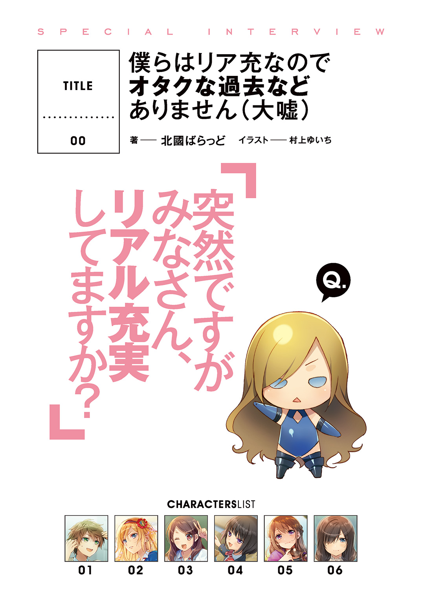
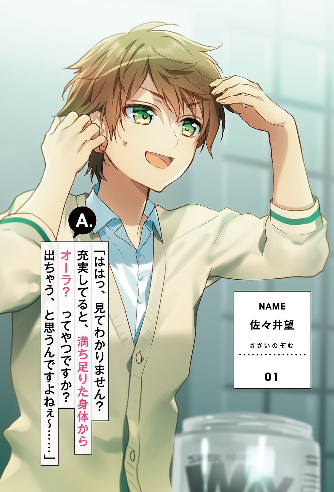
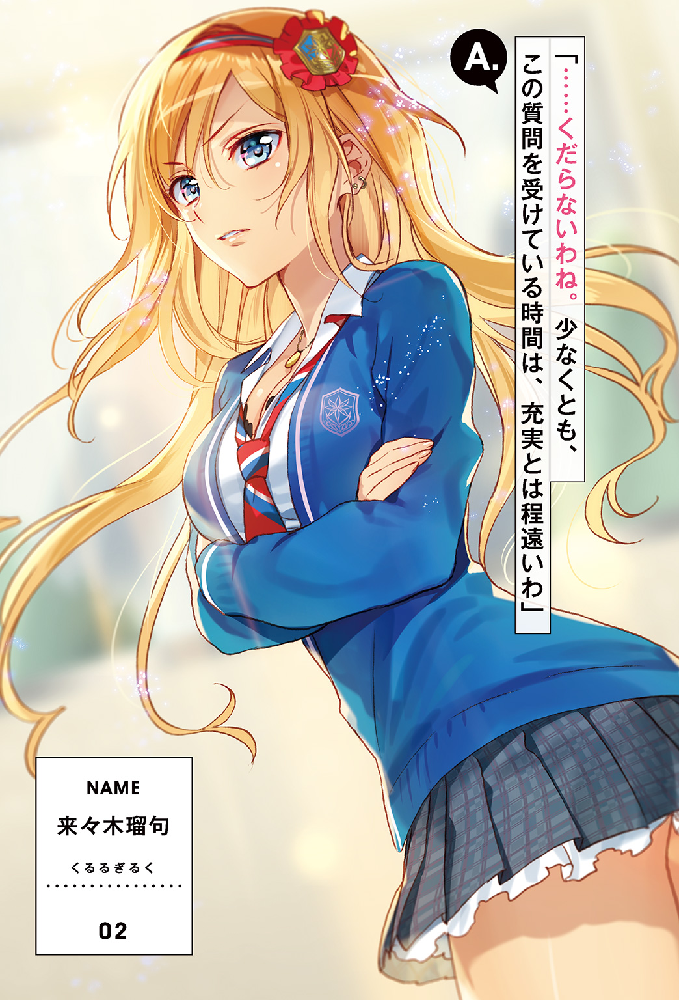
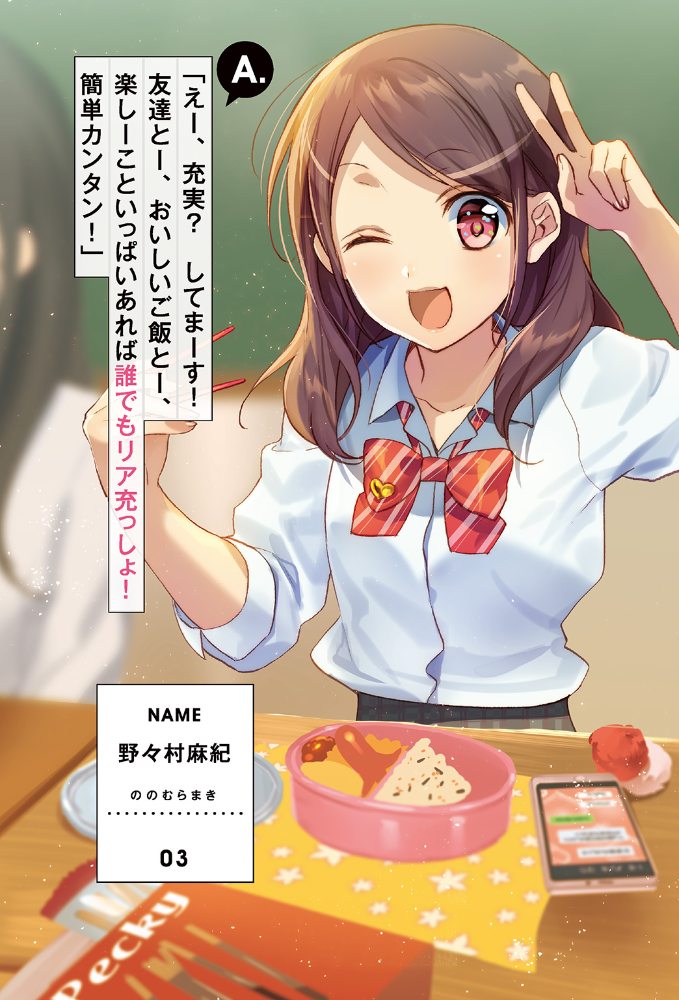
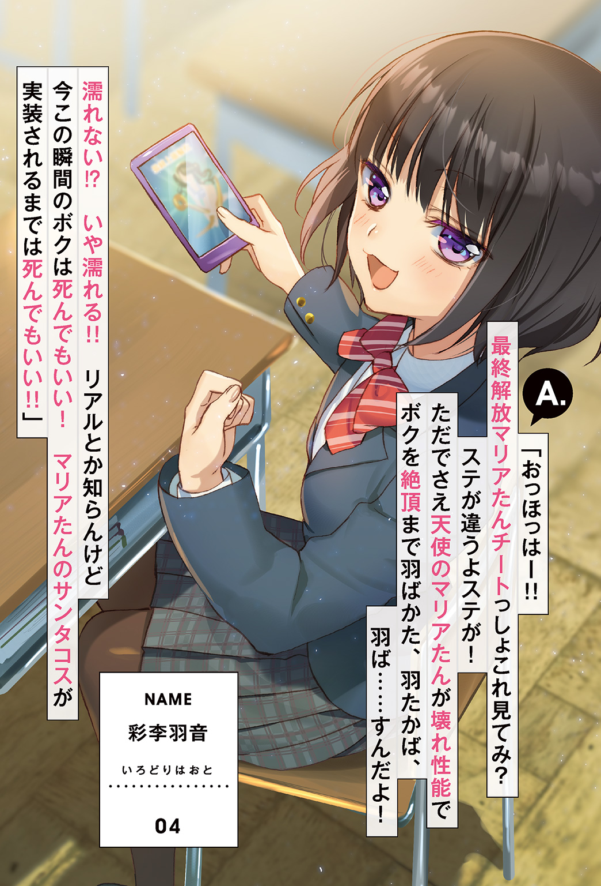
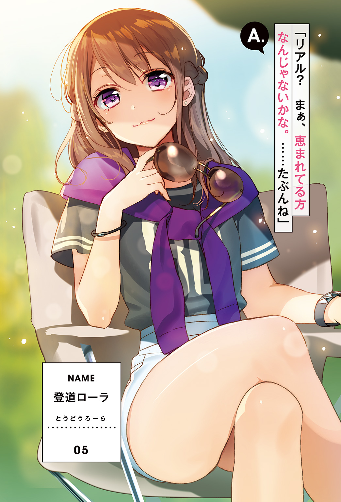
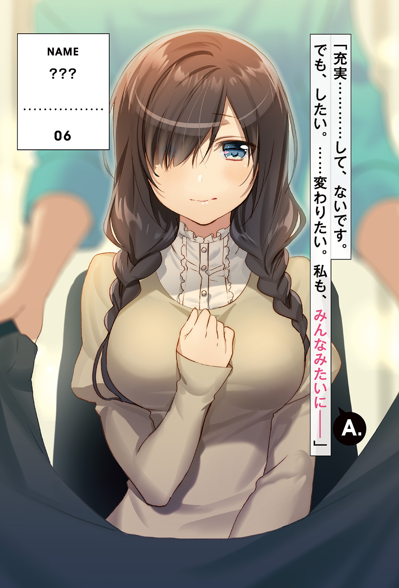
 ダッシュエックス文庫DIGITAL
ダッシュエックス文庫DIGITAL
僕らはリア充なのでオタクな過去などありません（大嘘）
北國ばらっど
プロローグ 『佐々井望は変わりたい』
高校進学の、二週間前のことだった。
「おお......」
当方、引っ込み思案ガチオタ系男子。
当然ぼっち。
いわゆる〝陰キャラ〟と呼ばれる人種である。
そんな俺が、生まれて初めて訪れた美容室。
足を踏み入れた瞬間に「ここはお前の居場所ではない。死ぬがよい」と言われたかのような気になってしまった。
実家から電車で二十分。わりと近場にあるのがこの美容室〝キャンディポップ〟。
カリスマ読者モデル、登道ローラ行きつけの店として、テレビで紹介されていたので訪ねてはみたが......こりゃキツい。
煌びやかな内装、色とりどりの整髪料。
そして、ただよう香水のような匂い。
店員は当然オシャレだし、来ている客層までおしゃれである。
右を見ればリア充くさい。
左を見てもリア充くさい。
ヤバい、なんか刺さる。この、キラキラした感じのムードのキラキラ部分が、すげー非リア充な俺に突き刺さる。
あーもう無理無理。やっぱ俺に美容室とか無理。
すでに心が折れかけていた俺は、今にも何もかも投げ出して、家に帰ってお布団もぐってゲームしたい気分になっていた。
そんな状況での、ことだった。
「――――がっ」
突然、響いた声の方へと、視線が引きつけられた。
待合席の長椅子に......女の子が、いた。
クセ毛の黒髪。
目元を隠す、ガードのような長い前髪の奥にはメガネ。
自然と丸くなる背筋は、俺たち「陰キャラ」の特徴。自信のなさをあらわす、日蔭者の仕草。
......この女の子は、〝同類〟だ。
違うのは性別くらいで、性質的には、同類だ。
その子を意識した瞬間......一気に、身の回りの空気が軽くなった。
「が......ガン・ガール............！」
上ずった声で、女の子は続けた。
震える手で指さしたのは、俺の鞄につけたストラップ。
「これ？」
「......は、はい。それ、です」
テレビアニメ〝機甲戦姫ガン・ガール〟のストラップである。
「......お、お好きなんですか？ ......その、アニメ」
「えっ......あ、ああ、うん」
一瞬、話しかけられたのだと認識するのが遅れて、返事がたどたどしくなる。
けれど、同類として認識したからだろうか。
珍しく異性と話すというのに、不思議と、声を出しづらいとは感じなかった。
「その......き、機甲戦姫ガン・ガールシリーズを見ている女の子がいるなんて......思わなかったよ」
「け、結構、女の子から見ても面白いですよ？」
「特にブルドッグ隊のマドカが好きでさ」
「わた、私も、私もです！ いいですよね、口数少ないクールな一匹狼！」
「わ......分かる？ 分かってくれる？」
「分かります。それ、それはもう......とっても！」
気づけば自然と、彼女の近くに座って話し始めていた。
自分のようなオタクが、いないと思っていたわけではない。
けれど、それは感動的な遭遇で。同年代と、まして異性と、こんなにたくさん言葉を交わしたのは本当に初めてだった。
「音楽もいいんだよな。最近だとＯＰとかも格好いいし」
「で、でも、初代のころの曲も好きですよ」
「あー、いいよな。味があって」
「私は、ＥＤが好きです」
「あー......〝眠れ、ガン・ガール〟か」
「いえ、もう一つのほうの」
「......〝子羊のスキャット〟？」
「そうそう！ それです！ ＯＰは結構知名度ありますけど、ＥＤはなかなか分かってくれる人がいなくって......！」
「まああれ、中盤の特殊ＥＤでしか流れないし......綺麗な曲だけど、戦闘アニメのガン・ガールっぽくないって言われるもんな」
「そうですか？ 私はヒロインたちの、不安だけど凜として立ち向かう姿によく似合って......その、一番好きです」
「いや、俺も好きだよ。ヘビーなファンほど好きなんじゃないかな」
「......ふふっ、ですよね」
人と話すのが楽しいと感じるのは、とても久しぶりだった。
それは彼女にとっても......また、同じだったらしい。
だからこそ、話が弾んだ。
でも、だからこそ。
......やがて、話題はアニメ以外の方向へと転がりはじめた。
「その......君、この美容室来るのは初めて？」
「あ、はい......あの、そちらはよく来るんですか？」
「いや、俺も初めてで」
「......じゃあ、同じですね」
「ああ、同じだ」
そんな同じ日蔭者の仲間が......なぜ、流行りの美容室なんて場違いな場所にいるのか。
その理由を口に出さずにいれば、幸せな時間は続いたかもしれない。
「俺はさ」
けれど、事実として俺はその話題にふれた。
「リア充に、なりたいんだよ」
口に出した瞬間、空気が冷えた。
「..................リア充、ですか？」
「うん......まあ、進学を機に、ちょっとキャラ変えたくてさ」
「こ、高校デビューっていう、やつでしょうか」
「......そ、そういう言い方も、あるかな」
「へ......へぇ」
何が「へぇ」か。
同年代の女子から繰り出される「へぇ」の殺傷力を、彼女は理解しているのだろうか。
意を決して訪れた美容室。
初めて顔を合わせた女子としては、いけない話題だっただろうか。
一秒が一分にも一時間にも感じられそうな、いたたまれない空気が、ヒト二人ぶんほど空けた俺と彼女の席の間に立ちこめている。
けれど、そんな気まずさは、次に聞こえてきた彼女の言葉で打ち破られた。
「じ、実は、私もなんです。高校デビュー」
そう言われて、思わず隣の椅子へ視線を移した。
黒髪の、地味な外見。
どこまでも俺と同類だろうと感じさせる容姿の彼女が、美容室なんて場所にいるんだから......そりゃ、まあ、納得だった。
「あ、そ、そうなんだ？」
「うん......その、進学を機に引っ越して、遠い高校に行くもので......」
「そっか......うん、ぼく、お、俺も実は、そんな感じで......」
「へ、へぇー......おそろい、ですねぇ......」
「そ、そう、だねぇ」
お互いに、言葉に詰まりながらではあるけど、むしろそれが妙に気を楽にする。
人間、自分と同じタイプの相手には、極端に親しみを感じるもので、話せば話すほどに、少女から感じる空気は落ちつけるものだと感じていた。
初めての美容室は、相変わらず、ギラギラと眩しい空気に包まれている。
オシャレとか、イケてるとか、そういう感じに満たされた場所は息苦しい。
この子と話している間は、息継ぎができる気がした。
「で、でもさ」
ああ。
だから、なのだろうか。
なんとなく口が軽くなっている自分を、自覚しつつあった。
「正直、これからキャラ変えるの、しんどそうだよね」
「......そう、ですね。高校卒業するまで、ずっと演技してるみたいなものですし」
「そう考えると気が滅入るよ。一日の半分くらいは、リア充に合わせて話さなきゃならないんだもん。部活とか入ったら目も当てられない」
「あはは......。笑いごとじゃないけど、気持ちはわかります」
「もうすぐ入学式だけどさ、その前にこういう話ができる人に会えて良かったよ。ちょっと頑張ろうって気になれるし」
「......私も、です」
前髪と眼鏡で隠された顔は、外見が分かりにくいけれど、うっすらと笑った口元は見えた。
なんだ......結構かわいい、気がするぞ？
けれど、言葉につっかえたり、話せなくなったりするような緊張は感じない。
「どうして、高校デビューしようと思ったんですか？」
不意に聞かれた。
それは自分の中では当然、答えの決まったことではあったが、友達もいない、相談相手もいない孤独な決意だった。
だから人に聞かれる、そのこと自体が少し嬉しかった。
「正直言うと、リア充なんて下に見てた。こいつら、群れなきゃ何にもできねーのかとか、頭空っぽでゴキゲンだなとか」
教室の隅を、塔の天辺みたいに考えてふんぞり返って。
明るく騒ぐ連中を馬鹿にして、斜に構えて。
「もっと有意義なことあるだろって。そんな、学生時代の浪費みたいな、馬鹿騒ぎばっかりしてさ。アホなんじゃないの......って」
流行のドラマなんか興味なかった。
大勢が見てるってだけで、価値が下がると思ってた。
「でも......そうやって、そっぽ向いて過ごしてさ。中学の終わりに差し掛かって、気づいた。目の前になんにも色がないこと」
「色、ですか？」
「灰色だった。誰とも話さない、誰にも媚びない。一人で完結して、触れ合う必要なんかなくって......最後の文化祭の時かな。気づいたのは」
今も鮮明に覚えてる。
スポットライトを浴びて輝く、クラスメイトたち。
俺はそれを、浴びられなかった。
「積極的に相談とか、交流とかしてない俺は、照明係だった」
「......」
「そうやってきて、舞台の上のあいつらに眩しい光を当てていて、ふっと思った。高校行ってもこうなのかな、って」
「............」
結局、輝いているのはあいつらだった。
「照明係は嫌だな、って思ったんだ」
影の中から眺めている俺は、あの眩しさの中にはいなかった。
「俺も光を浴びる舞台の上で、演技をしていたかった」
「......わかります」
頷かれ、目を向ける。
「......私も、同じ。同じです。寂しくて、悔しくて、辛くって。だから、変わってみようって思って」
「気が合うね」
「ほんとですね」
「......」
「......」
どちらともなく可笑しくなって、ぷっ、と笑った。
ああ、なんだ楽しいじゃないか。
話ができるって、本当に。
「......そ、そういえば名前、言ってなかったです、よね」
「ああ、そうだった。俺は佐々井望って言うんだ」
「......あの、私は――」
「オ客様チィーッス」
「えっ、あ、はい！」
不意に美容師の一人から声をかけられ、少女が慌てて席を立った。
「チュイッス、奥ノ席ドゾッス。オライッ」
「わ、わかりました......！ ごめん、行ってきますね」
「う、うん。頑張ってね！」
「足元気ヲツケテウェイッ！ ウーッウーッ！ セイ！」
何を頑張れなのか、言った自分でもよく分からないが、少女はにっこりと笑って、美容師について歩いていった。
いかにもシャレオツな内装の中、まるで戦場へ向かうかのような緊張感。
彼女と同じ、俺にはわかる。
俺らのような日蔭者は、この眩しい空気の中にいるだけで、胸が詰まって死にそうなはず。
それでも挑もうと、変わろうとする彼女の姿に、勇気づけられた俺も覚悟が決まる。
「名前......聞きそびれちゃったな」
名残惜しい気もするが、名前を聞いてどうするのか。そもそも、この後改めて、彼女に話しかける勇気など俺にあるのか。
俺は四月から、隣町の高校へ行く。
彼女も遠いところの高校へ行くと言っていた。
もう一度会えるとは思えない。だからこそ、最後のチャンスだったのに。
臆病な自分が嫌になる。
けれど、それを変えるために、ここに来た。
「次のお客様どうぞー」
「は、はい！」
考えている間に自分も呼ばれ、席を立って、歩きだす。
この一歩が、新しい人生の、新しい自分への第一歩。
髪を薄く染め、パーマをあてて、見た目からでも、変わるために。
言葉にすれば陳腐な高校デビュー。
けれどここから、俺は変わる。
俺たちは、きっと変われる。
いつか、もっと、輝いた姿になって。
その時、きっと変わっているだろうあの子に笑われないように。
「......あの、ところでさっきの美容師さんとキャラ違いません？」
「いや、彼はちょっと変わり者なので......」
「......大丈夫なんですか？」
「腕はいいですから」
微妙に引きつった、店員さんの顔。
......あの女の子、大丈夫だろうか。
一章 『来々木瑠句について、どう思いますか？』
「来々木瑠句？ まあ、美人？」
「うん、タイプじゃあないけど、キレーなんじゃないかと思うよ。ナンパ？ いや、無理に決まってんじゃん」
「あー、ぶっちゃけコワいよね」
「あれギャルとかじゃないって。不良だよ、フリョー。近づかないほうがいいよ」
「く、く、来々木さんですか？ あの、僕は......ちょっと、よく分かんないです。その、興味とか別にないですし......ほっといてくださいよ」
「ボクは好きだよ。もっとお話ししてくれればいいのに」
「胸はでかいよな。冗談でも言う勇気ないけど......ははっ、殺されちゃうよ」
「やめてくれ......か、関わりたくないんだ。ウ、ヴォェッ！」
「ノーコメントで」
■
「瑠句ちゃんのこと、どう思う？」
放課後のことだ。
俺は学級委員なわけだが、本日は集まりもないのに、委員長の野々村さんに残ってくれと言われた。
ひとつの机を挟んで、向かいあって座っている。この情景に、妙な期待をしていたのも少し前。
唐突に飛び出したその名前に、一瞬で気分が切り替わった。
「どう、って？」
「Ｄｏ思う？」
「なんで若干ウザく言いなおしたの？」
「そこは深い意味ないの。いいから、どう？」
「......瑠句ちゃんって、〝あの〟来々木さんのこと......だよね？」
「そそ。〝どの〟ことなのか知らないけどさ。アタシの隣の席の瑠句ちゃんだよ」
そりゃ俺だって、理由なく〝あの〟なんて言ったわけじゃない。
来々木瑠句。
五月も半ば。教室の空気も固まりつつあるこの１年Ｂ組にとって、彼女の名前は素直に口に出せるものではない。
少なくとも俺はそう思う。
エピソードをあげればキリがないが、気弱な生徒ならまず触れはしない。スクールカーストの上位陣ですら、扱いには困ると見える。
アンタッチャブルな女子である。
「そんな話題出せるの、たぶん野々村さんくらいだろうね」
まあ、目の前の女子......野々村麻紀でもなければ難しいだろう。
彼女は言わば、クラスの女子の中心人物。
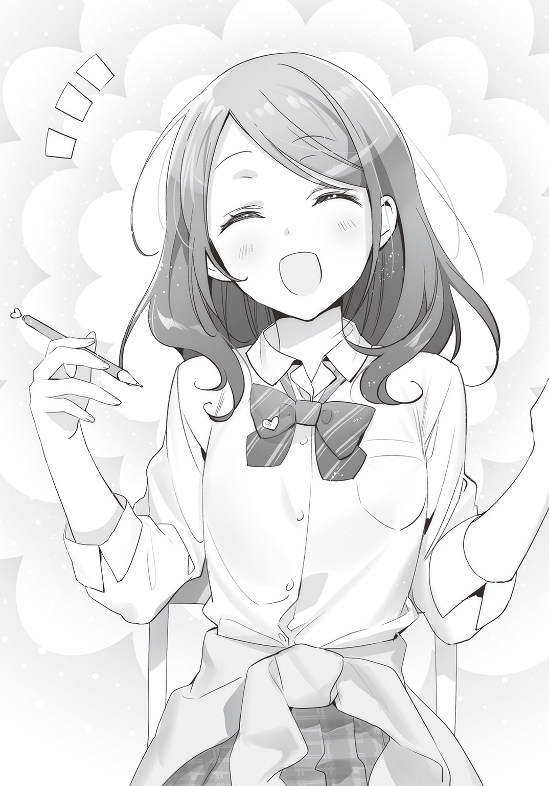
入学以来の目標〝友達百人〟なんていうマンガじみたものを四月の終わりには早々に達成したという、リア充・オブ・リア充だ。
栗色の髪にぱっちりとした瞳。
飾らないながらも、自然な美人。
成績優秀、スポーツ万能、人望厚い学級委員長。まるでフィクションのスペックだが、実在するのだから仕方ない。
学級委員にならなければ、俺など接点もない相手だったろうが、屈託も偏見もない彼女の態度は、根暗で中二病で友達のいなかった俺の、高校デビューによるキャラ変え生活を助けてくれた。
まだ一カ月半の付き合いであるが、俺は心からこの野々村さんを信頼しているし、感謝もしている。
クラスメイトに、誰かひとり「人間的に好きな女子は？」と聞けば、九割が野々村さんの名前を上げるだろう。
端的に言えば、来々木瑠句はその真逆の相手だ。
このクラスには関わりを拒否されている女子が二人いる。
そのうちの一人が、件の来々木瑠句である。
「アタシさ、あの子はあんまりクラスに溶け込めてないんじゃないか、って思うワケよ」
「ま、その通りだろうね」
「浮いちゃってる、っていうかさ」
「浮き過ぎて重力振り切って大気圏突破して衛星軌道に乗ってついたあだ名が〝エンデバー〟になるレベルのことを、浮いてるって言うなら、そうかもね」
「そこまで言うことなくない!?」
「言ってたやつがいたんだよ。大ウケしてたっぽいけど」
「悪趣味だなぁ」
「あと〝金色夜叉〟とか〝デーモンキング〟とか〝目つきがロロノア・ゾロ〟とか〝邪悪な錦糸卵〟とか」
「悪趣味ってレベルじゃないなぁ！」
あくまでも、マジョリティの話。
俺の意見じゃあない。
「......ふーん。ま、そういう心無い意見をなくせるほど、人間社会は綺麗にはなれないよね。でも、だからってこの状況のままでいいってことはないと思うんだよねーアタシ」
「......」
傾き始めた陽光の差し込む、静かな教室。
腕を組み、脚を組み、椅子にふんぞり返る野々村さんの姿は、正直言って眼福だ。モデル体型の野々村さんは、露出がなくとも手足だけでぐっと来るものがある。
普段ならば俺も、この場面でスカートの裾だの、半袖の二の腕だのを凝視する余裕があったかもしれない。
だが、半月ほどにわたる学級委員の付き合いで、俺はすでに知っていた。
野々村麻紀がこういう仕草をするときは、大抵、悩んでいるフリをして答えは決まっているものなのだ。
「なんとかしてあげたい」
「......」
「あげたくない？」
「......いや、お言葉だけどね野々村さん」
「なんとかしてぇ ッ！」
ッ！」
「そういうの、わりとお節介っていうか」
「あげたいなぁッ！」
「聞く気ないだろこれ！」
一つだけ、彼女の欠点を上げるとするならば「お節介」という言葉が相応しい。
野々村麻紀は、頭が良いのに頭が悪い。
彼女は捨て猫を見つければ絶対拾うし、お年寄りを見れば手を引く生き物だ。
相手の意見を聞く前に、正しいと思ったら行動してしまう。
性善説がリッターバイクで走り回っているようなもので、よく言えばポジティブだが、悪く言えば向こう見ず。
普段はそれを、彼女の魅力だと思っている。
しかし矛先がこちらに向いてしまうと、話は別だ。
「というわけでぇ......じゃじゃじゃじゃーん！」
「今時その前振りはちょっと古くないかな野々村さん」
「てってれてっててーててー」
「著作権に触れる秘密な道具出てきそうな音楽もやめて野々村さん」
「細かいことは言わないの。ほら、これこれ」
そう言われ、差し出されたスマホを覗きこむ。
「手作りチラシ？」
「ＬＩＮＥで配る用の文面ね！」
「１年Ｂ組、親睦カラオケ企画......」
「日時は皆の希望を募ってから決めるけど、来週の末にはやりたいなーって」
「......なんで？」
「皆で歌って騒いでパーっと盛り上がって一気に打ち解けようってこと！ 話さえできれば、瑠句ちゃんも誘えるでしょ？」
「..................」
............えっ......。
ええええぇぇぇぇぇぇぇぇ............？
「ま、待て待て野々村さん、それはちょっと」
「あれ、なんかマズかった感じ？」
「いやマズいでしょ！ クラスから浮いてる子を誘うのにいきなりカラオケはハードル高いよ！ しかもクラス親睦とか大人数で！」
「みんなでやれば気楽に参加できるかなって！」
「徐々に慣らさなきゃ！ アンコウだっていきなり陸に上げらたら死ぬんだぞ！」
「魚は死ぬでしょそりゃ」
「そういうんじゃなくて！ っつか、しかも連絡がＬＩＮＥって。クラスの連絡用グループにすら入ってないでしょあの子！」
「個人で送るし、ＩＤは知ってるからさ」
「いや、だからっ」
「大丈夫だよー。こういうのは、一気にバイブス上げちゃえばなんとなく打ち解けられるもんなんだって！ 土俵にさえ上げてもらえば、アタシの仕事だからさ」
ぱちん、とウィンクされた。
ハゲるほど可愛い。
って、そうじゃなくて......くそ、そうか。そもそも初対面とのカラオケが気まずい、という発想がないのか。
っつーかカラオケって。
その場の空気を読みつつ的確に盛り上がる曲を選択し、なおかつヒかれない程度の歌唱力やパフォーマンス力が要求される。
コミュ障からすれば悪魔のイベントだぞ。
「ま、やってみなきゃ分かんないじゃん。アタシも半分ダメ元だしさ、チャレンジしてみなきゃ何も始まらないじゃない？」
「チャレンジするのは来々木さんの方だよね」
「アタシたちがそのチャレンジをサポートするワケよ」
「どうやってさ......ぶっちゃけ俺も野々村さんも、別に来々木さんと仲いいわけじゃないでしょ？」
「そこで佐々井くんからも、瑠句ちゃんとお話ししてみてほしいんだけど」
ほら来た。
絶対来ると思った。
この流れ、水戸黄門の展開より読みやすいもん。知ってた。
かと言って、きっぱりと断れるかというとそうでもない。〝野々村さんに期待される〟ということの価値は、安くはない。
だから返す言葉も、なんとなく煮え切らないものになってしまう。
「や......で、でも言っちゃなんだけど、男子の俺より女子の野々村さんが直接話したほうがスムーズなんじゃないかな？」
「や、話してはみたよ」
「だったら――」
「でもなんか、アタシ嫌われてるみたいなんだよね。てへぺろ」
だろうねぇ、って感じだ。
「んー、コミュ力の創造神みたいな野々村さんが嫌われるような相手だったら、たぶん俺も無理だと思うんだよね」
「その仰々しすぎる評価初めて聞いたわアタシ」
「いや、別に嫌とかじゃなくてさ、単純に自信ないっていうか。野々村さんが無理ならクラスの誰でも無理でしょ。ムリムリ絶対無理アブソリュート不可能」
「アブソリュート」
「この話早くも終了って感じでフィニッシュじゃない？」
「や、そんなことないと思うよ？ 佐々井くん、アタシよりよく人のことを見てるもん。瑠句ちゃんと話すとっかかりも摑みやすいんじゃないかな」
「それこそ、そんなことないって」
「事実、たった今聞いた瑠句ちゃんの評価だって、アタシより詳しかったし......アタシじゃ分からないことでも、佐々井くんなら分かると思うんだよね」
「買い被りすぎじゃないかな。来々木さんに関しては、目立つからたまたま目につくだけであってさ。さっきの話だって、クラスメイトなら大抵は知ってるよ」
「いいや！ 佐々井くんには絶対、人より秀でた〝見る目〟があると思う。例えばさ、アタシのこととかも佐々井くんならよく分かるでしょ？」
「そりゃ、野々村さんとは話す機会も多いから知ってることも多いけど......特筆するほど理解してるわけでもないよ」
「例えばさ、アタシの好きな食べ物とか当ててみ？」
「えー......じゃ、じゃあチーズとか」
「......おっけい、次までに食べられるように克服しとく！」
「自分を曲げんなよ！」
「ウソを現実に変えるくらいの影響力があったってことだよ！ ほら、もっと自信もって！ 佐々井くんが黒って言えば白鳥も黒くなる勢いで！」
「わりと無茶苦茶言うなアンタ！」
「でも、今ワザと嫌いなもの言ったでしょ。ピンポイントで」
「............そんなことない、けど」
なんだよ、お見通しかよ。
やっぱ野々村さんには敵わないじゃないか。
「んもー、謙遜しなくていいんだよ。佐々井くんならさ、こう......なんか、やってくれると思うんだよねアタシ。なんていうか、持ってる......っていうの？」
「その女子特有のフィーリングでグイグイくんのやめてくれる!?」
「フィーリング以外の何に頼れっていうの！」
「根拠だよ！」
「いやいやいや、根拠はあるよ。アタシ以外に学級委員に立候補してくれたの、佐々井くんだけだったじゃん？ それってクラスのためになる！ っていう気持ちがあるってことじゃん」
「ま、まぁ、それは」
「アタシさ、あの時けっこー嬉しかったんだよ。クラスのためになること、率先してやってくれる人が自分以外にいてくれてさ」
いや、そんな立派な志などなかったのだけど。
ただ単純に、内申点とか、友達づきあいに疲れたら逃れる口実とか、打算が一〇〇パーセントの選択だったわけで......。
「そういうわけだから......佐々井くんに懸けたいんだ。アタシ」
「懸けられるほうの身にもなってよ......！」
立ち上がった野々村さんに、ぽん、と馴れ馴れしく肩を叩かれる。手の力は弱くとも、それだけでずっしりと重たいものを担がされたように感じた。
「いや、ちょっ、待って！ 言うだけ言ってどこ行くんだよ！」
「あはは、ちょっと話し込みすぎちゃった。もうすぐ部活始まっちゃうから続きはまた今度で。投げっぱにする気はないからさ、ねっ！」
「ねっ！ じゃないが！」
「大丈夫！ まだ付き合い浅いけどビビっとキてるもん。アタシも手伝うからなんとかなるって！ じゃっ！」
言うだけ言って、反論する前に野々村さんは教室を後にしてしまった。まるでつむじ風のように走り抜けたその背中に、追いすがる暇もなく話は終わった。
「......ショッキングピーポーマックスなんだけど」
とりあえず、最近調べたリア充独特の独り言をつぶやいてみた。
むしろ、自分でイラっとした。
■
高校進学にあたり、掲げた目標があった。
リア充になること。
アニメを見漁り、哲学と政治にハマり、斜に構えて過ごし続けて、見事に友達を失くした中学三年間を過去に葬りたかった。
元の中学から遠く離れた、この深空町の第二高等学校に進学して、身の回りの環境を何もかも劇的ビフォーアフター。
入学してから一カ月を過ぎて、俺の生活は順調に回っている。
心機一転した人生は、想像以上に様変わりした。
まず覚えたことは、〝見る〟〝聞く〟〝言わぬ〟の三拍子。
周りをしっかり見て、空気を読む。
相手の話をきちんと聞き、同意を示す相槌を打つ。
しかしながら、決して余計なことは言わない。
これさえ守れば、リア充の文化に飛びこんでいっても、最低限のコミュニケーションは取れた。要は周囲の色に染まれ、ということだ。
逆に、これが出来てないやつは見るからにクラスに溶け込めていない。
そういう意味で......来々木瑠句。
彼女は圧倒的に、分かりやすかった。
「ダメよ～！ ダメダメ！」
「............」
「......」
「..................」
......。
で、で、出た～！
ヒャダルコでござる～！
放課後の廊下に吹きぬけた上級氷結呪文でござる～！
野々村さんに逃げられて、途方に暮れるのにも飽きて帰ろうと教室を出た瞬間、それは俺を巻き込んで襲いかかった。
思わず凍りついた俺は、声のしたほうを凝視した。
爆心地は、廊下の隅で談笑していた女子グループ。
その特徴的な声は、見るまでもなくこの惨劇の主犯を浮き彫りにしている。
来々木瑠句。
一瞬で冷え切った空気の中、主犯であろう瑠句はいつも通り、冷たい無表情だった。
そんな瑠句を見て、女子グループの一人が果敢にも話題を再開する。
「え、な、なに今の」
疑問を抱かれたのが予想外だったのか、来々木は静かに目を細めた。
怖い。
「............知らない？」
「いや知ってるけど、さぁ」
「流行ってるわよね」
来々木の声は、とても華の高校一年生が上げていい迫力ではなかった。低く響くくせに、よく通る力強さを持った声だ。喩えるなら、耳にツララ突っ込まれたような。
威圧された女子に代わり、震えながらも別の女子が会話を継続する。
「え......エレキテル連合のネタ？」
「それ。似てたと思うのだけど」
「えっ......」
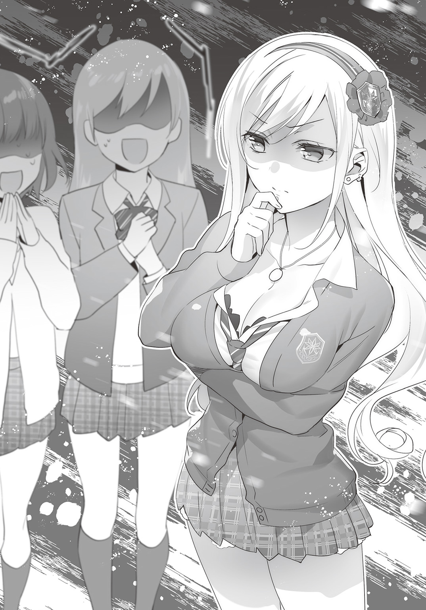
来々木の返答に耐えきれなかったのか、一人の女子がまるで腐った刺身を投げつけられたような顔をした。
それをすぐさま、他の女子が肘で小突いて黙らせた。次々と仲間をフォローする連携っぷりには、見ているこっちも涙すら出そうになる。女子は皆なでしこジャパンなんだね。
「に......似てた似てた！ うん、瑠句ちゃんすごい！」
「そ、そっくりだったよね......角度とか」
「あ......あはは！ いや、ズルいわ、今〝あえて〟のそれは！ やだー、瑠句ちゃん面白―い。ウケるー！」
「............」
さも不機嫌です、みたいな顔で来々木は黙る。
ただでさえ冷たくなった空気が、一気に氷点下まで落ち込んでいく。どうしよう、とオロオロする女子たちの沈黙を破ったのも、また来々木だった。
「別に無理して笑わなくたっていいわよ？」
「や......やぁだー、無理とかしてないんですけどー。瑠句ちゃんリアルにウケんだけどー、マジウケなんだけどこれー」
「ほんっと瑠句ちゃん面白いよねー」
「......お、おもしろーい」
「心から言ってる？ それ」
「と、とーぜん！ だよねーみんなー！」
「ウ、ウケるー」
「あははー、ウケるー......あは、あははは......」
「噓よね」
「............」
「......まあ、その」
「............なんか、はい。すみませんでした............」
.........。
ツラっ！
え、何あの空気、辛っ！
なんで関係ない俺までダメージ受けなきゃならないんだよ、寒波の余波をこっちに向けんじゃねーよ！
あれが見るからに「陰キャラでーすネクラでーす」というやつがスベったのなら、まだいい。無視されて終わりもあり得るし、そちらの方が傷が浅い。
しかし来々木瑠句は、無視できるタイプじゃない。
端的に言うと......怖いのだ。
美人ではある。
それは疑いようもない事実だし、男子もそう評価している。
顔立ちは整っていて、スタイルも良い。
だが、あの鮮やかな金髪は目立ちすぎる。
アメリカンスクールかよ、ってレベルではだけた夏服のブレザーと、晒し過ぎて逆に誰も寄りつかない大きな胸と谷間。
冷たげな切れ長の瞳。高い鼻。
しゅっとした顎のラインと、揃いに揃った美人のパーツ。
しかし、目つきが悪く、声が低く、おまけに態度が悪いので、なんというか......やっぱりグレてるように見えてしまうのだ。
ああいう女子がスベった時って、なんとも言えない緊張感が走る。
俺だったらその場で人生をドロップアウトするようなプレッシャーだ。
四月の半ばには、気弱な男子が睨まれただけでトイレに行って一時間ほど吐いてたこともあったが、それはそれで失礼すぎるとは思う。
とはいえ、無理もあるまい。
「そ、それはそうと、駅前に新しい店オープンしたの知ってるー？ ヤマオアケチだって」
おお、女子の一人が話題を立て直した。
リア充ならではのリカバリー能力......いや、それに加えて女子という存在の持つトーク力だな。無から話題を生み出すことにかけて、彼女らはほんとに卓越している。
しかし、女子が本領を発揮するのはここからである。
「マ、マぁジでぇ!? Ｙ・Ｏ？ めっちゃ気になんだけど」
「カワイーのあるよねー。アタシ春コート欲しー」
「わかるー、まず春コートだよねー。何はなくとも春コートだよねー」
「それなー！」
「登道ローラが着てたじゃん？ アレヤバい、めっちゃ欲しー」
「そーそーそー、アンタ登道ローラ好きだもんねー、分かるー」
「マジ分かるわーローラめっちゃいいじゃーん」
「分かりすぎでしょーウケんだけど」
「あはは、ウケるー？」
「逆にウケるー、あはは」
出た、分かるラッシュだ。
あれが始まるともう、展開がなくともとりあえず会話が続く。
連想ゲームみたいに繫がる単語を出しては「分かる」「マジで」「ウケる」さえ使い分ければ、コンボが途切れないという寸法だ。
いやぁ、つくづくすげえよ。分かる→分かる→分かる→の永久コンボだもんな。もう解脱してんじゃないの、ブッダ系女子。
何はともあれ、再び順調に回り始めた会話ではあるが、ぎくしゃくした空気の爪跡はたしかにそこに残っている。
というか、あの場にまだ来々木がじっと留まっているのが見てて辛すぎた。
なんていうか、日常系ほのぼの４コマ漫画にヤンキーバトル漫画の登場人物が紛れこんでいるような異物感だ。
「......アレを、カラオケに誘えってのか」
野々村さんもとんでもねえこと言うなあ。
この俺、佐々井望はただ、過去を忘れて平凡に、あまり目立たず穏やかな学園生活を送りたいだけなのだ。
学級委員をしっかりやりたいわけでもない。
内申点とか、面倒事からバッくれる時の口実になればとか、打算だけで請け負ったものだ。高校生活の目的は、そんなところには存在しないのだ。
だから正直、クソ真面目に野々村さんの言うことを聞く必要はない............と、言いきれれば楽なのだが、そうでもない。
何せ――。
「うーい、佐々井ー！」
そんなことを考えていると、後ろから声をかけられた。
なじみ深い響きは、振り返る前に声の主を悟らせる。
「ちょりーっす」
「須藤。まだ残ってたのかよ」
須藤雄介。
彼は隣の席の男子だ。明るく快活で、俺と付き合いがある中では、クラスの男子の代表格、という感じのやつ。
お調子者で、少し思慮は足りないが、基本的にはいいやつだ。野々村さんと並び、俺の学校生活におけるコミュニティの中心を担う人物と言える。
「おーう。ほら、オレってぇ、バスケ部見学に行ってんじゃぁん」
「いや初耳だけど」
「でもぉ、イマイチ空気が肌に合わなそうでさぁ、ちゅーかぶっちゃけフケて帰ろうと思ったんだけどぉ、へヴィメタルマントヒヒに捕まっちゃってぇ」
「純粋に疑問だけど何だよその生物」
「そりゃバスケ部の主将っしょ」
「なんで俺が知ってるの前提で喋るの......？」
常識かよ。
「そういう佐々井も今帰り？ そっちも部活見学的な？」
「いや......えっと、ほら。野々村さんに呼ばれて」
「はぁ!? んだよ、オレがエレキテルマンドリルの相手してる間に随分いい目見てんじゃんこのスケベ！」
「さっきまでヘヴィメタルマントヒヒだったろ!?」
「２パターンあんだよ」
「何やったらそんな熱帯の類人猿のあだ名が２パターンつくんだよ！」
「事の起こりは十五年前――」
「聞いてねえし長えし！」
「いや、聞きはしたじゃん」
「したけどさ......ってかほら、俺ら学級委員だから。それで残ってたんだよ」
「ああ、そういうパティーンね。ったく、だから面倒だっつったじゃん、学級委員なんてさぁ。野々村と一緒とはいえ、よくやるわ」
「ほら、俺Ｈ大狙ってるし......」
「っはー、一年から進路のこととかマジメすなぁ」
「......まぁ、な」
マジメという言葉がネガティブに使われるのは、どういう感覚なのだろう。
引っかかるものを感じたところで、それを口に出してもいいことなんてないから、言わないのだけど。
「オレなんか馬鹿なことしか考えてねーけどなぁ。彼女ほしーとか部活たりぃとか、スマホ替えたいとか服ほしーとかしば漬け食いてぇとか」
「いや、俺もまあ......しば漬け以外はそんなもんだけど」
「あ、服と言えばさ。駅前にヤマオアケチ出来たんだよ。知ってる？」
「マジで？ Ｙ・Ｏ？」
本当はよく知らないけど、タイムリーな話題だったので、先ほど女子グループから聞いた言い回しをそのまま使ってみた。
「そそ。この辺りじゃ売ってるとこなかったからさぁ、夏物欲しいし帰りに寄ってみんべ」
「んー」
どうしよ、正直興味ない。
とは言ってはならないのが、友達づきあいというものだ。駅の方向が俺のアパートとは逆でも、服を買う必要がなくともだ。
「寄ってみん？ 寄ってみんとす？」
「いや武将みたいな口調にする必要ないでしょ」
「メントス？」
「スカっとしねえわ」
「とにかく駅のほうで中村とかも遊んでるらしいから、合流してそのあとマック寄んべよ」
「......りょーかい」
「ッケェーイ、決まりな！」
中村は苦手なんだけど、とも言わない。
モスの方が好きなんだけど、とも言わない。
よほど必要に迫られない限り、相手の言葉を否定しない。それがまず俺が身につけた、新しい環境での処世術だった。
まあこの通り、須藤はかつて俺がいた世界とは別世界の住人......リア充側の人間であるにもかかわらず、話していて素直に面白い相手だ。
須藤と席が隣だったことは、学級委員に野々村さんがいたことと並んで、俺の高校デビューにおいて最大の幸運だったと言えるだろう。
この幸運な巡り合わせを手放さぬよう、俺は毎日必死になっているわけだ。
付き合いの悪いやつ。ノリの悪いやつ。
そういう評価だけはされてはならない。
「......日蔭で暮らすのはもうゴメンだもんな」
「ん、なんか言ったか佐々井」
「いや、なんでも......ああ、それよりさ、須藤。ちょっと俺、厄介なことになりそうなんだけど」
「どしたよ。野々村に呼び出された関係で？」
「うん。実は――」
来々木さんと仲良くするプラン。
なんて話はできないと気づき、即座に話題を切り替えた。
「クラス親睦のカラオケ会をやりたいんだってさ。内緒だよ？」
「へー、カラオケかぁ！ いいじゃんヤンジャン最高じゃん」
「俺その三段活用初めて聞いたわ」
「いやさ、そろそろクラスメイトとも一気に仲深めたいなー、って時期だったじゃん。やっぱ野々村、そういうタイミングの見極め上手えよなぁ」
「そういう頃合いなんだ......」
いくら友達と呼んでくれるとはいえ、ここでさらっと〝いいじゃん〟って言えちゃうのが、やっぱ根本的な精神性の違いを感じる。
俺には時期尚早というか、正直言ってカラオケとかほぼ初体験なのでとんでもないイベントだと思っていたが、須藤には気楽なものらしい。
この辺の意識、もう少し変えなきゃならないだろうな。
「だってさあ、こういう集まりなら男子も女子もいっぺんに遊びに行けるじゃん？ やっぱそういう機会、求めてたっつーかぁ」
「須藤にはあんま関係ない気がするけどなあ。女子だろうが気がねなく話してるじゃん」
俺がストレスフリーで話せる相手は極めて少ない。
須藤や野々村さんですら気をつかって会話を合わせている状態なのに、他の男子、まして女子とかハードルが高すぎる。
その点、普段から女子の話題にもガンガン入っていく須藤からそう言われても、いまいちピンと来やしない。
しかし意外なことに、須藤はどうやら本気らしかった。
「いや、そうでもねーよ。そりゃ会話くらいは合わせるけど、仲良いかっつったらやっぱ、それは別問題じゃん？」
「......そうなの？」
「やっぱ男子は男子、女子は女子で、文化ってもんがあるじゃん？ 話だけしてても気ぃ許してるかっていうと、それは違うだろ」
「い、意外だな。須藤がそんなこと言うなんて」
なんか、真性のリア充側だと思ってたやつに案外気弱なことを言われると、一気に親近感が湧いてくる。もしかしたら俺たちは親友なのではないだろうか。と、人生で初めて女の子に優しくされた人のようなテンションになってしまう。
「なぁ佐々井。お前が野々村のこと引っかけたいのかどうかはまあ、この際置いとくけどよ」
「引っかけるとか言うなって！」
「ありゃウチの女子たちの〝核〟みたいなもんだからよ。パイプとしちゃ最重要だ。大事にしといたほうがいいぞ」
「パ、パイプ？」
「いいか？ 今のウチから勝負は始まってんだよ」
「勝負って？」
途端、須藤が距離を詰めてきて、小声になった。
「彼女、欲しいだろ？」
「............まあ、欲しくなくはないけど」
ぶっちゃけ、好きな人がいるわけでもない。
ただ、彼女いない歴＝年齢というこの事実が、須藤や野々村さんといった、当然のように充実した連中と話すには......心苦しいだけだ。
経験として、交際はしてみたい。
それを察しているわけでもないだろうに、須藤は聞いてもいないのに丁寧に持論を並べ始めた。
「いいか佐々井。一年が流れるのはな、わりと早い」
「お、おう」
「五月六月なんてあっと言う間、夏休みなんてすぐだべ。それが終わったら体育祭に文化祭、イベントは中盤にあらかたやってくるんだよ」
「た、確かに......」
「そういうタイミングで女子ひっかけるんだったら、ああいう女子の中心みたいな相手と仲良くしといて損はねーワケだわ。あいつら外ッツラの仲間意識が強くて、そのくせ縦社会なんだ。野々村はうってつけってワケよ」
「......なるほど。こんな早くから、そんな時期のことまで見越して......」
「まー、最上なのは夏に彼女がデキてることだわな」
「随分と急ぐんだな」
「お前、ただでさえクソ暑くて気の滅入る時期に、女っ気がないとか味気ねーぞ？ そりゃ夏に遊びに行って、そこでキメるってのもアリだけどさ。どっちにしろ距離感詰めるのは、それ以前の下積みが大事って話よ」
「な、なんか慣れてんな須藤」
「当たり前だろ。オレら、まだまだできることなんか少ないガキよ。そんなオレらが面白おかしく毎日過ごすには、恋愛っきゃねーべ」
「......お、おう、せやな」
やべえ、発想のスケールが違いすぎる。
いくら言葉が通じても、海外で戦争がなくならない理由がよく分かるってもんだ。根っこが違うと存在が別物になる。
「須藤はその......やっぱ、お、おモテになったので？」
「ん？ いや別にそういうわけじゃないよ。中学んときの彼女とも、卒業区切りにして別れちゃったし。だから新しい出会い欲しくてさ」
中学の時点で彼女がいて、しかもその割り切りっぷりで別れても心が痛まないわけだ。もはや人間の到達できる倫理観ではない。
「そういう佐々井はどうよ。モテそうだけど」
「は？」
「いやほら、なんか佐々井ってさー、ちょいインテリっていうか。たまにオレらの知らないようなこととかポロッと言うじゃん」
「......そ、そうか？」
心臓に氷の針を刺された気分だった。
そういうことを言っている自覚は、俺のほうになかったからだ。
「それにさあ、毎日これでもかってくらい、バシっと髪形とかキメて来んじゃん。モテたんじゃないかなーって思うんだよね」
「......い、いや、それほどでも」
「あれ、じゃあ中学の時は彼女とかいなかったり？」
「......や、いたよ。絶望的にいたよ」
「表現おかしくね？」
「まあその、彼女、というか......サードパーティ的な？」
「なんて？」
「いや学生としては男女のギャップある関係性のシミュレートもクラウドソーシング的観点から大事だから、まあ人並みにエクスペリエンスを稼いだというか、ただスクールライフにおいて融通の利かないタスクを増やすのは非合理的であると言えるから、あくまで現実と遜色ないバーチャルな形でフレキシブルな交流をラブプラスしたから経験値という観点では一般のそれより多いかなって」
「......つまり、いたの？ いねえの？」
「まあ換算するならタイプの違う三人との交際経験があると言えるわ」
「三人かよ！ すげえなぁ、一年に一人ずつとっかえひっかえって感じじゃん。プレイボーイかよ佐々井」
「いやプレイボーイっつかプレイステーションっつかスリーディーエスっつかなんつーか。そういう感じ」
「へぇー、やるじゃん。なんか頼りになるやつだなーって思ってたんだよな。よかったら今度、相談に乗ってくれよ」
「......ま、まあ必要になればな」
「すぐ必要になるかもしれないぞ？ なんてったって、ほら。今度のカラオケって言ってみればプチ合コンみたいなもんじゃん？」
「みたいなもんなのか!?」
「だからさ、案外その場で意気投合して、そっこーで付き合っちゃうかもしれないぜ」
なんだよその地獄みたいな環境。
「そういうわけで、頼んだぜー佐々井。俺もさー、日々いろいろ悩んでるわけよ。前の彼女にはデートの服のセンスで駄目出しされたし......」
「へ、へー」
「そういうの、改善していきたいからな。ちょうどこれから服見に行くんだし、頼りにしてんぜ」
ぽん、と背中を叩かれる。
須藤はさっぱり意識してないのだろうが、その一発がまるで鉛のように重い。
「......ま、ま、まかせろよ」
発した声は、おそらく死ぬほど頼りなかったと思う。
徒歩でのんびり流れていく景色が、今はやたらと速かった。
■
「でもスマホ忘れちゃったからしょうがないよね！ っかー！ さっさと服見に行きたかったんだけどなー！ スマホなー！ っかー！」
気づいたのは、街へ行く途中だった。
遊びに行く流れにばっちりきっぱり乗っておいて、須藤を置いて逆走する羽目になったのは無様としか言いようがない。が、正直言って渡りに船だったので、須藤には先に行ってもらって、俺一人で学校へ戻ってきた。
普段、いつでも弄れるようにバイブを切って、教科書と一緒に机に突っ込んでおいたのが仇になった形だが、今となっては「よくぞ忘れた、ナイス俺！」という感じだ。
須藤も「まあスマホなら」と快く話を聞いてくれた。
パーソナルデータの塊であるスマホが手元にないなんて、気づくと呼吸困難になるくらい不安になって当たり前だ。
少しの時間ではあるが、こちらはしばし須藤と別れ、一人で頭を整理することができる。とにかくそういうわけで、俺は再び学校へと踏み入っていた。
「......さすがに、人はもうほとんどいないか」
廊下には、すでに談笑の声はなかった。
まだ生徒が残っているのは、それぞれの部室や体育館、グラウンドくらい。
遠く響くのは、吹奏楽部の途切れ途切れのメロディと、運動部の喧騒に紛れて弾むボールの音。
普段、校舎を満たしている騒がしさは、今はない。
「......なんか、不思議なもんだな」
学校は生活そのものだ。
喜びも苦悩も、勤めも遊びも、上下関係も、そこに詰め込まれている。
四百人弱の人数で作り上げられた、閉じた社会がそこにある。
集団生活という世界。
それに適応するために......生きていくために、俺は普段キャラを作っているのだ。
いつだって誰かの目があって、いつだって誰かの耳がある。そんな環境の中で快適に生きるために、俺はリア充になりたかった。
「......」
目が痛くなるほどにギラギラと輝く〝明るい連中〟の輪に入りたくて、それをようやく実現できたのに、輪の中に満ちた空気はどこか息苦しかった。
その息苦しさが、空気の濃さが、今はない。
放課後とは、いつもそこにあるはずの日常が驚くほどに抜け落ちた、不思議な時間なのだと思い知らされる。
普段は気にしない自分の足音さえも耳に響く、しぃんとした校舎の空気は澄み渡っている。大きく深呼吸すると、久方ぶりに息継ぎができた気がする。
「なんかいいな、こういうの」
大勢の中での一人ぼっちは、辛かった。けれど、誰もいない場所で本当に一人になると、解放感のほうが勝る。
それは心地良いけど、無理をしている自分に気づかされる気がして......なんとなく癪だ。
「っと、いけないいけない。とっととスマホ持って走らないと......」
階段を速足で昇っていく。
いつもの教室のある廊下も、今はお役御免とばかりに静かだった。
この時間帯、廊下は日蔭側になるので余計に暗く、差し込んだ西日がそれぞれの教室から漏れている。
歩きながら、扉の窓越しにＡ組の教室を見る。
人一人いない教室は、不思議な景色だった。普段過ごす自分たちの教室も、今はこうなっているのかと思うと、なぜかワクワクする。
静かな空気を壊したくなくて、俺はＢ組の扉を静かに開いた。
賑やかであるほうが普通のはずの、けれど誰もいない、不思議な場所へと踏み込むのを楽しみにしていた。
そんな高揚感を抱いて、教室へ踏み入った時。
「――――」
小さな歌が響いていた。
「......誰だ？」
窓辺に、人影があった。
夕風に靡く、金色。
まるで忘れ去られたように独立した空気の中。
彼女は窓の縁に寄りかかり、ひっそりと歌っていた。
時間が止まった、空き教室の窓辺。開いた窓から吹き込む風に、煌めく髪の毛が、夕日に照らされて金色に揺らいでいた。
学校という、同じ色に染まる集団の中では、誰よりも浮いてしまうその少女。
来々木瑠句。
たった一人になった景色の中で。
誰より目立つ少女が歌う姿は、誰よりも綺麗に見えた。
不覚にも、俺はそう思ってしまったのである。
「......」
視線は遠くへ向けたまま、来々木はただ、目の前ではないどこかを見て、メロディを口ずさんでいた。
静かな教室で、その姿はどことなく現実離れしている。一瞬、まるで夢の中にでも迷い込んだのかと思えてしまう、奇妙な感覚があった。
一秒か十秒か。
時間の長さも曖昧になる気分だった。簡単に言えば、俺はぼけっとしていたわけだ。
おかげで......その場から逃げだすタイミングを失ってしまっていた。
手にも足にも力が入らず、代わりに視覚と聴覚が鋭敏になっていく。紡がれる小さな歌のメロディが、頭の中で記憶に繫がった。
――あ。
そうだ、このメロディ。
「たしか、この曲......」
「......っ」
つい呟いた己の口を、塞いだ時には遅かった。
来々木の視線が遠いどこかから戻ってくると、それはすぐさま、侵入者である俺に向けられた。
慌てて何か言おうとしたが、俺は人とまともに会話できるようになってから一カ月も経ってない。付け焼き刃の会話力は、この場では用を成さなかった。
「あっ......いや、あの......わす、わすれっ......スマホ......その......」
「......」
来々木は、ただ冷たい視線を真っ直ぐに、俺に向けていた。
こうして相対すると実感する。
確かに、あの目の鋭さは怖い。須藤やクラスメイトが大げさな噂をするのも頷ける威圧感だ。
ど、どうする俺。
進学してからというもの、常に人の輪に溶け込んで紛れるように生きてきたツケか、こうして仲良くない相手と一対一で対面する状況には慣れていない。
しかも相手は、あの来々木瑠句だ。
......逃げなきゃまずいんじゃないか？
いや、でもなんかここで背中を向けて逃げるっつーのもムーブとしてどうなんだ？ 仮にも相手は女子だぞ？ っていうか今ここで変な態度取ったほうが後々、怖いんじゃ......。
頭の中では、思考ばかり堂々巡りする。
どれほどの沈黙を続けてしまっただろうか。いい加減、何か話さねばと思ったタイミングで、先に口を開いたのは来々木のほうだった。
「......そう。佐々井くんだったの」
「は、はい。な、なにかな」
視線と同じく、冷たい声だ。
人間の温かさを感じさせないその音は、俺の精神をガリガリと削っていく。
「この時を待って、一カ月と少し。長かったような、短かったような......」
「......は、はぁ？」
「こちらの話よ」
いや、だから何の話なんだ。
これ全然分かんない。意味が伝達してこない。俺が状況的にテンパっていることを差し引いても、たぶんよく分からない。
「貴方のことは一目見た時から分かっていたわ。けれど、時を図りかねていた。二人きりになれるタイミングなんて、まずなかったからね」
「はぁ」
「でもこうして、機会は訪れた」
そう言うと、来々木は、何やら床を指さした。
「そこに座って」
「ここ？ ......え、ここ？」
言われた通り、しぶしぶではあるが地べたに座る。
そうすると、来々木がかなり目線の上のほうに位置することになる。ちょうど、窓から差し込む夕日が、来々木を後光のように照らす形。
その上、来々木は足を丁寧に組み直す。
そして最後に、掌を上にする形で俺を指さすポージングになった。
「――佐々井くん。貴方は私の、運命の共犯者になるのよ」
「............」
「..................」
「......運命の、なんて？」
「共犯者よ」
「共犯者」
「共に犯す者ね」
「............」
「......」
「............え、嫌だけど」
「えっ」
突然の高い声。
同時に、来々木の瞳が、ウソみたいにぱっちりと丸くなった。
それは普段の彼女とはまるで違う。警戒心を解いた猫のように、目の前の少女は一気に威圧感を体から消してしまった。
全く知らない、来々木瑠句がそこにいた。
「......い、嫌なの？」
「うん、だから帰るね」
「え、ちょ、ちょ、ちょっと待ってください！」
「おぼぉっ!?」
立ち上がろうとした瞬間、来々木が体の上に落ちてきた。
どんっ、と来て、どすんっ、として、もにゅんっ、てなった。
「ちょ、ちょっ！ 離せっ！」
「ち、違うでしょ！ 放課後の、人気のない場所で、夕日をバックに女の子に思わせぶりな誘いをうけたらもっとこう......あるでしょ！ ヒロインのキメ顔には帰るとか言っちゃだめな場面でしょ！」
「ライトノベルの読み過ぎだろ！ あ、さては君オタクだな！ 現実とフィクションの区別がつかねータイプの！」
「そ、そりゃ先月発売した〝剣と魔法の未来紀行〟を参考にはしましたが、わ、私が一生懸命考えて作り上げたシチュエーションなんですよぉ......！」
「つい最近のじゃねえか！ 一生懸命考えてアレならなおのこと悪いだろ！ って、ていうか離せ！ 柔らかい！ なんか柔らかい！ どこ触らせてんだ！」
「は、離さないですっ！ 話聞いてくれるまで離さないもん！」
どう説明すればいいのだろう。
こう、なんか、事態よりも先に人生初めての感触が俺の脳味噌を一気に焼き切ってしまって、状況の把握が追いつかなかった。
え、なんだこれ。なんの柔っこさよ。おっぱいか？
おっぱいだ。
想像以上にこう、男の体にはない感触というか、柔らかいというかそれだけじゃなくて、なんかブラ？ ブラ越しのアレなのかな？ いやそこは関係ないよね。関係ないけどちょっと今脳が全てこの瞬間の保存に使われてるからちょっと待って。
その、ええと、なんだ。
まあつまりどういうことかというと、唐突に泣きだしたおっぱい来々木がいきなり倒れこんできて俺がおっぱい。
いや俺はおっぱいではない。俺は俺だ。
「お願いです！ 五分だけ！ 五分だけお話しさせてください！ 貴方の未来にとって決して悪いようにはしませんから！」
「不安しか感じねえよその言いまわし！ ぜってー嫌だ！」
「ぶぇえ！」
「泣いた!?」
「ず、ずびばせっ、えぐっ、なんか力抜けちゃっ、ひっぐ、ううっ！」
「うわぁ怖いっ！ なんか可愛いリアクションなんだけど相手が相手だから非現実感が強くって怖い！」
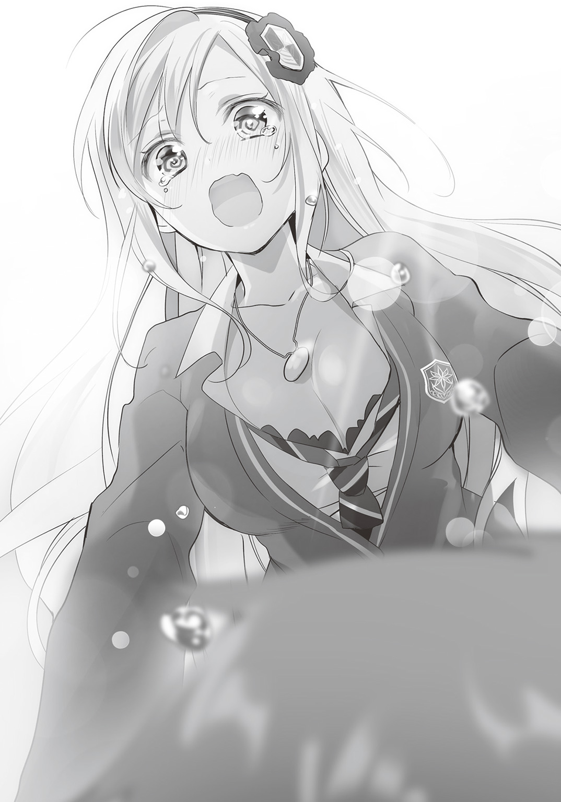
「ひ、ひどいれすっ！ ひ、ひしゃびさに、だでもいないところでしゃしゃいくんに会えだから、わたっ、わだひっ！ ずぴっ」
「鼻水を垂らすなぁ！」
着数に限りのある制服に鼻水をつけられたくはなく、俺は咄嗟にハンカチを取り出して、来々木の鼻にあてがった。
「ぶしゅっ......ちーんっ......！」
「あぁあぁあぁ......遠慮なく鼻かみやがって......」
アニメグッズでありながら、アニメらしいところはロゴだけで目立たない秘蔵のハンカチが台無しである。
いや、そりゃこれは使う用だけどさ。ウチに保管用も二つはあるけどさ。
「す、すびばせんでした。少々取り乱してしまいまして」
「あれを少々と言い張る器のデカさが怖いよ......っていうか退いてよ。近すぎてなんかいろいろ危ういよこの体勢」
「ひゃわああっ！ ちょ、ちょっとまっでくださいね......」
ぐしぐしと顔を擦り、涙をぬぐう来々木。
そのまま、再びてくてくと窓際のほうへ歩いていく。
そして隅の机に腰掛けると、腰を捻るようにして脚を組み、髪をふぁさあっ、となびかせて、クールな顔で視線をこちらへ。
「――みっともないところを、見せたわね」
「本当にな」
「今の私には不要な顔よ......気にしないで」
「手遅れだろ」
「昔の私とは違うのよ......貴方が変わったように、これが今の私の顔」
「頼むから普通に会話してくれ」
「会話していいんですかっ!?」
「うわぁ！ 急に笑顔になるな！ 上に乗るな！」
えぇえ、なんだろこの子。
なんかさっきまでと全然キャラが違うっていうか、なんつーのかな。ワンコだこれ。ダメなワンコ。駄犬系女子。
いったい全体、これはどうしたことだろう。
「なんか......来々木さんキャラ違くない？」
「......まあ、正直言って、普段のキャラは演技でして」
「なぜあんな生産性の欠片もないキャラづくりを......」
「だ、だって、高校デビューにあたって前のキャラのままでは元の木阿弥ですから、一生懸命侮られないようなキャラを考えたんですよ。おかげで佐々井くんだって全然、私のことに気づきませんでしたし......」
「いや、別に俺はもともと君のことなんて知らな――」
あれ。
おい、待てよ。
まさか......そうなのか？
マジで、ホントは〝知っている〟のか？
「わ、私は一目見て分かったから、ちらちら佐々井くんのこと見たりしてたんですけどね......」
「......ま、待って、ちょっと待って」
さぁっ、と血の気が引く音がした。
「ウ、ウソだろ。この学校には俺のことを知っているやつなんて、いるわけが......」
「......私だって最初はそう思っていました。でも、名前と、顔をよく見たらはっきり」
「顔って......俺はお前の顔なんか見覚えないぞ？」
「そ、そんなことないでしょう。美容室で結構近くでお話ししたのに......」
「美容室......」
......。
............。
..................あ。
「............マジで？」
「......そういえばあの日、名乗りそびれちゃっていましたね」
「や、やめろ。俺のちょっとささやかな幸せの思い出を汚すんじゃない」
「美容室の目隠れ美少女改め、来々木瑠句です。よろしく」
「なに図々しい自己紹介してんだテメエ！ あるわけないだろそんなこと！ 外見も言動も全然違うじゃねえか！」
「だから、高校デビューしたんですって」
「高校デビューはトランスフォームじゃねえ！」
「私を担当してくれたカリスマ美容師さんのプロデュースです。ふふり」
「あいつの仕業かクソが！」
「ちょっと驚くビフォーアフターでしょう？」
「もどして！ 早く！」
「もう戻れないですよ、ですわ、わ。すでに私は前までの瑠句とは違いま、ちが、ちがう......のでごじゃるわよ」
「口調からガバガバじゃねえか！」
「と、とにかく。これで貴方と面識あることは分かってもらえたと思います」
「............分かりたくなかったなぁ」
思わず頭を抱えた。
なんかこう、胸の中に大事にしまっておいたキラキラ光る宝ものが毒虫の卵でした、とか言われた気分になった。
「私は入学初日に貴方を見つけて、これぞ運命かと思ったものですよ。なのに、佐々井くんときたら全然気づかないんですもん」
「だって俺が知っているあの子は、もっとこう清楚な黒髪に雪のように白い肌で、風の吹きこむ窓際でシェークスピアとかを読んでいるような子だったし。たまになびいた前髪から覗く瞳と視線が魅力的で、白い頰が、はにかんだように桜色に染まるような......」
「誰ですかそれ」
「この世に神はいないのか......」
「そのレベルで落ち込まれるとさすがに凹むんですけど......」
しばし沈黙。
俺の体力が回復するまで、行動不能を強いられた。
しかしどれだけ落ち込んだところで、受け入れるしかないのだ。
俺があの日、あの美容室にいたことを知っているのはあの子だけ。
もし別人だとしたら、それはそれで危険な事実。
悲しいが、あの黒髪の少女が暗黒進化したということを受け入れて前へ進むしかない。
「......オーケイ分かった、認めよう」
「わ、わかっていただけたみたいで何よりです。でもそんな、知人が死んだみたいな顔までしなくても......」
「俺の知ってるあの子は死んだようなものだ」
「そこまで現状の自分を全否定されると、いっそ清々しいですね......」
「で、なんの共犯者て？」
「あ、ああっ」
瑠句は俺の上から退くと、あわてて机に座りに戻った。
なに、そこ定位置なの？
「――運命の、共犯者よ」
「もうキャラ作んなくていいぞ？」
「振ったのそっちじゃないですか！」
「だって妙な間までつけて言うから......」
「素のテンションで運命の共犯者とか言えないですし......」
「恥ずかしいんじゃねえか！ 分かるように言えよ分かるように！」
「え、えっとぉ......」
もじもじと、左右の人さし指をつつきあわせる瑠句。
だいぶあのネーミングに無理をしていたらしい。
そらそうだわな。
「つ、つまりかいつまんで説明するとですね」
「うむ」
「私と佐々井くんは、それぞれ同じ悩みを抱えています」
「......え、確定？」
「はい。元々ぼっちでありながら、高校デビューでキャラを変えて、演技をして日々を過ごしている、という」
「状況は雲泥の差だけどね」
「しかし......気づいたんです」
瑠句の表情は、少し真剣なものになる。
その顔つきから、発せられる言葉には冗談が混じっていないだろうことは分かった。
「一人で噓をつき続ける生活は、前よりもずっと孤独だと」
「............」
分からない話ではなかった。
むしろそれは、普段から痛いほど感じていることだったからだ。
「でも、佐々井くんなら。佐々井くんだけになら、私は弱い所も見せられる。以前のままの姿もばれたって問題ない。逆もまた、同じだと思います」
「......秘密を共有しようってことか。そんなの、こうしてお互いの素性が知れた時点で、改まって言うことじゃ――」
「いえ、もっと具体的に言うとですね、例えば......」
こほん、とひとつ咳払い。
少し言うのを躊躇ってから、来々木は口を開いた。
「私と、で、で、でで、で、で、で」
「で？」
「......デートとか、出来るワケじゃないですか」
「............来々木さんと？」
「はい、私と」
「デイトレード？」
「デートです」
「ゲータレード？」
「飲み物じゃないです」
「ゼットソード？」
「わざと離れていってませんか？」
「ごめん、あまりにも受けとめるには巨大すぎる問題で......」
「い、いえ、ちゃんとこれは合理的なというか、理由があるんですよっ！ 私と佐々井くんとは、女子と男子です。この二人が協力関係にあることで、リア充を装うにあたっては、アドバンテージを取れるんですよ」
「た、例えば？」
「佐々井くん、一人でカフェに行ったりできますか？」
「......あっ」
ピンと来た。
先ほど、須藤と話した時に感じたコンプレックスが、鮮明に蘇ってきたからだ。
「ファミレスは？ ボウリングは？ 異性の服を売っているお店は？ アクセサリーショップは？ カラオケは？ ダーツは？ 横浜は？」
「えっ、いや横浜はよくわからないけど......言いたいことは分かった」
非リア充が、リア充を装う時に最大の壁となること。
それは、交際経験のなさ。
異性との接触のなさだ。
「......協力すれば、その辺の、真似ごとができると」
「そういうことです」
「非童貞を装えると」
「そこまでは言ってないですけども」
「......い、いや、待て待て待て騙されないぞ。確かに言いたいことは分かるが、すでにクラスから浮いてる君と協力してもだな......」
「ちなみに佐々井くん」
「なんだよ」
「佐々井くんが中学までぼっちだったことを知っているのは私だけです......よく考えてください......」
「おいマジかお前！」
なりふり構わず脅しにきやがった。
まがりなりにもラノベヒロインの真似ごとをした女が取っていい行動じゃないだろそれ。
「そ、その代わり、私の過去を知っているのも佐々井くんだけですから、私としても佐々井くんはあまり野放しにしたくない、というか」
「今さら過去を知られて何のデメリットがあるんだ」
「お、大ありですよぉ......こんなキャラで通っちゃった上で、実は中学までオタクだったなんて知られたらどんな評判になっちゃうか......」
「......致命的だな、確かに」
そのまま反動で虐めの対象になるまであり得る。
そうなると、確かに死活問題だ。
「そ、それに」
「まだあるのか......」
「......わだぢだって、もっどみんなと仲良くじたい」
「............」
「賑やかな輪に入りだい......！ 男の子とだってお話ししたい......みんなみだいに楽しくじたいんです......」
「..................」
「......もう、ひどりぼっちは............」
「あーっ、もう！」
思わず大声を上げる。
せっかくセットしてある髪を、搔き乱してぐしゃぐしゃにしてしまう。
「......わかった。手は貸してやる」
「......ほ、ほんとでしゅか」
「浮くのも、一人ぼっちなのも、辛さは痛いほどわかる。それで泣いてる相手を無視できるほどは上等な身の上じゃない。それに、俺にだってメリットがないわけじゃない......だから、もう泣くのはやめろ」
「あ、あいっ......！」
「ほれ、鼻かめ」
「......びーっ......！」
ハンカチがどろどろになるが、もう仕方ない。
取り返しのつかないことを言った気はする。
けれど、俺だってぼっちが嫌で嫌でたまらなくって、変化を求めた一人だ。その姿はあまりにも、重なり過ぎる。
来々木の悲痛な泣き声は......無視するには、響きすぎるのだ。
「まあ、具体的に何をしてやれるかは分からないけどさ。少なくともこれで、一人ぼっちじゃあないだろ」
「......」
「......なんだよ」
「佐々井くん、ラノベの主人公みたいですね」
「しばくぞお前」
「ほ、褒めたんですけど!?」
「必死にリア充装って生きてる相手には致命傷なんだよなぁ......お前そういうのぽろっと出すなよな。オタバレとか致命傷すぎるから」
「は、はい......気をつけます」
「かといって普段のキャラのままってのも問題だから、まずそれをなんとか......」
「あ、あの佐々井くん」
「なによ」
「さ、さっそくなんですけど、こう、リア充化の第一歩というか」
「だから、なによ」
「望くんって呼んでもいいですか」
「距離近えな！」
「で、でもでも、男子を下の名前で気軽に呼ぶのって、こう、精神的余裕というかリア充感強くないですか......！」
「そりゃそうかもしれないけど」
「の、望くんも呼んでみてくださいよ。わかりますから」
「もう呼んでるし......ええ......？」
「騙されたと思って、さあ」
「............瑠句」
「......ふ、不覚にもぐっときました」
ち、ちくしょう。
悔しいけどなんとも言えない優越感だなこれ。人生で女子を下の名前で呼ぶことなんてなかったからな......。
「ま、まあ......人前じゃなければいいぞ」
「......えへへ、なんかこう、二人だけの関係って感じでどきどきしますね」
「あー、もう......」
胸の奥が、ぎゅっと締めつけられる。
弱みを握られているせいだと思うけど、錯覚したくもなるだろう。
こうなってしまえば割り切るしかないのだろうが......。
「これから疲れそうだなあ、俺」
「が、がんばってくださいね」
「お前が言うことか」
「あだっ」
軽く瑠句の頭にチョップを落とす。痛くない程度。
......まあ気づいてはいる。
お互いに、根本は同類だと分かっているからだろうか。不思議と、他のクラスメイトと話す時の緊張が、瑠句には一切なかった。
その心地良さを認めてしまうと、なんか、取り返しがつかなそうで。
だから、態度には出さない。
「えへへ、これからよろしくおねがいしますね。望くんっ」
「......言っとくけど、頑張るのはそっちのほうだからな」
なんとなく、話がいい感じにまとまったような気分だ。
厄介なことに巻き込まれはしたし、頭は痛い。
けれど不思議と、息苦しくない。
その感覚に、気づいてはいたけれど。
その意味を俺がしっかりと考えるのは、随分と後のこと。
とにかく、そういう流れで。
俺の平穏な高校生活は、派手な音と共に軋み始めたのだった。
二章 『彩李羽音は最初から知っている』
一日の活力を得るために、朝食は大事らしい。
よく聞く話だけれど、最近は特にそれを実感している。
「ん～、いい香りだ」
両親に頼みこんで独り暮らしを始める際に、家具はこだわって揃えてある。
本日、初使用となるこのエスプレッソマシーン。
安かったがなかなかのもんだ。豆を挽いて淹れた本格派のエスプレッソから、芳しい湯気が香って鼻をくすぐる。
この香りを楽しみながら、こだわりをもって作り上げた部屋の内装を眺めた。
「最高だな......」
八畳間の生活空間は広くはない。
しかし黒を基調とした棚やデスク、アクセントを加えるメタルラックと、無彩色の家具がシックに彩る。
本棚にはエッセイやファッション誌。
しかし二重構造の内側には、どうしても手放せない我が心のバイブルであるマンガやライトノベ......小説が計算しつくされた配置で収まっている。
実家から持ち込んできたショーケースと、その中に鎮座するいくつかの高級フィギュアが堅くなりすぎない雰囲気を演出。
クローゼットの中には積みプラモ。
デスク上のＰＣはこだわりのゲーミングマシン。
素人が見れば単なるＰＣだが、そのマシンパワーはコンピュータで楽しむあらゆる趣味嗜好において十分すぎるスペックを発揮する。
まさに、俺だけの理想の城。
......いいじゃん、一人暮らし！
「おっと、冷めちまう前にいただくとするか」
ランチョンマットを敷いた、ガラステーブルの上に用意された朝食に向き直る。
厚切りのトーストに、ベーコンと目玉焼き。
味付けはキリっとブラックペッパー。
これ、男メシの常識。
多少白身がプラスチック的とか、ベーコンが炭化しているのはご愛嬌。
それにドリップしたコーヒーを加えてコンプリート。ハンパじゃないぜ、まるでハードボイルド小説の探偵みたいだ。
「うん、いいじゃんいいじゃん。男のスマートな朝食って感じ」
ああ、一人暮らしっていいもんだなぁ。
納豆に焼き海苔、鯖ってメニューも悪くないけどさ......やっぱこうして英字新聞に目を通しながら口をつける濃いめのエスプレッソがンゴッ！
「んっ、ゴブッ！ ごほっ、げほっ、えぇっほ......オォオオッホ、ンホッ」
えぇ......何これ。
なんなの、エスプレッソってこんな苦いのかよ。熱した泥だろこれ......？
ええい、仕方ないので牛乳を投入だ。
ドボドボドボ......っと。うん、だいぶ飲みやすくなったぞ。
まあカフェ・ラテもオシャレだよな。
「うーん、ベーコンエッグも焦げてて苦......いや、ビターな大人の味だな。黒コショウがぶっちゃけ辛......キリリとキいていて味覚を覚醒させるぜ......」
あ、やっべ。
今、俺スゲー充実した朝迎えてる。
一人暮らし。最高。
まさか一人で暮らすだけのことが、こんなに清々しい経験だとは。
スカっとした気分のまま、スマホをちらちら見ながら、ファッション誌を開き、最近流行の着こなしを予習する。
昨日は結局、須藤たちとの予定はすっぽかしてしまったからなぁ。
埋め合わせのためにも勉強しておかないと。
「なるほどね。今年の夏はデニムで決まりか......まあ登道ローラが言うならそうなんだろ」
カリスマ読者モデル、登道ローラ。
男女問わず、クラスメイトの間でも話題に出ることが多い。当然、話題についていくために俺もチェックしている。
俺たちと同年代、かつプロのモデルでもないのに、その影響力は大したものだ。
ある意味、リア充として目指すところの到達点なのかもしれないが......さすがにこのレベルは行きすぎか。
とりあえずデニムってことは分かった。
あとはまあ、帰ってきたら解読しよう。
「......よっし。チャージ完了だ」
洗顔料で顔を洗う。
ブレザーを翻し、袖を通す。
髪の毛はワックスでビシッとキメる。うーん、クール。どっから見てもリア充だ。
こうして俺は心体ともに万全にエネルギーを込めて、一日をウソつきとして生きるパワーを蓄えるのである。
玄関前の姿見で確認。
鼻毛なし。ニキビなし。笑顔よし。オーケイリア充。
さあ行こう！
扉を開ける。
「おはようございまーすっ！」
閉める。
鍵をかける。
深呼吸。
え、なになになに？ 分かんない。ウチのドアって異次元ポータルだっけ？ 開けて目の前に瑠句がいるわけないんだけど。
夢かな？
起きたつもりでいてリアルなドリームってパターン結構あったぞ。
「......うん、昨日のことが強烈すぎてまだ夢を見ているに違いない。そうだろう。そうに決まってるさ......」
呼吸を整えろー、ひっひっふー、だ。ひっひっふー。
落ちついた。
じゃあ改めて、扉を開け――。
「おはようごっざいまぁああああああああああああああああああああああす......！」
「うわぁああああああああああああああああああ！」
開けた瞬間に両手と足でドアをホールドされた。
「うわぁああ押し売りの手口だこれ！」
「私が見えますか！ 瑠句ですよ！ 夢じゃありませんリアル瑠句ですリア瑠句です！ るっくあっとみー！」
「ひぃっ！ は、入ってくるぅっ！ 両手の力がパワフルすぎる！」
思いのほか強力なパワーで玄関をこじ開けられる。
「ぐぉわっ！」
すぽーん、と滑り抜けて突っ込んできた瑠句に、その勢いのまま胸からタックルされて押し倒される形になった。
十四時間ぶり二度目である。
「いッてえ！ 尾てい骨！ 尾てい骨をやられた！」
「ふふり。驚きましたか望くん。眠気に包まれた朝をしゃっきりと目覚めさせる小粋なサプライズですよ」
「驚いたかじゃねえよ物理的なダメージ喰らってんだこっちは！ っていうか早よう退け！ 重たいんだよ！」
「あ、いえ、もう少しだけ、このまま......」
「え、なにその少女漫画的なトキメキスキンシップ定型文。別にここで出てくるべき台詞じゃないじゃん」
「なんか、その、一日の疲れの沁み込んでいない朝の男子の新鮮な匂いを間近で感じる経験をもう少し......スゥーッ、ハフッ......んふぅ」
「純粋に気色悪いな！ いいから降りろ！」
「きゃあっ！」
無駄に悲鳴だけは可愛らしく上げやがる。
ちくしょう、丁寧にセットした髪の毛がもう銀魂みたいなスタイルになっちまった。
「ど、どうやって来たんだお前。俺がここに住んでることはまだ誰にも教えてないはずだが......」
「ふふり」
「ふふりじゃないが」
ドヤ顔の瑠句は、親指で背後をさした。
そちらを見れば、我がアパートの向かいにある高級マンションが目に入る。夕方になると日の光を遮って忌々しい建物だ。
「私、叔母さんの持ってるあのマンションで独り暮らししてるんですよ。ご厚意で」
「ナチュラルに敗北感を味わわされた......」
「それでよく、望くんが登校していくのも見てましたので。たまにこっそり後ろからついていったりして」
「さらっと軽めの犯罪を告白してんじゃないよ。その気になれば法的措置に出られる案件やぞこれ」
「で、今日はせっかくなので、一緒に登校しようかと」
「この流れでよくその申し出ができるな......」
「えへへ。でもいいですよねっ」
「なんで？」
「えっ」
「だからなんで？」
「......なんでって、えっ？ あのっ、ま、まがりなりにも女子が朝迎えに来るっていうシチュエーションなんですけど......？」
「だから？」
「......ほ、他になんかもっと、リアクションがありませんか？ ヒロインの扱いじゃないでしょうそれ」
「君いつからヒロインになったんだよ図々しい！ っつーかなに？ どうリアクションすればよかったんだよこの奇行に！」
「あ、朝迎えに来て一緒に学校に行ってくれる女子ってグッときませんか？ リア充感高くないですか？」
「いや、ぶっちゃけるとそれはリア充じゃなくて古いラノベとかエロゲのテンプレだろ。二次元内で表現されるイマジネーションリア充だよそれ」
「がん！」
「口で言った......」
なんかなぁ、疲れるなこの子。
「じゃあそういうの抜きで一緒に登校してください」
「頑なかよ！ 俺に対してだけ心折れなさすぎるだろ......」
「そ、相談したいことがあるんですよっ。大きな通学路に出るまででいいですからっ！ 協力してくれるって言ったじゃないですかぁ」
「う......」
言った手前、反論しづらい。
「わ、分かった分かった。じゃあ途中までね」
「ありがとうございますっ」
にぱぁ！
と、晴れ渡るような満面の笑みの瑠句に、一瞬たじろがされる。くそう、なんで見た目のスペックだけカンストしてるんだこいつは。
「では早速行きましょう！ 登校時刻にはまだまだ余裕がありますけれど、朝早いほうが人目も少ないでしょうし」
「いつもそれ狙いで早起きしてるからな......」
さっさと玄関を出ていこうとする瑠句だったが、ドアを閉める前に、俺がついてこないのに気づいたのか、振り向いた。
「あの、学校行かないんですか？」
「あー......ちょっと待て」
軽く頭を触ってみる。
思った通りだ。
俺は洗面所へと足を向けながら、ぶっきらぼうに応答した。
「髪、セットしなおしてくる」
■
深空町は、俺の実家から町二つほど挟んだ海沿いの土地だ。
横浜ほど洒落てはいないが、漁師町と言うほど田舎でもない。
丘と海があって、季節が夏に向かう今時は木々の葉が青々と鮮やかな景色。けれど駅前は十分に買い物を楽しめるくらいには栄えている。
その二つの景色は土地の高低差でなんとなく住み分けされていて、長い坂道によって繫がれている。
深空第二高校は丘の上。
我が家は丘のすぐ下。
俺の住むアパートから高校へ向かうには、住宅地をある程度歩いて、バス通りの広い上り坂へと出ることになる。
その広い道へ出るまでの、やや古臭さの残る住宅街を歩く間。
それが俺が瑠句に与えた、〝相談〟とやらの時間だった。
「にしても、アレですよね」
「どれだよ」
「アニメやドラマなんかでは坂道のある町って妙に魅力的なんですけど......徒歩で通う必要があると、ただただ辛いですよね」
「言うな」
進学先を遠くに決める際に、この町のホームページで見た坂道の写真があんまり綺麗だったのでホイホイつられた俺には耳が痛い。
だって、ねえ。
なんか青春って感じの景色じゃん、見下ろした坂道って。
「それはそうと、相談とやらをするなら早くしてくれよ。大通りに出るまで、歩いて十分くらいだと思うぞ」
「地味にかかりますよね」
「......まあ部屋選びを失敗した気はしてないよ」
「コンクリ打ちっぱなし、かっこいいですもんね」
「いいから早く話せよぉ！」
「あ、はい」
まだるっこしいが、この場合は瑠句の問題というより、女子特有の話のリズムの問題な気もする。
なんていうか、本題に入るまで遠いよね。
「ええっと、ですね......赤紙が届きまして」
「......ああ」
仰々しい言い方ではあるが、なんのことはない。
俺もちょうど昨日届いたので、察しはついた。
「カラオケの誘いか、野々村さんから」
「そ、そうなんですよ......どうしようかと思いまして」
「正直、出たくはないんだろ？」
「で、でもでも、みんなと打ち解けたいのなら、こういう機会こそ逃してはならないんじゃないかなって」
「......ま、確かにそうだよね」
瑠句の素性について知れたのは、渡りに船と言ってもいいタイミングだった。浮いた状況から脱したい瑠句、須藤に見栄を張った俺、それにカラオケ。
状況と運とが、珍しいくらいに嚙み合っている。
「で、野々村さんには返事っていうか、返信したの？」
「は、はい。いつものキャラでしたので、ぶっきらぼうではありましたが」
「なんか余計なこと言ってないよな......？」
「は、はい！ 口調はどうしても固くなってしまいますので、なるべく悪印象を与えぬようにと、歌うのは得意だと言っておきました！」
「なんで自分からハードル上げにいったぁ!? マゾなの!? 縛りプレイヤーなの!?」
連絡事項を伝えられるだけの短いＬＩＮＥ会話で、よくもピンポイントに自分の首を絞めたものである。
「い、いいか、瑠句。カラオケって実際かなり難易度の高い遊びだぞ？ そもそも経験はあるのか......？」
「と、得意ですよ！ よくおうちでＷｉｉカラオケやってましたし」
「一人で？」
「そりゃもちろん」
「客観的に誰に上手って言ってもらったの？」
「お、お姉ちゃんに......？」
「ちなみにどんなの歌うの」
「最近の曲だと〝ワルキューレドライバー〟の主題歌とか歌ってる〝地獄鳳凰谷魔王太郎〟さんのとか好きです」
「アカン」
ちなみに地獄鳳凰谷魔王太郎は曲の最中にポエムとかの語りをブチ込んでくる暗い世界観が売りの元ニコニコ歌い手出身アーティストである。
「もっとさ、こう......〝西野カナ〟とか〝ＡＫＢ〟とか、せめて〝ももいろクローバーＺ〟くらいのレパートリーは......」
「はぁ......恥ずかしながらどれもあまり聞いたことがなくてですね」
「......瑠句」
ずいっ、と身を乗り出して眉を寄せる。
瑠句は目をまんまるくして、ちょっと身を引いた。
「少しの間でも、リア充の文化に接して確信を持ったことがある」
「は、はぁ......なんでしょう」
「カラオケとは、好きな曲を気持ちよく歌ってすっきりするイベント......――ではない」
わざと声にドスを利かせた。
「たった四人ほどのカラオケでも、極めて高度な〝空気を読む〟力が必要になってくる」
「は、はぁ」
「なるべく大多数が知っていそうな曲をチョイスし、しかも序盤はアップテンポな〝アガれる〟ナンバーにしなくてはならない」
「じ、自由には歌えないんですか!?」
「しっとりしたブルースやバラード、もしくは人の知らないような曲は、なるべく後半に回し......しかもそれでいてトリは全員で盛り上がれるような曲にする必要がある」
「そ、そんな難易度の高いことが、必須......!?」
「それだけじゃない......合間合間には当然トークも入るし、席の位置によって話す相手も変わる。その席順が目まぐるしく変化することもあれば、テーブルの広い部屋ならデンモクやフードメニューの受け渡し、取り分けにも気を配らなきゃならないし、電話の近くなんかに陣取ってしまったらずっと注文役だ......同行者どころか店員とのコミュニケーションまで視野に入れなくちゃならなくなるんだぞ......！」
「く、詳しいですねっ......」
「まあ俺もほとんど行ったことないんだけどな」
須藤に一度連れていかれたのと、あとはネットの受け売りである。
しかし須藤含め、たった四人のカラオケですら、俺からしてみればあと三カ月は行きたくないと思わせるほどの重圧を味わったのだ。
これがクラス交流カラオケともなれば、その惨状たるや図り知れない。
「......で、でも、でもでも、今の私は一人じゃありませんっ、望くんがいます！」
「よくそこまで堂々と頼りに来れるなあ......」
「カラオケなんて、まさしく一人じゃ行きづらい場所じゃないですか！ 二人なら練習しに行ってもそれほど恥ずかしくないですよっ」
「......それは否定できないな」
「それにそれに、カラオケの日時はあくまで再来週の日曜日だそうです。それまでの間に、そう、ゲームで言うところのレベリングも出来るはずです」
「仰々しく言ってもカラオケの練習だろ？」
「それだけじゃなくですね......これだけ期間があれば、もっとリア充力を高めてカラオケという本番に臨むことができると思うんですよ」
「そ、そうかぁ？」
「はい。であれば善は急げ......今こそこれの出番です！」
瑠句は何やらカバンに手を突っ込むと、乙女チックなピンクの手帳を取り出した。
「じゃかじゃんっ！」
手帳が開かれる。
そこには〝マル秘！ 私の人生計画第二段階〟の文字が、やたら可愛らしいフォントででかでかと書かれていた。
ツラい。
「なにこれ」
「私も私なりに、高校デビューをしようと思って抜本的なキャラ変えに臨んではみましたが、それがどうやら間違っていることは分かりました」
「うん、そうだね」
あ、っていうかこれアレだ。
小学校の頃に女子がよく持ってたお友達手帳みたいなやつだ。
ということはこいつ、小学生時代に使わなくて白紙のままのこれを流用してメモ帳に......うわ気づくんじゃなかったよ畜生。
「ですが、それは結局、独力でできることに限界があるせいだと思い至ったんです」
「いやそれはどうかと」
「今は望くんという協力者がいます！」
「不本意ながらね」
「そこで、私は協力者を得たことによって実行可能になる、新たなステージの高校デビュー計画を昨晩のウチにまとめてきたんですよ！」
「......お、おう。なんか機会をうかがってた割に纏めたのは昨日なんだ」
「頭にプランはあったんですけどねっ」
「よく纏まったなぁ......」
「褒めてください」
「あ？」
「褒めて」
「......え、えらい。えらい」
「メガふふり！」
何だそれ、ふふりの強化バージョンか。
でもなんか上目づかいで言われたので褒めてしまったしドヤ顔がかわいい。畜生。これだからルックスカンストはずるい。
「では説明しますね。まず第一段階」
ぺらり、とページをめくると、端っこに刻まれた〝おともだちひとりめ〟の文字が俺の心を粉々にする。
「まずその１、一人ぼっちでの登下校をやめることです」
「待って、まさか明日以降もウチに迎えに来る気じゃ......」
「その２」
「おいィ!?」
「ずばり......一人ぼっちでのお弁当をやめることです！」
「言っとくけど一緒に食ったりしないからな!?」
「そんなっ！ じゃあ私に今日も体育館裏のボイラー室でご飯を食べろって言うんですか......？」
「どこで食ってんだよ！ せいぜい便所だろ！」
「食欲が湧かなそうで......」
「ボイラー室なら食欲が湧くのか......お湯だけだろ沸くの」
「それにそれにっ、あの、私お弁当作りにはちょっと自信があってですね。お弁当さえ人に見せることができたら、少し話のきっかけも摑めると思うんですっ......！」
「そのためのクッションに俺を使うなよな......あー、まあでもそんなに料理に自信があるんなら、普通に教室で食うだけで人目に止まるんじゃないか？ 視線を感じたら、そこから会話のとっかかりにできそうだし」
「そ、そう、でしょうか？」
「ちなみに今日は何作ってきたんだよ」
「蒜泥白肉と辣白菜」
「シャンニーバイロウとラーパーツァイ」
「あと三歩粘です」
「サンプチャン」
「本場中国でもなかなかお目にかかれない幻の中華菓子なんですよ。ウケるでしょうか」
「料理漫画の人かお前はッ！」
「ひぇっ！」
「リアクションできないだろ......そのＢＬＥＡＣＨみたいな名前の料理をクラスメイトの前で広げてどうする気だったんだよ」
「じ、実家が中華料理屋さんなので、は、話の種になるかと、昨日二時から仕込んで気合い入れてきたのでしゅが......！」
「重てえよ！ 胃も心も重てえよ！ そのスキル使うべき世界観に生きてるかどうか考えてから腕を振るえよ！」
「ず、ずびばせんっ......」
ええい、スペックは高いのになぜ使い方が分からないんだこの子は。
というかもう泣きかけてる。
心が弱すぎる......！
「そういうんじゃなくてさぁ、こう、普通の弁当も作れるんだろ？ ちょっと彩り鮮やかな感じで目につく弁当広げるだけでいいんだよ」
「目につく度合いで言えば、蒜泥白肉は匂いもあって目立つと思うのですが？」
「なおさらダメだろ......」
「で、でもそんなインパクトのないお弁当で友達できるんだったら、中学時代の私、苦労してませんよ......？」
「等身大の辛さを感じること言うなよ......あのなあ、友達作るのにインパクトなんかいらないんだよ」
「じゃ、じゃあ望くんはいったいどうやって須藤くんや野々村さんみたいなトップクラスの人たちと友達になったんですか？」
「須藤はたまたま隣の席だったし、野々村さんは学級委員が一緒だから、そこからきっかけをつかんで」
「難易度高いですね......恵まれた環境が必要じゃないですか」
「君だって野々村さんが隣だろ。普通に野々村さんと友達になれてれば楽だったはずだぞ？ っていうか野々村さん相手に友達にならないほうが難しいだろ。めっちゃグイグイくるじゃんあの子」
「わ、私だって、できればなりたいんですよ？ 何度もお話ししてみようと思ったんですよ？」
「なんでしてないんだよ。野々村さん、嫌われてると思ってるみたいだぞ」
「お話しできないんですよぉ......！」
「なんでだよ」
「野々村さんは私の席の右隣じゃないですか」
「ああ、話しやすいだろ」
「でも左隣が......」
「..................あー」
なるほど、失念していた。
野々村麻紀の隣席という恵まれた環境。
そのプラスを一気にかき消すほどのマイナス要素が、瑠句の近くには存在しているのだ。
「......彩李さんか」
「......わ、悪い人ではないというか、できれば仲良くしたいんですけど」
「彩李さんと関わったらいよいよ学校生活終わるだろ」
「そ......う、ですよ、ねぇ......」
瑠句でもそのくらいは分かるらしい。
分かるから、苦労しているのだろう。いや、同情すべきことだ。同じ立場だったら、俺もコミュニティの輪に入るのに躓いていたかもしれない。
「なるほど、分かった。まず問題の一歩目はそこだな」
「な、なんだか頼れる頭脳派って感じで頼もしいです望くんっ......」
「頼るな。まあ、今日の教室での様子でも眺めながら、少し考えてみるよ」
「ありがたいお言葉ですっ」
ぐっ、と両の手を握る瑠句の顔には、びっくりするほど不安の晴れた表情が浮かんでいた。
うーん、能天気すぎやしないだろうか......。
「あっ、そろそろ大通り近いから、先に行きますね！」
「......あ、ああ、そうだっけ」
半ば忘れていたのだが、瑠句は律儀に距離をとって歩きだした。
こほん、と咳払いすると表情も変わる。
不思議なものだが、あいつ一人になると途端に歩き方が尊大になる。だからそのキャラづくりは逆効果だってのに。
あ、何か別の女子とぶつかった。
あれ別のクラスの子だな。
「あたっ......ごめーん。大丈夫だった？」
「............問題ないわ」
「そ......そう、あの、ほんとごめんね」
「気にしないで。先を急ぐから」
............。
あそこまで生産性のないキャラにスイッチ出来るのも、ある意味凄いな、あいつ。
■
彩李羽音という少女について、説明しておいた方がいいだろう。
瑠句にとっては天敵である。
同時に、俺にとっても天敵であり、そうでなくともクラスでは満場一致で「会話しづらいやつ」として認識されている女子だ。
そんな彼女を一言で表す、的確な言葉がある。
――オープンオタク。
「っしゃー！ キタキタキタキタついにキター！」
昼休み。
席の移動で慌ただしくなりつつある教室に、突如として響いた大声は生徒たちをぎょっとさせた。
それが彩李さんのものだと知れると、誰もが「いつものことか」と溜息を吐いた。スマホを握りしめながら片腕ガッツポーズで騒ぎ立てる。
その黒髪ぱっつんおかっぱ頭のシルエットを、一目見て分からぬ生徒もいないだろう。
明らかに教室の温度から剝離しているのも気に留めない。
彩李さんは感心するほどよく回る舌で、誰も聞いてないのに独り言をまくしたてる。
あの光景を誰が呼んだか、呪文詠唱という。
「やっべー最終解放マリアたんやっべーバブみの塊なんですけぉ！ いやー断腸の思いで通販予算の二万円突っ込んでガチャガチャした甲斐があったねマリアたんっ！ おふふ、このロリロリボディに立派なミルクタンクってだけでも事件なのに最終解放まで育てると鎧パージしてスク水になるんだもん犯罪でしょこんなの！ まあ正直狙いすぎって意見も分からんちゃないけどボクはこういうワザとらしいお色気サービス全然カモンっていうかロリ巨乳にスク水とかさながら上等な牛肉に極上のソースでしょ美味しくないわけないよねそう思うよねボクはそう思うんだよねそれでキミはそこんとこどう思うのかな瑠句たそ！」
「えっ」
不幸なことに隣席の瑠句は、唐突に話題を振られて固まった。
「......さあ、私はゲームとかよく分からないから」
「いやーゲームっていうか属性の問題？ つまりロリきょぬーって属性に関する話なんだけどボクは俄然有りアリありアリアリゲーターって感じなんだよね。まあ確かにロリに巨乳ってなんだよそれロリの必要なくね？ って意見も分からんではないんだけどそれ必要どうのこうのの問題じゃなくてロリボディにたわわが実ってるそのアンバランスさっていうか未成熟な体に性のシンボルを分かりやすく備えられるっていうキャラデザインに関するお話なわけよ」
「......そう、よく分からないけど」
「つまりラーメンライスみたいなもんなんだよね。要はお腹を膨らませるためには炭水化物に炭水化物をプラスしちゃうのも辞さないみたいな話。つまりエロければロリボディに巨乳を合わせたっていいじゃないっていうその一見無粋な発想こそがむしろ純然たる煩悩に向かってる潔さ的なものを感じてそれがキュンキュン下っぱらに響いてくるでしょ？ でしょでしょ？ あ、っていうか実際見たほうが早いかな、これこういうキャラなんだけど」
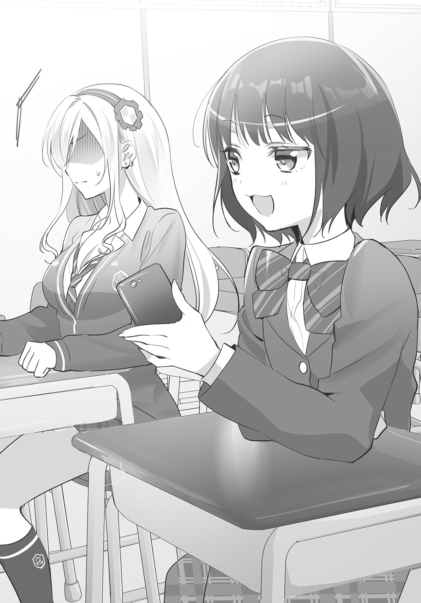
「うん、よく分からないけど......」
............。
思ったより可哀想な環境だった。
うん、あれはなんか、瑠句も席の近くの生徒とコミュニケーションしてる場合じゃないわ。改めてじっくり見ると酷いな。
「っていうかていうか、瑠句たそは確かこのゲームやってたよね？ ファイトオブファンタジーズ」
「......なんのことだか」
やってたのかよ。
「見てよボクのパーティ、これでついに嫁パ完成したんだけど」
「......その火力だと雑魚戦が辛すぎるわ」
やっぱやってんじゃねえかよ。
っつーかピンポイントについてこれる話題振られてんじゃねーか。駄目だアレは。放置しといたらオタバレまっしぐら。
あれがオープンオタの怖いところだ。
オタ趣味をひた隠し「バレたら人生終わるナリ！」という生き方をしている隠れオタの対極に位置する存在であり、オタであることを微塵も隠そうともせず、恥じることなくオタトークを振りまくる空気の破壊者。
そんな相手が隣の席では、瑠句がああいうキャラを作って自衛せざるを得なかったのも分からなくはない......いや、瑠句自身の問題な気もするけど。
しかし......。
「どうするかなぁ」
いつまでも瑠句を観察している場合でもなかった。
なにせ、本日はあの須藤が学校を休んでしまっているのだ。
昨日、結局須藤たちと遊ぶ予定をすっぽかしてしまい、戦々恐々としながらＬＩＮＥで平謝りしたのだが、当の須藤はハンバーガーの食い過ぎで腹を壊していた。
なんでも十五個食べきれば無料キャンペーンだったそうだ。逐一フェイスブックに「須藤パねえ」のコメントと共に画像がアップされていたようだが、終盤の須藤は完全に土気色の顔になっていた。
ともかく、昼休みに須藤がいない。ということは、一緒に昼ごはんを食べようと誘ってくれる相手がいなくなってしまったわけだ。
「......こんなにも心細くなるとは」
いつものグループは集まって弁当なりなんなり食べ始めているのだが、須藤が声をかけてくれないと自主的に輪に入っていけない。
ここに来て、自分のリア充という仮面の付け焼き刃っぷりを痛感するハメになった。
「......いや、むしろこれはこれでいいんじゃないか？」
大勢でワイワイ食事する楽しさは身に沁みた。
けれど、降って湧いたこの機会。
一人でゆっくり静かに飯を食えるなら、それはそれでいいだろう、という気になった。普段はまず望めないチャンスだからだ。
「っし、そうと決まれば......」
まず場所を考えよう。
教室で食べるんじゃあ台無しだし、パンでも買って、人のいない所を探して、スマホでも弄りながらゆっくり飯だ。
頭の中でプランが組み上がると、俺はとっとと瑠句を視界から外して購買へ向かった。
一人暮らしの経済的事情から、弁当を持参することが多かったが......前々から購買は使ってみたかった。
購買。
学校生活の象徴として、なんとも耳に心地いい響きじゃあないか。
特にウチの購買は購入できるもののバリエーションも多い。
パンフを見てこの学校を選んだ理由の大部分に〝雰囲気リア充っぽい環境が整ってる〟というのがある。購買はその一つだ。
何代目かの理事長が大幅な改革を行ったらしく、そのテーマが〝エンジョイモラトリアム〟だとかなんとか。
通学路の坂道はもともとの立地の賜物だが、ゆるい校則といい、購買と食堂の存在といい、柵が完備されて出入りできるようになっている屋上といい、全体的に雰囲気がいいのだ。
大した偏差値でもないが、そんないかにも「学校生活楽しもうぜ！」という設備が充実しているおかげか、地味に人気がある学校なのだ。
思えば、瑠句がここに辿りついたのも必然かもしれない。
「おばちゃん、焼きそばパンとコロッケパン。あと缶コーヒーね」
いざ購買についてみると、パン系のメニューはまだそれなりに残っていた。
放課後に買い食いすることを見越せば二つで十分。
焼きそばパンとコロッケパン、というチョイスは、まあ好みとかより「購買で買うならこれだろ！」というイメージの問題。
なんかやたら購買で買われてるイメージだよね、特に焼きそばパン。
「で、食う場所は......」
朝の会話がパッと浮かんだ。
ボイラー室。
はい論外。
「瑠句とは合流できるかもしれないけど、やっぱ食欲は湧かないよなあ......」
屋上、というのもいいが、風が強いし下手に開放されているせいで一人になれるか分からない。となると――。
「やっぱあそこか」
リア充に溶け込んで生活するにあたり、根回しや保険も十分に用意していた。その一つとして、一人でゆっくりしたくなった時のための避難所的スペースも見つくろってあった。
三階の奥。
音楽室や視聴覚室といった部屋が並ぶ廊下の先に、そこはあった。
「相変わらず施錠はガバガバ、っと」
ある程度は人目を気にしながら歩いてきたが、この時間に、この辺りに人の気配があることはまずない。
――マンガ、アニメ研究会。
一応、扉にはそのように書いてある。
「これまた、マンガ研究会とかいうわりにマンガとかでしか見たことない部活だよなぁ......」
実は、下調べは終わっている。
かつては部として存在したらしいが、肩身の狭さからか次第に部員が少なくなり、同好会扱いとなってからはほぼ活動を停止。
事実上、集まりは消滅したようで、部室として使われていたこの部屋も今となっては主を失い、単なる物置きになっている。
しかし漫研として活動していた時の名残として、本棚にはある程度のマンガやラノベなんかが置いたまま。
......と、なんとまあお誂え向きなスポットだ。
あまり頻繁に来たりはしないが、たまにマンガ喫茶的なスポットとして休ませてもらっている。
一人でパンを齧るなら、ここ以上の場所はあるまい。
邪魔もなく、学校の中で堂々とマンガを読みながら、一人静かに飯が食えるのだ。これは新たな環境で必死にキャラを作って頑張る俺への、神のギフトに違いない。
慈悲深い神様に、無言で感謝。
――しつつ、扉を開けた。
「やっはろー」
あ、彩李さんだぁ。
......。
「部屋間違えました」
「間違えてないから落ちつきなって」
「ヤダ――――ッ！」
ぐいっと襟首を引っ張られ、引きずり込まれた。
ご丁寧に施錠の音まで響く。あれよあれよと、近くの椅子に放り出された。
「............えっ、なんでいるの？」
「ボクは漫研だからさ！」
「アッ、そっかぁー、その手かぁー......！」
いやぁ、そりゃそうだよな。カギとか開いてるんだから、使ってる人がいるに決まってるんだよな。
でもさ、よりによってこんな巡り合わせは想像してないよ。っつーかいつの間に移動してきたんだ！ 俺が購買に行ってる間か......！
いや、それはまあこの際どうでもいい。
今は一刻も早くここから脱出しなければ。
瑠句だけでも大変なのに、この上まだ厄介者と関わりを持つなんて御免だ。
と、俺は考えていたのだが。
「なーんか、たまに人の入った痕跡があると思ったら、佐々井氏だったんだぁ。へー」
「うぐっ」
即、逃げようとした足が止まった。
許可を取らず勝手に立ち入り、我が物顔でくつろいでいた手前、どうも立場としては弱くなる。
そんなもん知らぬ、とシラを切ったり突っぱねるだけの心の強さは俺にはない。
っつか佐々井氏ってなんだよ。
今時、そんな呼び方するステレオタイプなオタクも絶滅危惧種だろ。
「まあいいけどねー。どうせボク以外はロクに使わない部室だしさ」
そう言うと彩李さんは、テーブルを挟んで俺の向かいの席に腰を下ろした。
傍にあったカバンから、どう見てもアニメのキャンペーン品らしき布――〝機甲戦姫ガン・ガール〟の一番くじの四等。地球連合軍エースパイロット安室レオナのキャラクターハンカチ――に包まれた箱を取り出して、テーブルに置く。
その包みを丁寧に広げると、これまたガン・ガール一番くじの賞品である弁当箱が出てきた。
「よいしょっと」
「......あの？」
「ん、どしたの」
「そういう彩李さんがどしたの。何広げてんの」
「お弁当。ボク、持参派だからさ」
「なんで今？」
「お昼ごはん、食べに来たんでしょ？」
「......それは、まあ」
え、なんで一緒に食べる流れになってんの。
不味いでしょ。パンがいくら美味くても不味いでしょ。
と言っても、飯を食べに来たのだろうと言われれば否定しようがない。両手にパンと飲み物抱えて「間違えました」もないだろうから。
なら素直に嫌だと拒否すればいいのだが、瑠句ほどブっとんだ態度でもないと、面と向かって人に拒否を示すのは憚られる。
そんな俺の葛藤も知らぬとばかりに、彩李さんはやけにクオリティの高い弁当に手をつけ始めた。
飾り切りされたサラダだの、タコさんウィンナーだの、ノリでガン・ガール型に飾られたキャラ弁化したご飯だの。
オタらしさは隠せてないというか、隠す気がないものの、瑠句よりよほど女子力の高そうな弁当ではないだろうか。
「あ、気になる？ けっこう自信作なんだよねー。ガン・ガール弁当。作るの大変だったんだからあげないよー。代わりに飴ちゃんあげるから我慢してね」
「......へぇ、ガン・ガールって言うんだそれ」
「あれ、知らない？ たまにここに置いてあるガン・ガールのコミック読まれてたみたいだから、てっきり佐々井氏は知ってるかと」
「暇つぶしにナナメ読みしただけ。覚えてないな」
尻尾は出さない。摑ませない。
さすがに瑠句よりは上手にはぐらかせる。
「ふうん、残念。語れると思ったんだけどなー。この学校、なかなかガン・ガールで語れる人いなくってぇ。せっかく三十五年以上続いてる名作シリーズなのに人生で一回も触れないとかもったいなくない？ なくなくない？」
語れる。めっちゃ語れる。
しかしそういうのを、瑠句以外の前で曝け出すわけにはいかないのだ。
まして彩李さんにこの手の弱みを握られるのは危険すぎる。
ところ構わずオタトーク振られてはたまらない。
だがこの彩李さん、あまり話したことはなかったが......接した感じ、野々村さんや瑠句よりも鋭い相手と感じる。
長居は無用......こうなったらとっとと飯だけ済ませて、ここに留まる理由を消してしまうのがいいだろう。
そう覚悟を決めた俺は、パンの包みを開けることにした。
「あ、購買の焼きそばパン。美味しいんだよね。青ノリがたっぷりでさ」
「まあね」
おかげで食べた後は鏡をしっかり見るのが必要......と返しはしない。出来るだけ無言。
「でも青ノリだらけのせいで見た目が〝ガン・ガールダブルオー〟のデミパスタ星人っぽいよね」
「ンッフ」
なんてこと言いやがるこのアマ。ピンポイントに「知ってないと分からないのに、的確に食欲を失う喩え」を使ってきやがった。思わずムセちまった。
駄目だ、だんまりも危険だ！ こっちから話題を振っていかないと......！
「い、彩李さんはいつもここでご飯食べてるの？」
「んー、そだね。まちまちだけど、一番落ちついてお弁当食べられるし。ここに来ることが多いかな」
「へぇー、教室で食べたりしないんだ？ 寂しくない？」
ちょっと、自分の口から出たことに驚く台詞だった。
ぽろっとこんなことを言えるようになったのか、俺は。
「いや、教室でキャラ弁見せびらかす時もあるよ？ ただあんま反応良くなくってね。ガン・ガール知ってる子、あまりいないみたいだから」
「そりゃそうだろうな。名前だけは聞いたことあるかもしれないけど、見たことあるやつなんか男子だって少ないんじゃない？」
「面白いんだけどなー。だから佐々井氏がここでガン・ガール読んでたのはちょっと嬉しかったんだよ、ボク」
あれ？
なんだろう、この気持ちは。
「たまに勝手に読みに来てもいいからさ。ガン・ガールのこと、お話しできるようになったらボクとしてもありがたいんだけど」
「............どうかな。別に、本読むのが楽しくて来てるわけじゃないし」
「えー、それは残念だなぁ。ボク、わりと一方的に話すだけのことが多いからさ。話し相手は欲しかったんだけどなぁ」
「......だろうね」
「瑠句たそは、ちょっと怪しいと思ってるんだよね。反応がさ、実はけっこう知ってそうな感じで。でも全然会話にノってくれないんだ。ちょっと残念」
「......」
「だから佐々井氏がガン・ガールの話題とか話せるんだったら嬉しいな、と思ってたんだけど......それならそれで、しょうがないかな？」
「......あのさぁ」
つい、声が低くなった。
「一方的に話すことが多いのは、君が人目もはばからずにオタ話するからだろ」
「あー、やっぱマニアックすぎて知らない？」
「っつーか、一般的にヒかれるだろその話題。たとえ話題についていけるとしても、人前で堂々と話したりなんかしないよ。来々木さんだって、そんな話を振られても人目を気にするに決まってる。困るんだよ、ぶっちゃけ」
「そう？」
「そうだよ。だからさ、君も人と話したかったら、もうちょっと無難な話題を選ぶんだな。じゃないと、いつまでも一人飯のまんまだぞ」
「ふうん。じゃ、それはそれでいいかな」
「......なんで？」
「佐々井氏が言うところの無難な話ってのも、ボクには分からないし」
「......そりゃ、例えば昨日のテレビとか、芸能人のこととか、流行のファッションのこととかさぁ。あるだろ、いろいろと」
「ボクそういうの苦手でねー」
「分からなかったら調べるなりして、話題を合わせるのがコミュニケーションってもんじゃないのかよ。じゃないと、いつまでたっても輪に入れないぞ？」
「楽しい？ それ」
「――は？」
「だから、それやってて、楽しい？」
ズキン、と来た。
無遠慮に踏み込んだせいで、逆に、無防備な神経に触られた。
「ボクはヤだなぁ。話が合う相手探しておしゃべりするなら楽しそうだけど、おしゃべりするための努力だったらいいや。面倒だし」
「......そういう態度だから、友達出来ないんじゃねえの？」
「態度って言い方も気になるなぁ」
「他に言いようがないだろ。クラスの空気に合わせる努力もせずに、どうして人が寄ってくるっていうんだ」
「佐々井氏はそうやって友達作ってるの？」
「あ、当たり前だろ。誰だってそうだ。人と足並みも揃えず、空気も読まず話も合わせず、友達づきあいなんか出来るもんかよ」
「そう？ 野々村ちゃんはそうじゃないと思うよ？」
「あ、ああいうのは別格だろ！ ひ、ひ、一握りの、天才みたいなもんだ」
気づくと、ムキになっていた。
考えるよりももっと単純な反応。
むしろ反射のように食ってかかっている自分に、気づいてはいた。
けれど、自分がどんな顔をしているのか見る勇気はなく、こちらを真っ直ぐ見つめる彩李さんの瞳に映るのが怖くて、目は背けたままだった。
「......ふぅん、そういうふうに言うんだ」
見透かしたような声で、彩李さんは言った。
「つまり佐々井氏は、いっつも人の目を気にして歩幅合わせて生きてるわけだ」
「わ......悪いかよ」
「悪いなんて言ってないじゃない。キミが言ったことを繰り返してるだけだよ？」
「......人に、合わ、合わせられるだけ、俺はまだ救われてるほうだ」
「救われてない人もいるってことかな？」
「足並みを合わせたくたって、テンポが分からなくって、息苦しくなってるやつもいる。来々木さんなんかがまさにそうだ」
「へぇ、確かにぎこちない子だな、とは思ったけど......」
「だから、君みたいに空気も読まずにマイペースに絡んでいく子がいると、きっと来々木さんも苦しいんだ。話すのは別にいいけど、もうちょっと相手のことも考えて――」
「キミそんなに瑠句たそと仲良かったっけ？」
「いやっ！ そ、それは......」
「そこ〝はい〟って言えないんだ」
心臓を掌に握られたような気になる。
カッ、と心臓から、首の上に血液が集まっていく。
「なるほど。それが〝クラスの空気に合わせる〟ってことか」
「――――ッ！」
思わず、席を立った。
沸きたつような敗北感で頭をぐちゃぐちゃにしながら、その部屋を出た。パンやコーヒーを片づけるのに回す頭はなかった。
「キミが息苦しくなったらでいいからさ」
背中にかけられる声は、聞こえた。
どことなく甘ったるい声。
「いつでも遊びにおいでよ。カギは開けておくから」
振り返らずに、俺は廊下を駆けていった。
可哀相なものを見る彩李羽音の顔が、瞼の裏に焼き付いていた。
■
「瑠句っ！」
「しぇえええええええっ！ な、なんでしょう!?」
たまげた。本当にボイラー室で飯を食ってやがった。
薄暗く埃っぽい、狭いスペースに、割とキツめの中華の匂いが漂って地獄のようだ。
「もう腹くくった、本気でいくぞ」
「えっ、な、なんの話ですか!?」
「リア充化計画！ カラオケを無難に乗り越えるなんて甘い、むしろここで一気に存在感をアピールするくらいの勢いで挑んでやる！」
「な、なんかすっごくやる気になってます......!? 朝からどういう心境の変化があったんですか!? 嬉しいですけど......」
「プライドの問題なんだよ、プライドの」
あんな言い方されて。
あんな目を向けられて、見過ごせるほど俺は余裕ある人間じゃない。俺の在り方と、今選んだ道を否定されてはたまらない。
ならば、同じものを目指す瑠句で証明してやる。
人に合わせた生き方でも、人の輪から外れるよりはずっと幸せになれるのだと。
「時間は有限だ。次の土日を強化期間と定めてプランを練るぞ！ 皆が中学三年で培ってきたリア充体験を圧縮して行う！」
「なんか当事者の私置いてけぼりで話が進んでいるような......一人で盛り上がって人を巻き込むのはどうかと思いますよ......？」
「お前が言えたこっちゃないだろ！」
始まりは、なし崩しに。動機は、利己的に。
しかし抱いた意気込みは本物だ。
自分でも予想した展開ではないが、こうなったらとことんやってやる。
「リア充を目指したことが間違いだなんて、絶対にない」
今、すがれるそれだけを守るために。
きっと俺は、進んで目を背けていた。
三章 『休日に彼と彼女と彼女は踊る』
土曜の昼下がり。
駅前はにわかに活気づいて、人波の水嵩も多く感じる。
この街の駅前で待ち合わせ、と言えば、北口の「平和を呼ぶワオキツネザル像」の前と決まっている。
案の定、像の周囲は老若男女さまざまで、辺りを見回す人、スマホでしきりに連絡を取る人、腕時計を眺める人など、入り乱れていた。
「......家近いんだから、待ち合わせの必要ないと思うんだけど」
千円のサングラスを少しずらして、俺は思わず独り言を漏らした。
安物のキャップに、普段は着ない下ろしたての春物の服を合わせ、サングラスで顔を隠しつつ、なるべく目立たないように、人混みの中に立っている。
どうしてこんな、芸能人の変装のような真似をしているのかといえば、知り合いの目から逃れるためだ。
なぜなら――。
■
「プランＤです」
「なにそれ」
「短期集中リア充力強化オリエンテーションですよ！ 言わば、疑似的にデートの形態を模して、リア充っぽいことを体験してみるプランです！」
「......なんか代償としていろいろなものを失いそうな気もするんだけど」
「変装は必須でしょうね......日時としてはやはり落ちついてプランを練り、コースを回れる週末、土曜日あたりが狙い目――」
■
とかいう、瑠句の戯言に乗ったせいである。
結果、俺は二連休のうち、土曜を消費して瑠句との「プランＤ」......まあ有り体に言えばデートごっこをしに来たわけだ。
彩李羽音との一件でムキになったとはいえ、いざその時になると自分の正気を疑う行いではある。
駅の時計は、待ち合わせの時刻ちょうどを指している。
もう十分以上ここで一人、瑠句を待っているのだが、未だに姿を現さない。
「......まだかなぁ」
いい加減、人目のあるところで一人で突っ立っているのがキツくなってきた。そもそも、人混み耐性はもともと高くないのだ。
学校の中ですら辛いのに、休日の駅前ともなると空気が淀んで仕方がない。ずっとスマホを覗いていたいが、知り合いがいるかもしれないと思うと気が気でなくて、ついつい周囲の様子を眺めてしまう。
む。あっちの男の人は待ち合わせの相手が来たらしい。彼女か......くそっ、これ見よがしに腕なんか組みやがって。恥ずかしくないのだろうか。
あっちの女の人も待ち合わせの相手が来たようだ。彼女か......くそ、やっぱりこれ見よがしに腕なんか組みやがっ、ん？ あれ、百合？ 百合じゃん！
「お待たせしましたー......」
「どぁあっ！」
完全に意識が別に向いているタイミングで、背後から瑠句の声が聞こえてきて思わず転びかけてしまった。
「お、おまっ、後ろから来るなよ後ろからっ！」
「す、すみませーん......」
「ったく、せめて待ち合わせなら五分前には......って......」
言葉に詰まってしまったのは、驚いたからだ。
瑠句もまた、今日のために簡単な変装をしていた。
金色の髪の毛は括り、頭にはキャスケット。制服の時の派手な格好とは打って変わって、落ちついたワンピースに上着を羽織り、おまけにメガネという装い。
......。
「......あ、えっと、やっぱりまずかったでしょうか。あの、中学生のころに買った服から、着れそうなものを選んできたんですけど」
「い、いや、いいんじゃない？」
いいんじゃない？ っていうかいい。
元々の見た目が派手になってしまったので、落ちついた服装がいい塩梅だ。なんで普段からそれが出来ないんだマジで。
「......そ、そうですか。なら、私も良かったですけど」
「うん......や、ほんと、いいよ。うん」
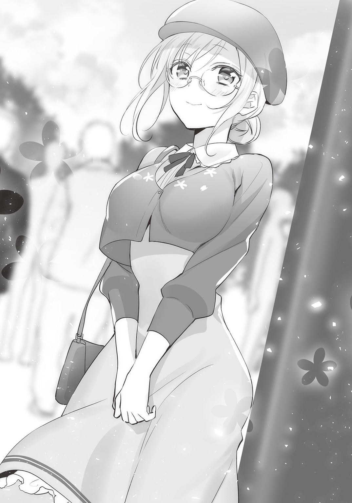
「............で、ですか」
「............」
「......」
「............い、行こっか」
「は、はい」
■
チャレンジ１・流行の恋愛映画。
初手にしてはハードルが高いんじゃないかと思ったが、まず映画館に踏み入った時点でかなり異質な空気を感じた。
薄暗いチケット売り場。
頭上をチカチカと照らすのは、公開予定の映画の宣伝を流すいくつものモニターと、映画配給会社のロゴを映し出すミラーボールのようなオブジェ。
音と光の濁流の中、チケット購入カウンターへ繫がる長蛇の列は、待ち時間だけで容赦なくガードゲージをガリガリと削っていく。
フード売り場も然り。
ポップコーンとコーラを買ってチケットを通し、スクリーンの前の指定席に座った時点で、俺と瑠句はすでに、血の気が引いていた。
「ううっ......駄目だ。ここの空気、想像以上に駄目だ......須藤とかと来てるならともかく、右も左も分からず初めて来るってのがキツすぎた......」
「私は来たことありますよ」
「ちなみに何見たの」
「劇場版のプディキュアです。小学生のころに」
「全然参考にならない」
やっぱり劇場内で配られるライト振って「ぷでぃきゅあー！ がんばぇー！」とかやってたのだろうか。
さすがにこの場では全然活きないだろその経験。
「ところでなんて映画見るんだっけ」
「あ、ちょっと待ってくださいね。パンフ買ってきたので」
「えっ、映画見る前に？」
「いけませんでした？」
「ネタばれとかガンガンしてくるんじゃ......」
「はぁ、でもネタばれとか気にする映画じゃなくないですかね......恋愛映画ですし」
「......まあ誰と誰がくっつくとか、そういう感じのネタばれなら......そもそも別に興味ないしな、この映画」
「えーっと、タイトルは〝セツナさと青空と春風と君の涙と希望とブルースカイと可能性と夢と希望とラブ〟ですね」
「接続詞多くない？ 希望二個あるし」
「愛称は確か〝セあブラ〟です」
「台無しだよ」
「まず主人公のレイカちゃんが転校生のセツナくん（実は幼少期に記憶喪失になった間に双子の弟、ソラと入れ替わっている）と劇的な出会いをするところから始まるそうです」
「今のカッコの中、致命傷だったよね？」
「レイカ、セツナ、それに幼馴染みのダスティンを加えた三角関係が見どころだとか」
「世界感のギャップやべえなダスティン」
「ダスティンは実はレイカの願望が生み出した偶像で、レイカ以外の人には認識できていないそうですし」
「もういいそれ以上喋るな」
どうすんだこれ。
すげー知りたくなかった。その辺のギミックはまっさらな頭で見たかった。
「......ところで、映画が始まったらどうすればいいんでしょう」
「どうすれば、って......映画なんだから普通に見れば？」
「意味なくないです？ リア充体験をするための日ですよ、今日は」
「だからって、映画見てる間にリア充っぽいことができるか？」
「......こ、こう、盛り上がるシーンで手を繫いだり......とか......」
「............」
「......とか」
「いいの？ それ......」
「......」
「............」
なんか微妙な空気のまま、場内が暗くなってしまった。
いくつかの予告と、有名な映画ドロボウのあれが流れて、本編が始まる。
それから画面をぼーっと眺めること、二時間。
■
『目を覚ませレイカ！ ダスティンはもういないんだ！』
『噓よ！ ダスティンはずっといるわ！ 今も私のためにベーコンの脂を切ってくれてる！ 胃に溜まらないように、キッチンペーパーで！』
『このバカ！』
（必要以上にエコーのかかったビンタの音）
『......痛い。痛いよ、セツナ』
『そう、その痛みが現実だ。ダスティンじゃ与えられない、現実の感触だ』
『現実......』
『リアル』
『リアル......』
『現実のキッチンペーパーは、一枚も減ってないんだぜ......』
『......ごめんセツナ！ あーしが間違ってた！』
『いいんだ、レイカ』
（ムーディな音楽）
『俺はもう、お前のことを離さない』
『あーしも離れない』
『朝までブチアゲマックスしよう』
『ブチアゲ』
『マックス』
『セツナ......』
『レイカ......！』
『アイラビュー』
『パーリーピーポー』
（スタッフロールと共に流れるエンディングテーマ）
『ドゥンドゥドゥンアイラービュッフォーエーバー......インザサマー......貴方と二人......トゥゲザー......埼玉......フォエーバー......』
■
「............」
すげえ映画だった。
まさかこれほど綿密な時刻表トリックを見られるとは......恋愛映画、侮れないじゃん。いやマジで。これ興行収入トップ３に入るわけだわ。
「やっべ......これ一人だったら絶対見られなかったしほんと良かったわ......なんつーか、恋をするって凄い奇跡だよな......な、瑠句」
「うーん、そうでしょうか」
「えっ」
「メインの女優の演技が棒っていうのは、緻密な感情の機微を表さなきゃならない場面で致命的ですよね。それに謎を明かすシーンではどう考えてもロジックエラーが三つはありますし、列車の時刻が重要なのに使っているのが架空の路線っていうのはちょっと......」
「......」
「......ときめく映画でしたねっ！ 手とか繫ぎましょうか！」
「次行くぞ」
■
チャレンジ２・お洒落なカフェでティータイム。
俺たち日蔭の住人からすれば、スタバすらもエルサレムのような神々しさを放つスポットであるが、本日はさらにワンステップ上。
映画館近くに店を構える、チェーンじゃない本格派のカフェである。
「え、えっと、呪文の予習はしてきました！」
「スタバじゃないんだからメニュー選ぶのに呪文詠唱は要らないと思うぞ」
「ヤサイマシマシニンニクアブラカラメ......」
「そんな脂っこいカフェはない！」
なんだか知らんが脂のよく出てくるデートだ。
わざわざ木で作られた扉を開けると、カランコロン、とベルが鳴る。
開拓時代のアメリカという感じ。
木の軀体に金属の飾り、それにガラスと陶器の食器類。そんなもので出来た店内を見たところで、「おっしゃれー」以上の感想が出てこない。
「二名様でいらっしゃいますか」と、微妙に不安になる敬語で案内された席は、店の隅の落ちついた一角。
顔を隠すような格好の男女であったからか、妙に気をつかわれたらしい。
「ふぇええ......こ、これがカフェというものですか」
「俺もさすがにこういうカフェには初めて来た......須藤とかと来てもマックかモス、せいぜいドトールだったもん」
正直言って嫌いじゃない雰囲気だ。
独り暮らしを始めてからというもの、コーヒーに凝っている俺としてはあのサイフォンとかいう器具とか、なんか砕かれる豆とかひじょーに気になるわけだ。
「あの、望くん」
「っと、ごめんごめん。メニュー決めないとね」
「コーヒーの値段、おかしくないです？」
「ん？」
瑠句に差し出されたメニューを覗きこむ。
〝ブレンドコーヒー〟６００円。
〝カプチーノ〟７５０円。
「......これ、あの、天龍軒のラーメンにチャーシューが乗るんですけど」
「............カ、カフェのコーシーってのは、こんなもんなんだヨ」
「声震えてますけど大丈夫ですか」
「だ、大丈夫大丈夫。つか、ほら、ここは俺が奢るから気にしなくていいよ」
「えっ？ お、奢りなんですか？」
「こ、こういうところで男女でワリカンとかダサいだろ」
「わ、悪い気がしますけど......デートってわけじゃないんですし」
「いいから、ほら、ケーキとか食べるものも頼んでおかないと間が持たないぞ。せっかくクチコミランキング一位の店に来たんだ、出来る限り堪能していかないと」
「その食べるもの、なんですけど」
「どうしたよ」
「......どれが何なんですか？」
そう言って、今度はフードメニューを差し出されて覗きこむ。
〝朝露に踊る妖精たちの輪舞〟１２００円。
〝アラスカの雄たけび〟９５０円。
〝銀河鉄道の見た夢〟１６００円。
「どれが何なんだろう」
「ぜんぜん分かりませんよね」
「せめて商品の写真とかあれば......」
「ケーキなのかすらも解読できないのですが......」
こういう時の解決法を、野々村さんに聞いた覚えがある。
曰く、店員に聞けばいいそうだ。
「それが出来れば苦労とかしてないんだよなぁ」
「何の話ですか？」
「こっちの話。もー、こうなったら語感で頼もう。嫌いなものが乗ってたらこっちで処理するから」
「......あ、あーんとかして差し出せばいいのでしょうか」
「......さ、差し出し方は任せるけどさ」
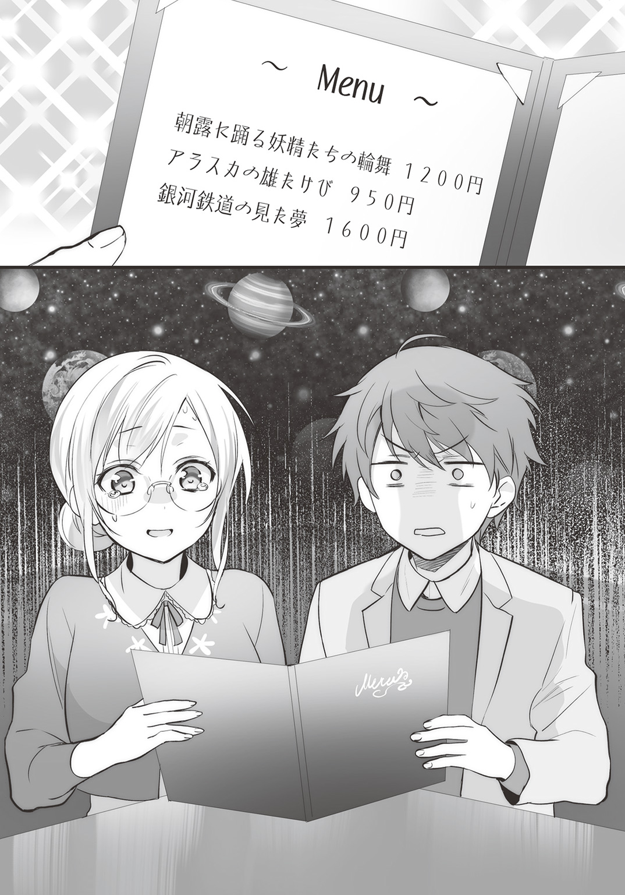
「ご注文、お決まりでしょうか」
待たせる気はないとばかりに店員はやってくる。
焦ってメニューを指さしつつ、それぞれ注文していく。
「えっと、俺はブレンドコーヒーを一つ」
「キャラメルマキアートを」
あ、瑠句がキャラづくりモードになってる。店員相手でも発動するのかそれ。
「ご一緒に軽食、ケーキなどはいかがでしょうか」
「......」
「......」
「て、〝天使は唱えた、世界の理〟をひとつ」
「私は〝雪原はまるで銀のキャンバス〟を」
何が「まるで」だ。
何の感想なんだ。
「かしこまりました、少々お待ちください」
こんな品名を読みあげられても眉ひとつ動かさずに去っていく店員。伝票に「天使１」「銀キャン１」と書かれていたように見える。
「なんか......注文だけでドっと疲れましたね......」
「ショートケーキとかでよかったんだけどな......品名っていうか文章だよな」
「やっぱり呪文詠唱っぽかったですね」
「っていうか、店員に対してもあのテンションになるの？」
「せ、せっかくお洒落なカフェなので、私もクールに決めたいなと」
「あのキャラはクールとは違うと思うけどなあ......ぶっちゃけ少しずつでもいいから、やめたほうがいいと思う」
「......」
「瑠句？」
「そ、そう、ですか......がんばります」
「......？」
なんだろう。すごく悪いことを言った気になった。
瑠句のためを思って言ったことなのに、俺が気に病む必要はないはずなのに、この気持ちの正体がつかめない。
「そ、それより、こういったお洒落なカフェではどういう会話をすればいいんでしょうか？」
「えっ」
「まさかアニメの話とかできないでしょう？」
「そ、そうだな......やっぱお洒落な話じゃないかな」
「と、言いますとファッションの話題とか？」
「うん、この後は服とか見て、それからカラオケっていう予定だし」
「分かりました、ではファッションの話をしましょう！」
「オーケー」
「......えー、男の子といえば、ズボンですよね」
「待って想像以上に大雑把なんだけど」
「そ、そうですか？」
「それもうファッションの種類じゃないじゃん」
「じゃあ何だって言うんですか」
「形状」
「形状!?」
「逆にキミが今穿いてるそれは何だよ」
「こ、これはスカートですけど」
「じゃなくて種類だよ種類！ フレアスカートとかゴデットスカートとかさ」
「ゴ、ゴッドスカートですかね......」
「大きく出たな！」
「そ、そういう望くんは自分のズボンの種類とか言えるんですか!?」
「まずズボンという言い方がダメ」
「そこから!?」
「ボトムス......あるいはパンツと呼ぶべきだ」
「ぱ、ぱぱぱっ、ぱぱっ、パンツ!?」
「パンツに過剰反応するな！」
「の、にょ、のの、のぞ、のぞっ望くんのっ、ぱぱぱパンティ!?」
「断じてパンティではねーよ！ 落ちつけ、下着のことじゃない！ 足を通して穿く形状のボトムスのことを総じてそう呼ぶんだ！」
「そ、そうだったのですか......いつの間にやら衣服の呼び方って変化しているのですね」
「分かってくれたなら何よりだ」
「じゃあ私の穿いている方がパンティ......？」
「否定は出来ないけどぜってー使い方違うからな！」
などなど。
いまいち身にもならないファッショントークに明け暮れつつ、やがて運ばれてきた肉の塊のような巨大リブサンドと山のようなパフェを目の当たりにして、俺は今度から素直にメニューについて店員に聞こうと誓ったのだった。
■
ファイナルチャレンジ・カラオケ。
「ここが今日の本番だ。今までみたいな無様は晒せないぞ」
「あ、やっぱり無様でしたか、今までの......」
「何だと思ってたんだよ」
「いえ、私的にはけっこう楽しかったので、つい」
「......うーん」
楽しくなかったかと言われれば、実は案外そうでもない。
まず気をつかわない相手と一緒に出かけるという経験がなかったし、まして相手は瑠句とはいえ女の子だし。
でも、この外出の趣旨はそこじゃない。
来るべき決戦に向け、魂のリア充強度を高めること。
そして、瑠句をリア充の輪に入れるための下準備。
何も考えずに楽しんでいる場合ではないのだ。
「いいか瑠句。俺もカラオケに来た経験はそうそうないが、知識だけはしっかり詰め込んできたつもりだ」
「は、はい」
「おそらく当日もこのカラオケ店が使われる......デモンストレーションにはうってつけだな」
「はい！」
「なので昼三時からたっぷり六時間。九時まで予約を取ってある」
「六時間っ!?」
「何のためにショッピングを早めに切り上げたと思ってるんだ」
「一時間も見て回ったじゃないですか！」
「女子なら四時間は一人でも回れるようになれよ！」
「あの、私土曜アニメ見たいんですけど！」
「お前今日のデートでアニメまでに帰るつもりだったのかよ！ オタなら録画くらいしとけよ！」
「録画はしてますが......」
「じゃあいいじゃん！」
「そう言う望くんは録画したからってアニメをリアルタイムで見なくても平気なんですか！」
「......」
「ほら！」
「こんなことで勝った気になるなよ！」
「序盤に戦う四天王みたいなセリフ言ってる......」
カウンターで受け付けを済ませると、カゴに入った伝票とデンモクを受け取って個室へ向かう。
なんとなく団体客の目を避けながら、通路の角にある狭い部屋を目指す。
「あの、けっこう他の部屋の歌声が漏れてくるんですね」
「だな......そりゃ、こんな単なる個室で防音が完全なわけないとは思うけどさ」
「これ意識すると恥ずかしくないですか......？」
「言うな。どうせ誰がどこで何歌ってるとか、そんなに気にしない......と、思う」
半ば自分に言い聞かせるようにしながら、指定された部屋に入る。
明かりをつけ、さっそく席に着こうとする瑠句を手で制する。
「ちょい待て」
「ど、どうしたんですか？」
「カラオケというイベントの勝負はこの時点で始まっている」
「席に着く前から!?」
「たいていのことは席に着く前に勝負が始まっているもんだ。受験や就職でより良いポストを取り合う人生という名のゲームのようにね」
「そんな大層なものなんですか!?」
「例えば瑠句......今回俺たちは二人だ。席もある程度自由に選べるし、座ったり立ったりも自由にできる。どの席に座ろうと大して問題はない」
「は、はい」
「しかし、この部屋の定員数......四人で来ていたとしたら、確実に座りたくない席というものが出来てくる」
「............あ」
「そう、インターホンの近くだ」
ビシっ、と指さした先には、小型の受話器が備え付けられている。
カラオケとしてはお馴染みの設備だ。
「あのインターホンが使われる機会と言えば、飲み物や食べ物の注文。及び機器の故障なんかの不測の事態の連絡......必然、近い席の人間がそれを担当することになる......つまり店員との電話越しのコミュニケーションまで必要になる」
「じゅ、重労働じゃないですか」
「そうだ。しかも大抵は入り口付近だから、誰かがトイレに立とうとするたびに避けなきゃならない」
「だ、断頭台みたいな席ですね......つまりそこだけ避ければいいわけですか」
「そうとも限らない」
俺はマイクを教鞭のようにして、カラオケの個室内をぐるりと指した。
「明確に、選ぶべき席には順序がある」
「は、はぁ」
「まず〝インターホン近く〟は論外、だからといって奥の席に座ればいいというわけでもない。なぜだか分かるか？」
「せ、席を立ちづらいから......？」
「その通りだ。気軽にトイレにも行けないというのは、大変なストレスになる。こういう小さな部屋ならまだしも、大人数の部屋で奥の席に陣取ってしまうと、〝あ、ごめんなさい。ちょっと通りますよ〟と頭を下げる人間はかなりの数になる」
「心という器が耐えきれるわけがありませんね......」
「だいたいトイレとかに立つたびに逐一大勢の印象に残って恥ずかしいしな......よって〝最も奥〟も避けるべき席だ」
「ほ、他にもあるんですか？」
「紙ナプキンやティッシュがテーブルにある時は〝それ取って〟と言われるパターンも多いからその近くも避けたい」
「確かに......じゃ、じゃあインターホンと逆側の、入り口に近い所がベスト？」
「なるほど......凡夫だ......」
「えっ」
すっ、とマイクを動かしてカラオケの機器を指す。
カラオケという催しの根幹を成す心臓部。
この場における全ての喜怒哀楽を生み出す電子の頭脳......っ！
パンドラの箱......っ！
「想像力が貧困......瘦せた考え......っ！ 入り口に近いということは......アレが近いということ......っ！ どういうことになるか......」
「どうしたんですか、どういうキャラなんですか」
「仮に〝ごめん、マイクの音量小さいみたい〟とか〝ハウリング酷いよー〟とか言われたら......っ」
「なんかアゴ尖ってませんか望くん」
「そう......機器を弄るなら、最も近い場所......その席の人間が、矢面に立たされるのは当然......っ！ 結局......この席もインターホンの近くと同じ性質を持ち......場合によっては二重苦の状態すらありえる......っ！ 多忙......っ！ 圧倒的多忙......っ！」
「あ、ああ、なるほど......それは絶対に座りたくありませんね」
「だから入り口から二番目、三番目くらいに遠いポジションがベストだと思う」
「うわぁ急に素にならないでくださいよ！」
「それじゃあ次に選曲の話に移るぞ」
とりあえず適当な席に座り、デンモクを弄る。
すると、少し躊躇った後に瑠句が隣に座ってきた。
「......えっ、近くない？」
「で、でもこうしないとデンモク見えませんし......」
「そ、そっか。じゃあ仕方ないな」
微妙に間を空けはするが、それでもやっぱり近い。
少々ドキドキしつつも、俺はなるべく平静を装ってタッチペンを操作する。
「やっぱ履歴はＡＫＢとかザイルで埋まってるな......」
「アニメしか見ない私でも知ってるくらいですしね」
「有名ってのはやっぱ大事だよ。みんな、知ってる曲じゃないと盛り上がれないしな。連帯感っていうのが必要なんだ」
「......あれ、でもところどころアニソン入ってますね」
「あー、だってドラゴンボールとかワンピースはみんな普通に知ってるだろ。この辺はウケ狙いとか、懐かしいってのを共有するのに強いんだよ」
「つまり有名なアニソンならいいんですね！」
「まー簡単に言えばな」
「東京喰......」
「それはダメ」
「何でですか！ 有名でしょう!?」
「みんなで盛り上がれる曲って言ってるだろ！ 一般の感覚考えろよ！ 俺は大好きだけど！」
「うぇー、得意ですのにぃ......」
「まあとりあえず手本を見せてやる。最初は〝21世紀ボーイズ〟の〝オレタチロック〟だ！」
タッチパネルをなぞるように操作。
アーティスト名で検索すると曲を探すのが大変なので、なるべく曲名で選ぶのがベターだ。
「えーっと、あ、これ知ってます。よくテレビに出てる男性アイドルグループ」
「今の時期、俺たちの年代ならこのチョイスが無難だな......この曲はアップテンポだしオリコンでもよく見かけるから知名度もある」
あ、あー、とマイクテスト。
ハウリングなし。
全力で行けるぜ！
『オレタチロック』
歌手：21世紀ボーイズ
作詞：バジリスク伊藤
作曲：コカトリス山下
「オレタチぃ～ロック！ 示すスタイル俺らのスマイル！ 真面目な顔した視線でスナイプ！ つまりしゅーてぃ、しゅー......あ、ごめん」
「えっ、嚙みました？」
「いやちょっとこれ歌うの初めてだから」
「なんで選んじゃったんです!?」
「今日は練習だからだよ！ オレタチぃ～ロック！ 夢へクライム乗ってけトライク！ ワシらの時代だ老後をプロミス！」
「サビはいけるんですね......」
「アイワナシューティンスター......！ っし今の感じかなり似てた」
「歌いまわしがですか？」
「角度」
「角度!? どこをアピールする気なんですか!?」
「いや歌番組とかＰＶで特徴的なんだって......」
「そうなんですか......ってあれ、歌詞表示されてますよ？ 歌わないんですか？」
「えっ、ここ知らない」
「ええっ？」
「いや、フルで聞いたことなくて......あー、輝く僕らーはーいずれー、オレタチになるーからー」
「音程あってるんですかそれ」
「なんか、いやどうだろ......ああっ、もうテンポ違って歌いづらい......」
「終わっちゃいましたけど......」
「ぐぁああああああああ屈辱的っ......！」
結果、後半はほぼグダグダで終わってしまった。
まあ練習だからいいんだけどさ......。
「くっそ、後でもう一回歌おう......これはマスターしとかないと絶対ついていけないからな」
「ひ、必須なんですね」
「ここにリストアップしてきた曲くらいは押さえておかないと」
プレゼンっぽくまとめてきた、最近のオリコンランキング常連の曲を列記したコピー紙を取り出すと、瑠句が目を見開いて驚く。
「多くないですか!?」
「何のために六時間もとったと思ってるんだ。さ、Ｙｏｕ Ｔｕｂｅで曲を確認しながらせめて十曲はレパートリーに加えるぞ。西野カナとかならテレビで聴くだろうし、歌えないことはないだろう」
「えええ、あの辺の曲はちょっと私の生理的に......もっとこうアニソン的な感じの」
「瑠句、今日の趣旨はなんだ」
「それはクラス対抗カラオケのための特訓......」
「そうだ。そのカラオケで、みんなに溶け込むための特訓だ。だからこういう曲を覚えるのは、みんなと仲良くなるためだ」
「......う、そう言われると」
「見返してやりたいと思うだろ？ 自分だってクラスの一員だって、分からせてやりたいと思うだろ？」
「......はい」
「だったら、さ」
インタビュアーのように、マイクを差し出す。
剣をとれ、と言っているような気分だった。
「覚悟を決めろ」
「..................はい」
瑠句の表情も、変わった。
「分かりました、私頑張ります」
「おう、その意気だ！」
「必ずや、イマ時のギャルにチョベリグな感じの十八番を身につけてみせます！」
「いや、その意気はどうだろう」
そのヘンのセリフ使うのせいぜい四十代だと思うんだけど。
「さしあたり、まずはこの曲から！」
「ＡＫＢか！ よし、余裕がありそうなら振り付けも交ぜていけ！」
「ちょっとそれは勘弁してください！」
火のついた瑠句は、ぎこちないながらも流行の選曲にチャレンジしていった。
狭苦しいカラオケボックスの温度が、かすかに上がっていく気もした。
■
気のせいだった。
もう、慣れない感じの曲ばっかですっかり冷めきっていた。
「......何曲かは覚えたと思いますけど、難しいですね」
「うん、なんかわりと一人で歌う感じじゃない曲もあるよね......」
「アイドルだとグループで歌ってたりしますもんね」
「あと謎のラップパートもきつい」
「なんか変なテンションになりますよね。いまいち煮え切らないというか......」
「肌に合わないんだろうなぁ」
「......あの、それならちょっと息抜きしません？」
「息抜き？」
瑠句がおもむろにデンモクを手に取った。
もうすっかり操作には慣れたようで、よどみなく曲名を入力していく。
『機甲戦姫ガン・ガール』
歌手：釈迦ブッダたくや
作詞作曲：ジーザスようこ
「ってアニソンかよ！ しかもガン・ガール初代！」
「カラオケの息抜きは、カラオケでしようと思いまして」
「......確かに」
「よかったら、ご一緒にどうです？」
先ほどとは逆に、差し出されたマイクを見て思わず瞬いてしまう。
「別にデュエット曲じゃないはずだけど......」
「い、いいじゃないですか。別にパート分けとかしなくていいですし」
「ん、そ、それもそうか......」
そもそもデュエット自体したことないので、少し挙動不審になってしまう。心の準備も待たずに、機械からは音楽が流れ始める。
「立ち上がれー！ ガン・ガール！」
「強く、清く、うーつーくーしくー！」
「ビームトリモチがんがんがん！」
「粘着質な正義のみーかたー！」
「......わりと歌えるな！」
「でしょう！」
「がーんがーん！ ガン・ガール！」
「エコロジストな地球のみーかたー！」
「ビーム！」
「びーむ！」
「それなりのー！」
「威力ー！」
「「ががんん・・ががーるるー！」」
「......タイミングずれましたけど！」
「瑠句の方がずれたんじゃない!?」
「そ、そんなことないですよ！ 初代は定期的に一気に見返してるんですから！ ＯＰだって飛ばしませんし」
「俺だって中学の時まではそうだった！」
「むうー、わ、私がガン・ガールでリズムを外すわけないんです。次はガン・ガールゼットの曲で行きますからね！」
「なんだと、それなら俺はガン・ガールツインゼットを......」
「あっ、ずるい！ それは私が歌いたかったのに！」
「先に選んだのそっちじゃん！」
「え、エンディングは譲りませんからね！ 私の十八番なんですから」
「勝手なことを......それじゃあ俺は......！」
■
ぷるるるる、と甲高い音で我に返った。
「ひゃあっ！ な、何ですか？」
「......インターホンだ」
壁に取り付けられたインターホンの受話器を取る。
カウンターからの連絡だった。
「あ、はい、そうですか......はい、はい。延長はなしで」
受話器を置くと、きょとんとした顔の瑠句と目が合った。
「あと五分だってさ」
「......ええっ!? じゃあもう六時間近く歌ってたんですか!?」
「うん、俺もびっくりだ」
「何らかのスタンド攻撃を喰らったとかではなく......？」
「まあガン・ガールシリーズのＯＰ全作品分歌って普通に萌えアニメ系のレパートリーに行っても歌ってたんだから、そのくらい経つわな」
結局、半分以上の時間は好き放題アニソン祭りになってしまったわけだ。
「残り時間、歌えてあと一曲だなぁ......」
「次が最後の曲ですか」
「俺はもう充分歌った。っつーか喉がガラッガラだからもういいかな」
「あ、それじゃあ最後は私がもらっていいですか」
「ん、いいけど」
「ではでは......」
すっかり淀みのなくなったデンモク操作。手際よく、最後の曲が入力された。
「瑠句、あんだけ歌って喉大丈夫なのか？」
「ハニーミルクティで喉温めながらでしたし、家での一人カラオケなら慣れてますから」
「つくづく悲しいなそれ」
呆れながら画面を見ていると、やがて曲名が表示される。
専用のＰＶもついていない。
なんだっけ、この曲......。
「......あ」
前奏に聞き覚えがあった。
しっとりと落ち着いたメロディ。りんりんと響くような、ピアノを意識した主旋律。
やがて、瑠句の声がぴったりとそれに乗った。
静かに。
伸びやかに。
透き通った声が響いていく。
「......」
たった二人の、狭い室内で。
誰より目立つ少女が歌う姿は、誰よりも綺麗に見えた。
俺は再び、そう思ってしまったのである。
■
「その、今日はありがとうでした」
すっかり暗くなって、街の人波には会社帰りのスーツ姿が混じり始めていた。
俺と瑠句はカラオケから出て、駅の近くで別れることになった。
「帰る方向、同じだけどな」
「少し時間をずらさないと、人通りの多いところでは誰かに見られちゃいますもんね」
「......夜だし、送っていく？ って言うのが普通なんだろうけどな」
「もうちょっと都会ならいざ知らず、この街だと変な道とか通らない限りはそうそう危険もないですしね」
本当は、やっぱり少し心配だ。
登校の時もそうだ。そりゃ、俺も瑠句と一緒のところを見られるのは気にするけれど、なんだかんだで瑠句のほうが人目を気にしてくれている。
自分のためではなく、俺のために。
「なあ、瑠句」
「どうしました？」
「最後に歌ってた曲だけど、あれって......」
「あー、あれですか」
瑠句は少し照れくさそうにはにかんで、赤くなった頰を指でかいた。
「ちっちゃい頃から好きなんです。古い曲ですけど」
「......そっか」
「えと、どうかしましたか？」
「いや」
一番、上手だったなあ。
純粋にそう思ったが、口から出そうとすると喉の変な所に引っかかって、言えなかった。自分でも不思議で仕方がない。
それを勝手に疑問に思っているうち、会話が途切れたことに気づいて、慌てて話を終わらせにかかった。
「じゃ、じゃあ、気をつけて」
「はい！ 望くんも。また、月曜日に学校で」
にっこりと笑って、丁寧にお辞儀をする瑠句。
それから少しだけ、その場で姿を見送った。人混みの中に紛れていく瑠句は、それでも染めた金髪がきらきらと目立つ。
なんとなく、瑠句から目を離せずにいた。今日一日のことがゆっくりと頭を回る。
......映画とかカフェとか、まあ、お世辞にもスムーズとは行かなかったし、カラオケだってほとんどアニソン祭りになっちまったけどさ。
あいつ、ああやって自然に笑えれば――。
なんて、ぼんやりと頭に浮かべた頃。
去っていく瑠句の背中が見えなくなって。
――不意に、危機は訪れた。
「だーから言ったべよー、止めどきだったっつーの」
「っ!?」
そうだ。聞き慣れている声は、喧騒に溢れた廊下だろうが、夜の繁華街だろうが、すぐに分かってしまう。
そうでなければ、危うかった。
「須藤!?」
「ん？」
「やべっ......！」
思わず声を上げてしまい、振り向かれる前に、咄嗟に細い路地に逃げ込んだ。
焼きついた視界を思い返す。
須藤に中村、いつものメンツ。五人ほど。場所と顔ぶれからして、おそらくゲーセンにでも行っていたのだろうか。
「どうした須藤ー、可愛い子でもいたかぁ？」
「いや、なんか呼ばれた気がして」
「んだよオメー自意識過剰じゃねーのー？ もしくは寂しすぎて夢でも見始めたとか」
「ったく、そういうオメーは彼女出来たからってチョーシこきすぎだろ」
「中村はいつもそうやって失敗すっからなぁ、ハハハっ」
聞こえてくる会話に聞き耳を立てる。
思った通り、中村たちと一緒だ。
......しかし、マズいことになった。今日の予定を空けるのに、俺は隣町の実家に帰ったことになっている。
一応変装しているとはいえ、こんなの近くで見られたらバレバレだ。
見つけられる前に、さっさと退散したほうが――。
と、判断してようやく気づく。
「......行き止まりかよ」
路地だと思ったその道は、店と店との隙間に過ぎなかった。
この場所にあるのは、それぞれの店の勝手口と溜められたゴミ袋。一瞬、ゴミ袋の中に埋まってやり過ごすことも考えたが、さすがに汚れた格好で帰れやしない。
「ど、どうしよう......どうしよう......」
完全に頭の中はパニックになっていた。
ぐるぐる、ぐるぐる。
形にならない考えがぐにゃぐにゃに散らばって、焦りだけが頭を満たす。
ああ、これだから駄目なんだ。
咄嗟には俺の頭は働かない。気の利いた機転なんか出てこないんだ。
ああ、どうしよう。どうしよう。
足音が近づいてくる。
見られるかな。
見つかるかな。
なんて言おう。
どうしよう、どうしよう、どうしよう――。
「――へい」
抱えた頭の上から声をかけられた。
もうだめか、と背筋が冷えて......遅れて、声の高さに気づいた。
須藤じゃない。
男子、ではない。
「......えっ？」
顔を上げると、そこには顔があった。
一目見て、思った。
いくらなんでも〝可愛すぎる〟。
夜の闇でも分かる、明るい茶色の髪。夜だというのに、サングラス。
まるで雑誌の記事からそのまま出てきたようなファッションは、とても自分では思いつかないような、センスに溢れていて。
不思議な見覚えがあった。
俺はこの人を知っている。
会ったことがないのに知っている。
知らないのに会ったことがある。
矛盾する二つの感覚で、頭が混乱しているうちに――。
「――む、んぐっ」
滑らかな掌が、俺の口を塞いできた。なんだろう、化粧品の類なのか、ほんのりと甘みの混じった、柑橘系の香りがする。
そのまま、ぐいっと壁に押し付けられる。
固くて冷たいビルの壁と、少女の柔らかい体とでサンドイッチになる。
手際よく、細い腕が絡みついてくる。
あれよあれよという間に、顔と顔とが近づいて。
「......うわっ」
ゼロになった視界の向こうで、須藤らしき声が聞こえた。
「やっべー、情熱的だなオイ」
たぶん、中村の声。
「止せって、行くぞ」
それを須藤が制して、ざわめきが続く。
やんややんやと話し声。一緒に、須藤たちの足音が遠ざかっていく。
危機的状況が去った、という自覚はだいぶ遅れた。ただただ、頭がパニックになっているところに唐突なことが重なって、何が何だか分かりゃしない。
何もかもが過ぎ去って、夜の袋小路は静か。
残ったのは、目の前の柔らかな感触。
触れ合った頰に感じる、滑らかさだった。
「......行ったみたいだねー」
「あ、は、はい」
体が離れない。
耳元をくすぐるような声に、上ずった声だけが漏れる。やがて、頰と頰をかるく擦りながら、その顔が離れるにつれて視界に映っていく。
作り物のようだ。
まるで、ファッション雑誌のモデルを見ているようだ。
そんな、あまりにも整った姿――。
「――あっ」
ハッとした。
頭の中でバチバチと火花を立てて、記憶と視界が繫がった。
繫がった、けれど受け入れ難い。そうだとしか思えないのに、そんなわけがないと理性が告げる。
背筋に氷水を注がれたように。
混乱する頭は一人では落ちつけるはずもなく。
けれど否応もなく、目の前の光景そのものが、俺に現実を突き付ける。
「佐々井、望くん......だよね」
その一言が、全てだった。
「登道ローラ。よろしくねっ」
■
「夜の公園って、不思議な感じじゃない？」
あまりに気軽に話すから、それが自分に向けての言葉だと、最初は分からなかった。
静かな住宅地の夜景。
文明の光の隙間のような、夜の公園に俺たちはいた。
「せっかく助けてあげたんだし、ちょっと付き合ってよ」
なんて言葉。
まあ、断れない。断れるはずがない。
起こった出来事の、あまりの現実味のなさに打ちのめされて、気を失わないので精いっぱいだった。
ということで、ホイホイついてきてしまったワケだ。
「......静かなんだな」
ぽっかりと切り離されたような、四角い土地。
音と光、人の目が遠いその景色の中で、使う子供のいない遊具の群れは、どことなく不気味だった。
いや、そもそも今の時代、子供って遊具で遊ぶほうが少ないから、昼間だって人は少ないのかもしれない。
〝今〟に取り残されて、光の当たらない遊具に、親近感を覚えそうで少し嫌になった。
「いよっ、と」
ローラは片足で踏み切って、立ったままブランコに上った。
サングラスをかけたままで器用なものだ。女子がやるにはお転婆に見える仕草も、彼女がやるとサマになっているように見える。
「ほーい、よー、ほっ」
スカート姿もなんのその。勢いよく立ちこぎを始めた。
「......あのー」
「んー、なんだーい？」
「いや、何、ってのはこっちの台詞なんですけどぉ。なんかホイホイ連れてこられちゃって、とりあえずいる、みたいな感じなんですけど俺」
「あー、風。今めっちゃ風感じてる風」
「おーい」
「すごい！ このスピード感凄い！ なんかハイになってきた！ 夜の疾風！ いま夜の疾風と化してる！」
駄目だ。ハイになってしまった。
ああいうのランナーズハイとも言わないだろうしなあ、なんて呼ぶんだろう。ペンデュラムハイとか？
「とりゃっ！」
しゅたっ、とブランコから飛んで、見事な着地を決めるカリスマ読者モデル。
新体操選手のようなポーズで固まったので、とりあえず拍手しておいた。
「お、お見事」
「でしょでしょー、こういうのは思いっきりが大事なんだよね」
いまいち話が進んでいないようだが、満足しているのでいいのだろうか。
いや、これでいいのだ。
そもそもコミュニケーションが続いている、という時点で奇跡みたいなものじゃあないか。
カリスマ読者モデル、登道ローラ。
俺がリア充に溶けこもうと勉強を始めた時に、その存在の大きさは別格と言ってよかった。
学校でだって、まずその名前を知らない同級生はいない。
そんな少女と、夜の公園で相対して、一対一で話をしている。同じ目線に立てるはずもないような、リア充どころの騒ぎじゃない存在。
その事実の大きさを量りかねるくらいに緊張しているが、この機会を絶対に逃してはいけないとだけは、分かっている。
「あ、あの」
「ほいほい、何かな少年」
「同い年くらいだと思うんだけどな......っていうか、その。登道ローラさん、だよね？ 読者モデルとかやってる」
「ぴんぽん正解ー。なかなかの記憶力だね、飴ちゃんいる？」
「は、はぁ」
ローラはポケットからロリポップ・キャンディを取り出すと、青い包み紙のほうを俺にくれた。
それを俺が受け取れば、自分は赤い包みのキャンディを剝いて、はぷ、と口に咥える。
ただそれだけの所作が、妙にスタイリッシュに見えるのは、俺が先入観を持って見ているから......なのだろうか。
「ローラさんは――」
「呼び捨てでいいよ。同年代っしょ」
「やっぱ同年代じゃないか......じゃあその、えと、ローラは、さ」
瑠句の時と比べると、現実感のない響きのせいか、呼び捨てにしてもそれほど胸が高鳴ることはない。
「ローラは、どうして俺を助けてくれたんだ？」
「人助けに理由なんかいらないよ。それはもう、山があるから登るとか、海があるから泳ぐとか、馬がいるから食べるみたいな」
「いや馬刺しはちょっと特殊例じゃねえかな」
「まあ強いて理由をあげるとすれば......」
咥えていたキャンディを、ちゅぽん、と抜くローラ。
タクトのように、それで俺を指した。
薄い月明かりに、濡れたキャンディがうっすら光る。
「佐々井くんのことを見てたから、かな」
「......俺を？」
「君を。目に止まったんだよ。授業中の窓から雲を見るみたいに」
「喩えがいまいちふわっとしてるというか......」
「ネット掲示板のピンク広告をクリックするみたいに」
「するんだ......」
知りとうなかった。
「とにかくそういう感じ。モデルだってカメラばっかり眺めてるわけじゃないんだぜ、ってことさ。端的に言えば」
ひゅん、ひゅん、とリズムを刻むメトロノームのように、キャンディを振りながらローラが距離を詰める。
キャンディは、彼女の感情表現とか、意思の表現なのかもしれない。
「興味があったから」
「俺に？」
「君に。ほら、モデルなんかやってると人に見られることばかりだから、たまに人を見たくなるんだよね。そこで佐々井くんってわけ」
「どうして俺なんか。街なか歩いてたって、目立つわけでもないだろうに」
「厳密に言えば、佐々井くんと瑠句ちゃんかな」
「......瑠句も？」
ここで、ようやく疑問が具体的に浮かんできた。
この人、いったいいつから俺のことを見ていたんだろう。
「ま、おかげでこうしてお話しできて嬉しいなって思うんだよ」
「......君みたいな有名人にそう言ってもらうと、ちょっと恐縮だけど」
「有名人ったってプロのモデルってわけじゃないけどねー。この通り、雑誌に写真を使われる以外は、何の変哲もない、君らと変わりない、混じりッ気なしのＪＫなんだよ。肩の力抜いちゃっていいんだよ？」
「......いや、悪いけど無理だよ。何の変哲もない、って言うにはその......君って、ちょっと眩しい存在すぎるし」
「んー、君もそう言っちゃうのかー。それは寂しいことなんだよね」
「寂しい？」
なんで？
いつも光が当たって、いろんな人に注目されているのに。
「佐々井くんはさー。楽しかった？」
「は？」
「今日、楽しかった？」
「............」
少し考えて、黙る。
聞かれた質問の意味を、咀嚼するように、頭の中で転がす。
「楽しかった、けど」
「それってさ。充実してたってことだよね」
「そう、かも」
「リア充、ってやつだ」
「..................そう、なのか？」
充実。
リアルが充実しているから、リア充。
なら今日の俺は、確かにリア充だったと言えるのだろうか。
「それって凄く羨ましいんだよねぇ。ついつい見つめちゃうくらいに」
「ロ、ローラが羨ましがることはないだろ。読者モデルとして有名になって、ちやほやされてるんだし。友達だってたくさんいるんだろ」
「うーん、モデルの仕事自体は充実してるんだけどさ。ほら」
ローラは、おもむろに外灯の光が当たるあたりまで歩いていく。
彼女を照らすだけで、それはまるでスポットライトのように煌びやかなものに見える。
その中で、ローラはごく自然に、腰に手を当ててポーズをとってみせた。
「おお......」
分かりやすい感嘆の声が漏れる。
こんなに、光に照らされるのが似合う人間が、いていいのだろうか。
「どう？」
「......こ、こうして見ると、やっぱモデルだなって感じ」
「ありがと。ま、カメラの前でポーズとか表情作るのは、慣れてきたからね」
「すごいことだと思うよ、羨ましいよ」
あんなに自然にポーズや表情を作れるなら、俺だってこんなに苦労していないはずだ。
きっと登道ローラには〝見られる才能〟がある。
それは、俺が喉から手が出るほど欲しかったもので、羨むべきものだ。
「でもねぇ」
そんな俺とは裏腹に、ローラは浮かない顔を見せた。
作った表情が消える。
「読者モデルである登道ローラは、カメラの前で作った姿なんだよね」
「うん？」
「いい角度で、格好良く、可愛く見えるように。可愛い表情作って、おしゃれな服をちゃんと選んで、モデルらしく一番映える角度も選ぶわけ」
「......そりゃ、そうだろ？」
「それってリアルじゃあない、じゃない？」
「............」
リアルじゃない。
作っているから。
リアルが充実してるから、リア充。
なら......作った姿が〝充実しているように見えるだけ〟なら？
「........................」
背筋がゾっとした。
綺麗な壁紙を剝がして、裏のカビを見つけた時のような、嫌な感じ。
「今日の佐々井君たち、充実してたと思うよ」
「......」
「登道ローラが、日がな一日、ずーっと見ちゃうくらいには」
「......」
「カメラのフラッシュ浴びて、作った笑顔してるよりさ。光なんか向けられなくっても、自然体で笑いあってれば、勝手に自分が光るものだと登道ローラは思います」
「......あんた、何が言いたいんだよ」
「別に。言いたいことは言ってるつもりだしね」
まあ、と付け加えて。
「強いて言えば、もったいないことしないほうがいい、って言いたいのかなー」
「もったいないこと？」
「佐々井くんたちの楽しそうな笑顔。あれをさ、愛想笑いに変えちゃもったいないじゃない」
「......愛想笑いって」
「みんなから、ちやほやされなくたって良くない？ ああいうふうに、肩の力抜いて笑い合える相手が一人いるって、凄く素敵と思うんだけど」
「......」
そうか。
暗がりの俺は、スポットライトを浴びて、皆から見られるリア充たちを眩しいなって、見ていたけれど......スポットライトの中から、外がどう見えるかは、考えたこともなかった。
二人でこそこそ隠れながら、デートの真似ごとをした。
そんなことが羨ましいって言われるなんて、思ってもみなかった。
「いいじゃん、無理しなくて」
「......それは」
「佐々井くんたちはそのままで、いいじゃん」
ただでさえ、目の前に登道ローラがいる、なんて状況。
夢か現実かも自信がなくなってくるのに、この上、見透かしたようなことばかり言われて、本当に白昼夢でも見ているんじゃないかと思えてくる。
いや、日は落ちたから白昼ではないのかもしれないけど。
「登道ローラは思うわけ。綺麗な石は磨かなくてもいいんだって」
「......綺麗な石、なんて言ってくれるのか」
「メッキ噴いて、つや出しスプレーでピカピカにするより、綺麗だと思うよ？」
「......そんなこと。いつも人から注目されてる、ローラに言ってもらえるなんて......考えたこともなかったよ」
リア充になりたいって思ったきっかけ。
中学の時の文化祭。舞台を照らす照明係をやった時、眩しい光の中にいるクラスメイトを、俺は羨ましいと思った。
けれど、観客の前で、舞台のみんなは笑顔を作っていて。
俺は寂しかったけれど、照らすだけの役割は、気楽ではあった。
......いいのかな。
舞台になんか上がらない方が、楽だ。
楽って、楽しいってことだ。
でも――。
「......それでも、羨ましいよ」
気づけば、ローラに向き直っていた。
「メッキだってなんだって羨ましいよ。カメラとか、スポットライトとか、向けられて、光りたいって思うよ」
「作った笑顔の充実でも？」
「そりゃ、ローラみたいな、見られ慣れてる人からすればさ。スポットライトなんて浴び放題だし、人の目にだって見られ放題だろ。飽きるかもしれないよ。でもさ」
――〝私だって、もっとみんなと仲良くしたい〟
瑠句は確かに、そう言った。
涙声で、そう言った。
「スポットライトに当たったことのない奴は、そんなこと言えないよ」
「......」
はぷ。
棒付きキャンディを咥えこむ姿が、ローラはよく似合う。
「光に当たってみなきゃ、どっちが幸せかなんて比べられない。だから、今のうちは〝このままでいい〟なんて言えない」
「......そう」
そう言って、ローラは静かに笑った。
生まれて初めて見るタイプの笑顔だった。
外灯の光から外に出て、月明かりだけが照らすローラは、俺たち同年代の連中よりもずいぶん大人に見えた。
「なるほど、確かにそうだ。君の言うことに一理があるね」
キャンディを口から離して、ローラは言った。
指さすように、キャンディの先をこちらに向けて。
「じゃあ応援してあげるよ。キミたち、近々〝晴れ舞台〟があるんでしょ？」
「なんでそんなことまで知って――」
突然だった。
登道ローラの、明るい色の髪の毛が――〝とれた〟。
「は？」
............。
......え？
なに？ どういうこと？
「あの、ロー、ラ............さん......？」
「こほん」
咳払いと共に、サングラスも外れる。
登道ローラではない、あまりにも〝見知った姿〟になった少女は......〝登道ローラらしく〟あざとく横ピースを作ってみせた。
「どーも、彩李羽音たんです」
「......は？」
は？
はぁあ？
はぁあああああああああああああああああああああああああああっ!?
「驚いた？」
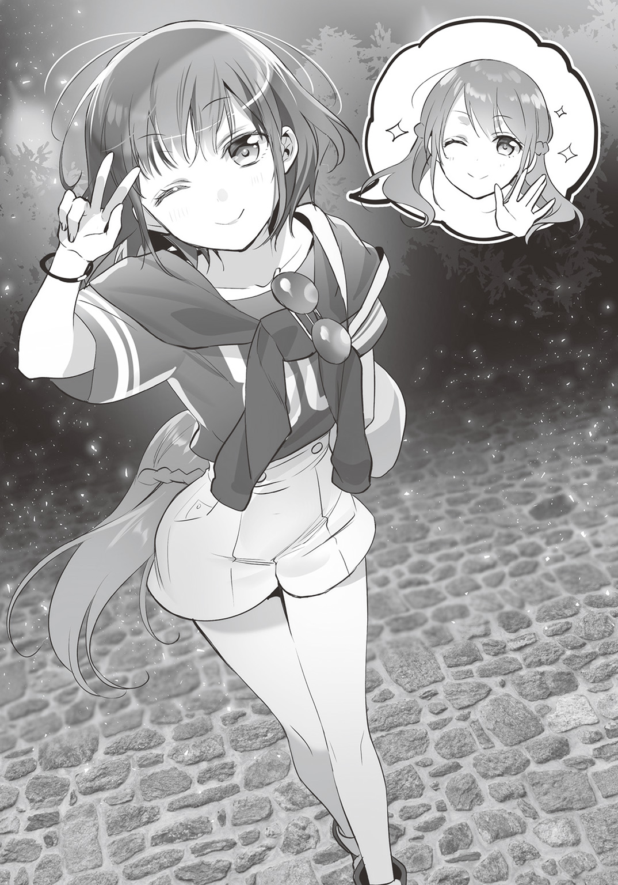
「驚くなんてもんで済むかぁッ！ なんで彩李が羽音で登道がローラなんだよ！」
「いや、それ問題ないから」
「どっ......ごへっ......」
「器用な咳き込みかただなぁ」
ヤバい。腰が抜けるところだった。
高校デビューしてから信じられないようなことはいくつも経験したが、ここまでのショックは初めてだ。
「ま、ま、待て。おかしい。クラスきっての腫れ物の彩李羽音が、カリスマ読者モデルの登道ローラなんて......ま、漫画じゃあるまいし......」
「彩李羽音の名前を分解しまーす」
彩李はウィッグとサングラスを元に戻しながら、スマホをさらさらとフリックする。
ＩＲＯＤＯＲＩ ＨＡＯＴＯ。
「Ｉを抜いて並べ変えまーす」
ＴＯＯＤＯ ＲＯＨＲＡ。
「ボクじゃない、登道ローラの完成です」
「無理やりじゃねえか！ アナグラムになってねえぞ！」
「ある時はカリスマ読者モデル、ある時は謎の支援者......しかしその実態は、大声でアニメとソシャゲの話題をまくしたてるオープンオタク......」
「イヤすぎるッ！ 噓だと言ってくれッ！」
「でも、登道ローラちゃんであるボクがカラオケのこと知ってたり、佐々井氏と瑠句たそのことを見てたのは納得いくでしょ？」
「うっ、ぐぅうう」
あかん、立ち直れそうにない。
瑠句の正体を知った時よりもショッキングだ。
「ま、ボクとしては高校に入る前に佐々井氏たちのことは知ってたんだけどねー。君らが高校デビューすることも、隠れオタクであることも」
「ど、どうして」
「だって君ら、ボクがウィッグ作ってもらってる行きつけの美容室に来るんだもん」
「......あ」
そういやそうだ。
行きつけの店なんだから、偶然居合わせたっておかしくない。
「で、でもあの日、登道ローラがいたらさすがに俺だって気づくはずだ！」
「ほい」
彩李、ウィッグとサングラスを外す。
「無理だこれ!!」
「我ながらなかなか見事なオンオフの切り替えだと思わない？」
「っつーか詐欺だ！ そんなの分かるわけねーじゃん！」
「ふふふん、敵を欺くにはまず敵からだよ佐々井氏ぃ」
得意げにサングラスをくるくるされる。
悔しい。殺意が湧きそうだ。
「ま、正直さ。あの日の君たちの会話を聞いて、クラスで偶然再会してから、ボクはずーっと心配してたわけだ」
「なんでだよ」
「だってさ。ボク自身、登道ローラって作ったキャラと、この素の顔のギャップに息苦しさを感じてたんだもん。そりゃ、同じことをしようとしてる子たちがいたら気になるよ」
「......う」
「ましてさ、せっかく学校でガン・ガールの話ができそうな同級生なのに、学校ではそれ隠してるんだもん。もったいなくって」
そういうことか。
俺や瑠句が高校デビューしたことを、最初から知っていたなら、妙な鋭さも納得がいく。結局、こいつはずっと見ていたわけだ。
彩李羽音は。
登道ローラは、ずっと俺たちを眺めていた。
「......ちょっと待て、彩李。じゃあお前、瑠句がキャラ作ってたことも知ってたんだよな」
「うん、正直アレはどうかと思ってた」
「だ、だったら一言、言ってやれば良かったのに......瑠句の場合、まだ元のキャラのほうが話がこじれずに済んだし、お前だって話しやすかったはずだろ」
「いやー、無理でしょ」
しれっと。
当然のように、彩李は言った。
「な、なんでだよ！」
「あのさぁ、佐々井氏」
「なんだよ」
「君、美容室で瑠句たそと、ガン・ガールの話で仲良くなったんだよね？」
「ああ、見てたんだろ？」
「もうバレてるから聞くけど、君、ガン・ガールだとどのキャラが好き？」
「......まあ、強いて言うならブルドック隊のマドカ」
「口数少ない、クールな一匹狼」
「............」
「似てるじゃん？」
「........................」
えっ。
じゃあ、何か。
まさか、えっ。いや、そんな馬鹿な。そんな理由で？
「君も高校進学で、ガラッとキャラ変えて、印象良くしようと思ったんだろ？」
「......うん」
「仲良くなった男の子の理想像をなぞるなんて、いじらしいじゃない」
「............」
「〝似合わないからやめろ〟なんて言えないよ」
「........................」
そりゃあさ......現実味のないキャラ付けだな、とは思った。
今どき鮮やかな金髪。
アメスクみたいな大胆な着こなし。
ああ、似てる。
似てるけどさ。
じゃあ、じゃあさ。
「俺............なんか最低っぽいじゃん」
「ま、そう落ち込むなって。瑠句たそがそうやって佐々井氏のために頑張ってるように、佐々井氏も今、瑠句たその力になってあげてるんだろ？」
「そう......かな」
「なんだい、まる一日デート特訓しても自信がないのかい？ ボクに啖呵切り返したくせに、そんなんじゃ先が思いやられるなー」
「い、いや、今はちょっと驚いてうろたえてるから考えがまとまらなくて......」
「そんなんで本番は大丈夫？ 緊張しちゃったら、特訓の成果なんて頭から吹っ飛んじゃうんじゃない？」
「............それは......」
「......もう、ボクは佐々井氏の言い分に納得したんだからさ。しゃっきりしてくれよ」
そう言うと、ローラ、改め彩李は、キャンディを咥えなおしてこちらへ歩いてきた。
つかつかと、すぐそばまで来られると、こちらがなんだか萎縮してしまう。
「......な、なんだよ」
答える前に、咥えていたキャンディを口から離す彩李。
そのまま、目と鼻の先まで、距離をつめられて。
「餞別をあげよう」
ぴと。
唇に甘い味が広がる。
イチゴだろうか。
..............................ん？
「おすそわけ」
彩李がキャンディを咥えなおす。
......ん？
俺まだキャンディの包み開けてないけど？ ん？ ん？？？
「んふふ」
鼻にかかったような、甘ったるい笑い声を上げて彩李が離れる。
甘い残り香に包まれて、月明かりに照らされて、どんどん目の前から現実味が消えていくような気がした。
「緊張しなくなるおまじない。アガったら思い出しなよ」
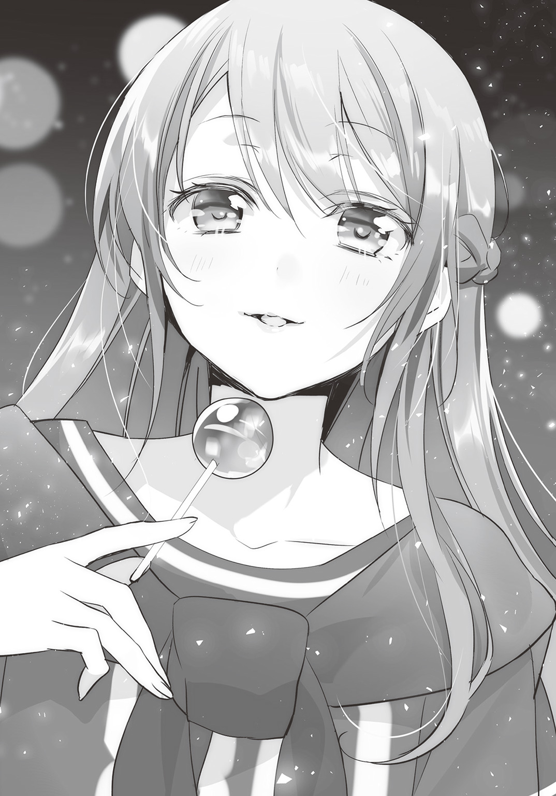
微動だに出来ないまま、響く声を聴く。
彩李はそのまま、自然と、夜の闇の中へと歩いていった。
「............」
唇に、甘い味が残る。
イチゴキャンディの味。
「............え？」
自分の口を手で押さえる。
もらったキャンディは手の中に。
握り締めた手に、変な汗が滲み始めている。
公園の時計は、規則正しく針を進めている。
登道ローラと出会ってから。
彩李羽音と遭遇してから、たった三十分も経っていない。
......いや、そもそも、俺は本当にローラと会ったのだろうか。
あいつが本当に、彩李羽音だったのだろうか......。
現実感のない、体験。
たった三十分にも満たない、夢。
「......え、えっと......え？ 今のは......」
イチゴの味だけが、残っている。
それだけが、記憶を確かにする。
これって、いわゆる......。
「うぇえええええええええええええええええっ!?」
一気に熱くなった頭から、緊張が吹き飛んだ。
パンクした頭のまま、その日は一睡もできなかった。
四章 『野々村麻紀は結局どの形でも満足する』
デートごっこの日から一週間。
......あの、夢のような日から一週間。
日曜の正午。
決戦の日がやってきた。
「なんとか、一週間で立ち直れてよかった......」
あれからの一週間は、ひどいものだった。
もう何をしても上の空。授業すら聞き逃すくらいだ。なんとか前日に瑠句と打ち合わせが行えてホッとした。
駅前のカラオケ店。
その場所に、なんとか正気を保ったまま、俺は立っていた。
「うーいっす」
「......ういーっす」
須藤との気安い挨拶。
なのだが、こう、緊張してしまうのは、その場にいるのが須藤だけではなく、クラスの半分以上だからだろう。
休日だから当然、私服姿。
それは分かっていたのだが......ナメていた。
――――みんなメチャメチャ、お洒落じゃねえか！
「ん、どったの佐々井」
「い、や、なんでも、ない」
くそっ、そりゃそうだよな！
俺が満を持して服を新調してくるくらいだもん。クラスメイトと今まで以上に仲良くなれる機会、そりゃ気合い入れてくるに決まってるよな！
しかし、ヤバいな。
普段クラスでキラキラしたオーラを放つリア充諸氏が、どいつもこいつも数倍のリア充オーラを放ってこの場に来ている。
この威圧感、明らかにこのイベントが、俺のような〝装うだけの者〟にとって試練であることを物語っていた。
「あーし、佐々井くんと遊ぶの初めてかもー」
「あ、私も私もー。なんか割りかしミステリーな存在だよねー。背景見えないっていうかー」
「ねー！ だから楽しみー、よろしくねー」
「......あ、うん」
女子連中も普段よりフレンドリーな気がする。
教室ではあくまで仲良しでコミュニティを作るし、自然、女子は女子で固まることも多かったが、今回は交流という目的がある。
あえてバリアを解いている感じで、教室とは少し違う雰囲気を纏っていた。
なるほど......須藤の言っていたことが、少し理解できた気がする。確かに距離感を縮めるならば、今日というイベントをおいて他にないだろう。
「もう割と人数集まった感じじゃね？ 野々村、あと何人来んの？」
「ふふー、今のところほぼ全員揃ってるね。あと一人、かな」
となれば、もう俺にはバレバレだ。
待ち人は瑠句しかいない。
「あと一人か。誰だろ、飯田とか？」
「飯田くんは来ないってさ。部活休めないっぽい」
「飯田って何部だっけ」
「アマチュア農業部」
なにそれ。
「飯田君、有望らしくて大会までにサンダーボルトとかいうのを使えるようになりたいんだって」
「へー、やっぱアツいな農業部。ぜってー入りたくねー！」
俺だって入りたくないわ！
大会ってなんだよ！ 俺も農業にそんな詳しくないけどサンダーボルトとかいう用語ぜってーないだろ！ ググってみよう！
あるわ！ 怖いな農業！
「ほんとはもっと誘ったんだけど、さすがに全員は集まらなかったなぁ。羽音ちゃんとかも来てほしかったんだけど」
「彩李かぁ......」
須藤の、微妙な反応が目立った。
「でもさ、それじゃ最後に来るあと一人ってだれよ？」
「期待していいよ、意外なスペシャルゲストだから！」
ハードル上げるのほんとやめてあげてほしい。多分悪気とかないんだろうなあ......基本的に善意が一〇〇パーセントだからこの子。
瑠句め、こうなるからなるべく遅くならない方がいいって言っといたのに......。
まあ、一応、無策で臨ませたつもりはないが。
「あ、来た来た！ うぇーい！」
目線を遠くして、野々村さんが堂々と手を上げる。
つられて、その場に集まった大勢の目が野々村さんの見る先を追う。
そこには――。
「......おまたせ」
「............」
「......」
「..................」
ざわっ、という空気が波紋のように広がる。
五月も半ば。教室の空気も固まりつつあるこの１年Ｂ組にとって、彼女の名前は素直に口に出せるものではない。
少なくとも俺はそう思っていた。
しかし............どうやら〝してやった〟と言えるみたいだ。
「えっ......来々木さん、だよね？」
「なんか今日......雰囲気違うよね」
「うん、なんていうか......」
「「「......かわいい」」」
っし、決まった！ 反応は上々！
まあ、当然だ。
俺たちの生活の大半は、学生服で過ごす校舎の中。だから私服になって集まるだけで、誰もがいつもと違う雰囲気を纏っている。
だが......それは、瑠句とて例外ではない！
デートごっこの時に着てきた〝昔使ってた落ち着いた服〟を、今日もあえて着てこさせたのだ。
登道ローラのコーディネートを参考に、ややアクセサリーや着こなしにアレンジを追加。元がいいのだから、破壊力は抜群だ。
「瑠句ちゃん、うぇーっす！」
「......こんにちは」
瑠句なりの、精一杯柔らかい態度が見てとれる。
そもそもあのキャラやめればいいのに。
「悪かったわね、待たせたみたいで」
「いいのいいのー、まだ時間前だし！ にしても瑠句ちゃん、私服かわいくなーい？ なんか普段とギャップあってスゲーいいよね、アタシ好きだなーこういうの」
「......そ。ありがと」
照れとる。
瑠句は照れると頰の内側を舌でもごもごする。
「というわけでー、今日は瑠句ちゃんも参加してくれるってわけ。レアキャラ登場って感じでー、みんな盛り上がってこー！」
野々村さんの、強引ではあるが明るい進行によって、なんとなく動きは作られる。
みんな、そうだ。
人を動かすのはその場の空気。空気を作り出すのは野々村さん。
だから、野々村さんが「瑠句を交えて楽しむ」と決めて動いているなら、今となっては最高の味方だ。
「にしても野々村さん、よくこんな大部屋押さえられたね」
「そりゃ企画者ですもの。部屋が分かれちゃうのもつまんないしさ」
企画者ですもの、で通せるもんだろうか。こんな大規模なパーティルームのあるカラオケ、多くないだろうし確保も大変だ。
こういう〝やりたいことをやる〟手際にかけては、野々村さんは一種の超能力者に近いもんがあると思う。
ぞろぞろと、まとめるのも難しそうな二十人近いメンバーが、驚くほどスムーズに大部屋に入っていく。
ここで瑠句と分かれたら一発アウトだが、抜かりはない。
「じゃ、言った通り、佐々井くんは瑠句ちゃんと近い席でお願いねっ」
「うん、分かってる分かってる。野々村さんの頼みだしね」
と、この通り根回し済みだからだ。
そもそも野々村さんが俺に「瑠句をクラスに打ち解けさせたい」と頼んでいたのだから、席順に口出しするのは簡単だった。
「......瑠句、席選びは分かってるな」
「はい、特訓の成果......出していけると思います」
小声で意思を疎通する。
廊下の時点で、集団の中での位置調整は万端だ。
「さ、座って座って！」
〝席取りを制す者はパーティを制す〟ということ。事前に教えた通り、瑠句は危なげなく、奥でもなければインターホン近くでもない無難な位置を......。
「あ、ちょいタイム」
「ん、どしたの中村くん」
中村が声を上げ、野々村さんがよく通る声で返事する。
「あのぉ、オレ、奥の方来ちまったけどぉ、割と腹とか弱い方なんでぇ」
なっ......。
「やっぱ入り口の方行きてえんだけど」
なッ!?
こ、こいつ......正気か？
すでに「席決まったネ！」なんてムードが固まりつつあるところに、体調という断りづれえ理由で席替えを要求してきやがった......！
並みの図々しさで出来ることじゃあない。このレベルで自己主張を行う想定は、俺のプロットには存在しなかったぞ！
「あ、そんならアタシも前の方がいいなー」
「オレはエアコン当たるとこヤなんだよねぇー」
「私も途中電話来るかもしれなくて、席立つと思うから......」
......なんてこった。
中村の投じた一石で、次々と席を移動していくではないか。ブラジルで蝶が羽ばたくと、テキサスで竜巻が起こると言うが......。
おろおろする瑠句から離れぬようにするのが精いっぱいな中......あれよあれよと言ううちに、意見を言うのが苦手な俺たちは空いた席へと追いやられていく。
「しゃ、しゃしゃいくん......い、一番奥まで来ちゃいましたよっ......お誕生日席じゃないですかここっ......！」
「こ、声が大きい」
「確かに今日は誕生日でしゅけど！」
「そうだったの!? お、おめでとうございます」
今言われてもマジ困るランキング堂々の一位だわ。
「ど、どうしましょう、どうしましょう......」
「ま、まあ野々村さんが陣取ってくれたから、インターホン前という最悪のポジションだけは回避した......！ まだ最悪のケースじゃあない！」
「お、佐々井。今度は席近えな」
逆隣からした声に振り返る。
「す、須藤......！」
「佐々井とカラオケ来んの、何気めずらしーからなぁ。っし、今日はオレの美声思いっきり聞かせてやっからなぁ」
「お、おう......」
結果、須藤と瑠句に挟まれた状態となる。
俺からしてみれば意図せずして、ものすごいホーム感ではあるが、おかげで瑠句との相談はし辛くなった......くそう。想定外ばかりだ。実戦は違う。
「よーっし、飲みホついてるからぱぱっと頼んじゃおっかー！」
「俺ジンジャーエール！」
「あたしイチゴミルクー」
滞りなく始まった飲み物の注文に、口を挟むタイミングが見つからない。が、瑠句とはここでも意思疎通が取れている。
「瑠句、これ以上の想定外はペースを乱すぞ」
「も、もう乱れてますけど」
「とにかく......飲み物はカルピスかハニーレモンティーだ。分かってるな」
「は、はい。喉のケアを第一に考えたメニューですね」
喉のケアは、カラオケにおいて最重要課題。なぜなら、歌ってる最中に声が裏返ったりしたら、自害以外の選択肢が考えられないからだ。
炭酸などは特にゲップの危険性を増大させるし、ここは万一の憂いすらも絶って万全を期すべき時だった。
――が。
「あ。佐々井、佐々井。これめっちゃ美味いんだよ。飲んでみようぜ」
「へ」
男、須藤。ここに来てまさかの対抗呪文である。
「......ば、〝爆裂パインソーダ〟......？」
「おう。炭酸のキツさがパインの甘ったるさといい感じにバランス取ってんだよ」
「......じゃ、それで」
全然断れなかった。だって「俺の勧めたグラスが飲めねえのか！」ってなるじゃん......。
「どうせだし来々木さんも飲んでみれば？」
「えひっ」
男、須藤。ここに来てまさかの瑠句への気遣いを見せる。
瑠句ももう声裏返っちゃってるし。
「......そ、そうね。じゃあそれで」
「うっし、決まりぃ～。野々村ぁ、爆裂パインソーダ三人な」
「はーい！」
あれだけバラバラ注文されて混乱しないのかと心配になるが、野々村さんはまるで聖徳太子のように手際よく注文をメモっていく。
いい感じにミスしてミルクティー二つくらい頼んでくれないかな。いや駄目だな。あの子ゴルゴ13よりミスしないもんな。
「なー佐々井ぃ、パインソーダめっちゃ美味いから期待してろよな」
「そうだな須藤」
「お、今のダジャレ？」
「違う」
「爆裂パインって響きがなんかおっぱいだよな」
「どうした須藤。瞬間的に思春期か」
「ソーダという響きも操舵って感じでいやらしいわよね......」
「無理して話題に乗んな瑠句」
操舵でいやらしいに直結すんのは想像力豊かすぎるだろ。
もうぐちゃぐちゃだよ。
■
「じゃあ飲み物も行き渡ったようだし、さっそく始めちゃいましょー！」
ウェーイ！
としか形容できない感じの歓声が上がる。
あの「ウェイ」コールはどっから浸透したんだろうか。米国で「ブー！」が浸透したようなもんだろうか。
「ま、トップバッターはやりづらいだろうしアタシから行くね！ で、最初は時計回りにぐるーっと順番に歌ってっちゃおうか」
よし。時計回りなら、この位置ならちょうど中間くらいの順番で歌えるはずだ。タイミングも予想できるから覚悟もしやすい。
野々村さんの淀みのないデンモク操作。さながら使い慣れたスマホの如き、指になじんだ動きである。さすがは野々村さんだ。
「あっ、しゃ、しゃしゃいくん」
「どうした、なるべく小声で話せよ」
「あ、あの、野々村さん〝フライングチェック〟って曲入れてますけど」
「......あー」
フライングチェック。瑠句にはレパートリーの一つとして覚えさせてきた曲だ。
ノリもいいし知名度もある。カラオケで一発目に入れるにはうってつけだろう。
「なぁに、心配するな。これは想定内だ」
「でもでも、レパートリーが減っちゃいましたよ......」
「覚えてきた曲はひとつじゃあないだろ。大丈夫、どうせこの人数だ......そう何回も歌う順番が回ってくることはないさ」
レパートリーとは、カラオケにおける残機数だ。
どうせ規則正しく歌う順番が回ってくるでもなし、この人数でローテーションすれば、歌えてもせいぜい二曲。
少なくとも五曲ほど準備をしてきている瑠句と俺なら、問題はない。
「でも野々村さんの歌って聞くの初めてだなぁ。校歌なんかじゃあんまわかんないし」
「んだよ佐々井、聞いたことなかったのか」
「須藤はあんのかよ」
ちょっと嫉妬。
「おう。野々村の歌はなぁ............すげぇぞ」
「上手いとか下手とかじゃなく？」
「すげぇ」
「すげーですか」
どういうことだろう。
疑問に思っても仕方がない。まもなく曲のイントロが流れ始め、モニターに曲名が表示される。
どうやらＰＶが表示されるバージョンらしい。
何名かが「これ知ってるー」とか「ダンス可愛いよねー」とかわちゃわちゃ言い始め、なるほど、こうやって空気を暖めるのか、と感心する。
「じゃ、先発務めさせていただきまーす！ 野々村真紀で、ふらいんぐちぇーっく！」
しかも野々村さん、席を立ち始めた。
ダンスつきとかレベルたけえな......。
「ふぁーいんちぇーっく！ ぼーくーはーきみのここぉりょーにー」
「......」
「すぱいうぇあー、いーまーすーぐーしのばせよぉっかー」
「......」
「ふらーいんちぇーっくー すーきーだーからー！ らーぶーげーいむー」
「なあ、須藤」
「なんだよ」
「なんか......なんか、なぁ」
「いや、まあ分かるわ。下手だもんな」
「調子っぱずれだし舌回ってないよね」
「いいだろ」
「すげえいい」
「話しの流れおかしくないかしら」
いや、瑠句には分かるまい！
あの満面の笑みの美人から繰り出される、幼稚園児のカラオケみたいなべっちょべちょの歌声がどれほど野郎の心を打つのか......！
下手だけど不快なほどの音痴じゃないし、物怖じもしていない。
女子連中はとりあえず有名な曲で盛り上がっているが、男子は明らかに授業参観日のパパみたいなツラになっている。
普段オタク趣味など興味も示さず「萌え～ｗ」とかネタとして使っている連中に「萌えという感情はこういうものです」と教えてやりたいくらいだ。
「ふらいんぐちぇーっく！ ふらいんぐだーからー！ しっかくーだよー！」
「小指立てちゃってるね」
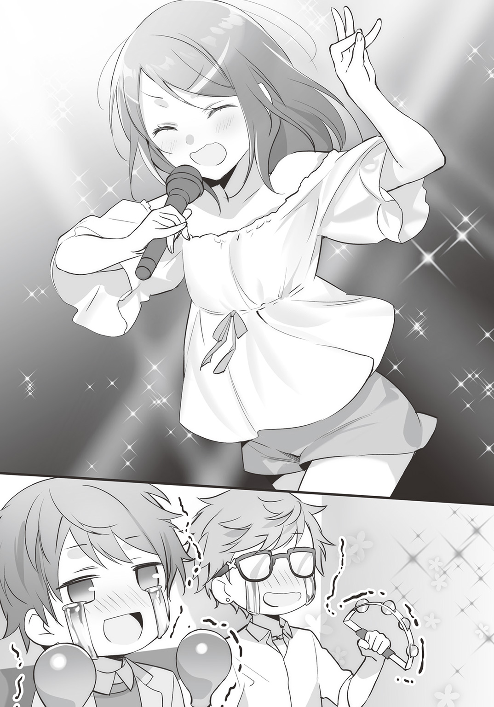
「かわいいね」
「かわいい」
「目も閉じちゃってるね」
「かわいい」
「かわいい」
俺と須藤はもうＩＱ一桁まで下がって「かわいい」しか言えない一族の末裔みたいな感じになっていた。
盛り上がっていくテンションの中、いつの間にやら中村がタンバリンを叩き始めた。リズムがクソなので余計に野々村さんの歌がヤバい。
どうしよう。歌のレベルが低いのでこっちの語彙まで拙くなってきた。クソタンバリンに甘ったるい声が重なり、脳味噌を耳から溶かしてくる。
あーなんかもう気持ちいい。あーっ。あーっ......。
「いぇーい！ せんきゅー！ ご静聴ありがとございましたぁー！」
「「「ウェーーーーイ！」」」
あ、終わった。
一曲、三分。あっという間のステージだった。たった一曲歌っただけで場を暖める。この手腕、さすがは野々村さんといったところだろう。
「じゃ、次はオレ行っちゃう～？」
なんで疑問形なんだ中村、はやく行け。
と、席を立つ中村に注目が集まる隙を見つけ、瑠句が素早く耳打ちしてくる。
「あの、佐々井くん。中村くんの入れた曲」
「ああ、俺のレパートリーの一つ〝オレタチロック〟だな......まあこれも想定内だ」
レパートリーがまた減ったのは事実だがな。
マジで俺にとって余計なことしかしないなあいつ。
■
そろそろカラオケに入って、三〇分は経とうとしているだろうか。
俺と瑠句は、明らかに顔色が変わってきていた。
「......何の冗談だ」
先に瑠句との特訓で用意してきた、数曲の〝流行曲〟のレパートリー。
それが現時点で、ほとんど他の連中に歌われてしまったのだ。
「〝クラゲナイ〟も〝タカシ以外詐欺師じゃないの〟も〝Ｅ・Ｉ・Ｓ・Ｅ・Ｉ〟も......ピンポイントで急所攻撃するみてーに撃ち抜いてきやがる......」
「わ、私、もうあと〝ヘビーハイテンション〟しか持ち歌ないですよぉ」
「俺だって流行のレパートリーは残り〝小さな愛の歌〟くらいしかない......それ以外はアニソンばっかだ」
想定外が起こることも、想定のうち。
が......それを超えるレベルの不運が、重なってしまっている。
瑠句を不安がらせぬよう、俺くらいは落ち着いていようと思ったが、次々とレパートリーが減るたびに動悸が乱れ、汗が滲む。
渇いた喉を、爆裂パインソーダは潤してはくれない。
「......あっ」
そうこう言っているうちに、一人の女子が〝ヘビーハイテンション〟を入れてしまった。
瑠句の残機が、切れた瞬間だった。
......ゲームエンドか。
「ヘビーハイテンションいぇーい！」
青い顔の俺たちとは対照的に、チャカポコチャカポコと鳴らされる明るいタンバリンの音が絶望的に響く。
ちなみに、中村が手放した後は延々と野々村さんがタンバリンを鳴らしていた。歌は普通に下手なのにタンバリン捌きはやたらと上手い。
やけに小刻みなリズムでタンバリンを鳴らしながら、席を自然と移動した野々村さんが瑠句の隣について話し始めた。
須藤、俺、瑠句、野々村さん、という並び。
俺はこの並びをインペリアルクロスと名付ける。意味はない。
「うぇーい！ 瑠句ちゃん、ブチアガってるー？ 飲み物追加しよっか？」
「......いえ。必要ないわ」
瑠句はというと、爆裂パインソーダの入ったグラスをやたらスタイリッシュに持っている。ウィスキーのロックグラスを転がす劇画の美女みたいな手つきだ。
「せっかくの機会なんだからさー、じゃんじゃんアゲていいんだよー！ ほら、瑠句ちゃんもこれっ！」
「えっ」
野々村さん、ここに来て瑠句にタンバリンを渡しおった。
よかれと思って息の根を止めに来た。
固まりながら、俺に視線を移す瑠句。すまん、さすがにそれはどうしようもない......！
「......どうしろというの、これ」
「タンバリンなんだから叩いたらいいんだよー」
「叩いたことないのだけれど」
「大丈夫大丈夫。難しい楽器じゃないんだしさ、曲に合わせてなんとなくシャカシャカぱんぱんしとけばいいってー」
「......」
瑠句、タンバリンをテーブルに置く。
野々村さん、不思議そうにする。
「瑠句ちゃん？」
「......スリッ、トゥ、ワンッ」
「瑠句ちゃーん」
「フッ、チキチキチキチキドンドンタッドンドンタッタカタカタン」
「えっ、ちょ、瑠句ちゃん。なんか凄いダンサンブルなリズムだけど。それタンバリンのリズムじゃなくない。ドラムセット叩く時のやつじゃない」
「タカドゥンドゥンタタン、スタタンタンポポン」
「瑠句......く、来々木さんストップストップ！ ヤバいから！ そのリズムで明るいＪＰＯＰ歌えないから！ ほら歌止まっちゃってんじゃん！」
慌てて俺が制止に入ると、瑠句はやっと16ビートのリズムを刻むのをやめてくれた。
「......悪いわね。こういうことしかできないから」
なんでそういうのばかりできるんだ。
「やーやーやー、でもすっごいよー。瑠句ちゃん楽器かなんかやってたの？」
「......ゲーセンで〝リズムマニア〟を少しね」
それ楽器じゃねえだろ！
「へー、リズムマニアって何、ゲームなの？」
「......うん」
しかも通じてねーじゃねーか！ もっとメジャーな音ゲー言えや！
っていうかやっぱヤバい。野々村さんは協力的だが、致命的に瑠句との相性が悪すぎる......瑠句と野々村さんを、これ以上会話させるべきじゃあない。
かと言って、瑠句との間柄を隠しながら、野々村さんとの会話に割って入る......というのは、それはそれで難易度の高い話。
ここは針の筵を潜り抜けるような、繊細な会話運びが要求される......！
「よし、じゃあ次オレな」
っ!?
馬鹿なっ......もう須藤の番だと!? おかしい、いくら何でもローテーションが速すぎるじゃあないか！
そもそも今入れた曲だって、歌い始めてから一分も経ってな......。
「やー、アタシやっぱこの歌ダメだわー。歌ってみたかったけど、サビ以外よくわかんなかったんだもーん」
「あー、あるあるだよねー。サビはめっちゃ有名なんだけどねーあの歌」
クソがぁあああああああああああああああああああっ！
あの女子たち、カラオケに来て最大の禁じ手の一つ、〝うろ覚えの曲を入力する〟をやってやがった......！
しかも歌えなかったから演奏中止しただと......！ 畜生、そんなんで瑠句の数少ないレパートリーを無駄死にさせやがったのか！
全部歌えなかったのだから、瑠句が改めて歌えばいいって話でもない。
人の歌えなかった曲を改めて上手に歌ってみせるのは感じが悪いし、何より「えー、またヘビーハイテンション入れんのー？」みたいな空気に耐えられるはずもない......。
そして、須藤と俺、瑠句が三人並んでいるということは、順番的には俺の次に瑠句が歌う番であって、瑠句の歌う番も早まったってことで......。
「ちなみに須藤くん何歌うのー？」
「よく聞いてくれたな野々村。〝小さな愛の歌〟っつーんだけどぉ」
「ぐぉおおおおおおおおおおおおおおおおおおおおおおおおっ！」
「おぉ、どうした佐々井。そんなブチアゲするほど好きだったのかこれ」
「ま、まあな......」
あかん、終わった。
瑠句に続いて俺のレパートリーまで潰えた。
もうダメだ。おしまいだ。ヒソカと敵対した黒服のキャラくらいお死枚だ。
「ひーろっいっ！ 世界のっ！ 数ある人のっ！ 数ある愛のっ！ 全てを、君にさーさーげーたぁーい！」
しかも須藤、よりによってマジで上手い。
イケボの上にリズム、音程ともに完璧。マイクの握り方もなんかこう、高レベルな忍術を使う時の印の形みたいになっている。
「そうっ！ 俺に感謝！ 君に感謝っ！ 恋の冒険するまさに勇者っ！ だけど変わらぬ友情があるさ！ 悪さをこなしたあの頃の俺ら！」
ラップパートも嚙まない。その鮮やかさに、女子の視線すら釘づけにする。
......この後に、俺に、歌えってのか。
レパートリーの尽きた、俺に。
「......分かってた、分かってたさ」
須藤は別世界の人間。俺と違う正真正銘のリア充だ。
こいつは特別な努力なんて必要ない。このカラオケに覚悟なんて持たず、あるがままに、思いのままに楽しんで参加できるやつなんだ。
目の前がチカチカしてきた。
頭が、中学のころに戻っていく。
照明係になって、舞台の上を羨ましそうに見ていた、あのころに。
「うぇえ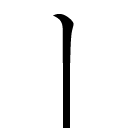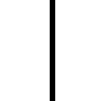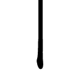い！」
シャウト。
それに拍手。
吹き飛ぶように、須藤の歌の三分間が終わる。
同時に――俺にはもう、焦る時間すら残されていないことを悟った。
「じゃ、次。佐々井だよな」
ずいっ、と。
差し出されるデンモク。曲の予約は、俺の番で途切れていた。
間を作ってはいけない。
何か。
何か、返事を、しないと。今は、歌えない。瑠句のためにも、理由をつけて、何かでっちあげないと。
そうだ。トイレ。
瑠句の気分が悪いとか、そういうことにして。それがいい。そうしよう。
「............あっ......」
声が出ない。
言い訳をしようとした喉が攣って、舌が浮く。
冷水を注がれるように、さーっ、と頭の中が下の方から真っ白になっていく。
デンモクを操作するのに動かそうとした指が、痙攣するように震えた。
「っ......」
どうしたのだろう、とざわつき始めるギャラリー。
原色の照明に照らされた室内と、こちらに向けられる多数の視線が、ぐにゃりと歪んでいく。
駄目だ。駄目だ。動けない。歌えない。
逃げないと。この場所から、なんとか逃げ出してしまわないと。
せわしなく動かす眼球が、瑠句を捉えた。
「......瑠、句、......」
鏡を見ているみたいだった。
不安げな顔。血の気の引いた肌。
嚙みしめるように唇を結ぶ、瑠句の姿。
知っている。今まさに体験している、身体中が言うことを聞かなくなる感覚。俺が歌えなければ、次にこれを渦中で味わうのは瑠句だ。
今の瑠句にとって、すがれるものが俺しかないのは充分に分かっている。分かってはいるんだ。
皆と仲良くしたいと。
輪の中に入りたいと言った瑠句を、見捨てるわけにはいかない。
なんとかしないと。
なんとかしないと。
なんとかしないと！
「――佐々井くんっ！」
響いたのは、瑠句の声。
差し出されたのは、マイク。インタビュアーのように、マイクの先を俺の口に向けて。
その姿が、大きなキャンディを差し出されるように見えた。
■
――〝緊張しなくなるおまじない。アガったら思い出しなよ〟
■
唇に、イチゴの味が甦った。
「............」
噓みたいに、汗が引く。
あの夜の――心臓が吹き飛びそうなあの夜の鼓動に比べれば、カラオケの緊張なんて比べるべくもない。
そう思った瞬間、震えは止まっていた。
「......来々木さんがあそこでマイク差し出すんだぁ」
「自分の番来ないから早く歌えよ、ってことじゃない？」
遠くから、くすくす、と冗談めかした笑い声が響く。
違う。そんなんじゃない。
処刑台に立たされているに等しい瑠句が、急かすわけがない。
カラオケの特訓の時、瑠句にマイクを向けた俺はなんと言ったか。
――覚悟を決めろ、と。
この場に来て、俺よりも覚悟が据わっているのは――。
「ちょ......ちょっと待ってくれ。曲を選ぶから」
デンモクを受け取り、曲名を入力し始める。
油を差された歯車のように、頭はスムーズに回る。俺自身は、もう自分の番を切り抜ける考えが浮かんでいる。
問題は、瑠句だ。
歌える曲の尽きた瑠句に、どうやってアシストしながら順番を回すか。曲を検索する間、思考に時間を使える。
焦らず、探す。
レパートリーの切れた瑠句でも、歌える曲。
それどころか、きっと瑠句の声を最も魅力的に聴かせてくれる曲。
どうにかして、そこに繫ぐ。
俺自身がこの空気を切り抜けながら、瑠句にバトンを渡す。そのためには。
瑠句に、光を当てるためには。
「......照明係は、得意だからな」
「えっ、佐々井くん何か言っ――」
野々村さんが言い終わる前に、曲を入力する。
「中村ぁ―！ 明かり、落としてくれるー!?」
「お、おう」
入り口付近に移動した中村が、照明を絞る。
暗くなって、モニターの光だけが照らす、無駄にムーディな空気が出来上がる。いったい何を歌う気だ、と視線が集まるのを感じた。
カラオケで照明を落とすといえば、バラードやラブソングなんかでよくやる手段だ。だがもちろん、俺はそんなのを歌う気はさらさらない。
須藤で上がり切ったハードルを、飛び越えることは絶対にできない。
ならば、そのハードルを〝蹴り倒して〟平らな地面にすればいい。
俺の選んだ曲。
それは。
「佐々井望、歌います。〝サザエモンの歌〟」
「..................」
「............」
「......」
「ぷっ――」
爆笑。
その場に、爆笑の渦が吹き荒れた。
間抜けなほど牧歌的な、間延びしたイントロに合わせて、国民的人気アニメであるサザエモンの映像が流れ始める。
コミカルなアニメ映像の中で、珍妙なフォルムのキャラクターが飛び跳ねる。
それを、無数の笑い声が彩った。
特に、野々村さんがツボったらしい。
「あっははははははははは！ さ、佐々井くん、なぁんでこのタイミングで〝サザエモン〟なんかっ......あはははは！」
大笑いする野々村さんがかわいい。
頰に血が巡る。
喉がほぐれて、腹に力が入る。
歌える。
「さっざえっもぉ～ん、さっざえっもぉ～ん」
「っははははははははは！ ひっ、く、苦しっ......あははははははは！」
「ぺったらぺったんどこどこどん、つるっぱげぇー」
「ちょ、佐々井やっべーわ！ それはヤベーわ！」
「っつか無駄に似てるっ......！」
「やめて！ その変顔やめて！ あはははははははは！」
歌えば歌うほど、笑いが起きる。
誰も歌声なんて真面目に聴いちゃいない。でも、盛り上がる。
盛り上がれば上手さなんて関係ない。それは野々村さんが教えてくれた。
そう。
つまるところ、俺の選んだ手段がこれ。
即ち、〝ウケ狙いのアニソン〟である。
「ぼんぼこぽんぽんすっぽんぽん、さっざえっもぉーんー」
「あはははははははははははははは！」
「そこ歌詞ちげーだろ！」
「すっぽんぽんじゃねーよ！ くっそ腹いてぇー！」
「笑い殺す気か佐々井ぃー！」
須藤より上手に歌えないなら、歌わなければいい。流行りの曲が選べないなら、選ばなければいい。
どうせ笑われるなら......笑われに行けばいい！
狙い通りに笑われることが、こんなに気持ちいいなんて知らなかった。
スベる可能性はもちろんあったが......歌わずにシラケるよりも、上手くいく可能性もあった。
上手くいけば、瑠句に繫ぐのがずっとスムーズになる。
ダミ声で、大げさに。
サザエモンの声を再現するように歌う。
それまでの空気をブチ壊して、カラオケの空気をサザエモン一色に。ピエロになって、全ての印象を引きうける。
笑い声の中で、間抜けなアウトロが終わったころ。
心地良い熱さだけが、頭の中にあった。
「あー、みなさん。ご静聴ありがとうございましたぁー！」
「いや静聴はしてねぇだろ！」
「みんなゲラゲラ笑ってたっつーの！」
男子たちのツッコミが、二度、三度と続く笑いを引き起こす。
暗いままの室内では、誰が笑っているんだかも分からないが。
とにかく......いやぁ、参ったなぁ。なんて白々しく頭をかきながら――握っていたマイクを返すように、瑠句に差し出した。
「じゃ、次。〝瑠句〟の番」
「......えっ？」
目があった瑠句が、きょとんとする。
同時に、モニターにはすぐに曲名が表示される。
瑠句が驚くのも当然だ。だって、瑠句が歌うための曲は、俺がサザエモンに続けて入力しておいたのだから。
「......この、曲」
けれど、瑠句は歌えるはずだ。
誰よりも上手に、歌えるはずだ。
初代、機甲戦姫ガン・ガール。特殊ＥＤ曲。
子羊のスキャット。
超マイナーな、アニメソング。本来であれば決して選択されないその曲は、ＰＶもなく、アニメソングであることに気づく者すらいない。
表示された曲名。流れ始めたイントロ。
瑠句はモニターと俺とを、不安げな顔で何度か見返す。
けれど俺は、ぴたりと視線を外さずに瑠句を見た。
それでいいと。
思いっきり気持ち良く、お前の十八番を聴かせてやれと。
「――――」
こくん、と。一度だけ頷いて。
覚悟を決めた瑠句が、マイクを握る。
そして、モニターに向きなおった。
「――ラ」
一瞬たりとも遅れずに、歌詞のガイドに重なる声。
「ラ、ララ、ラ――ラ、ララ、ラ」
完璧なテンポ。
ぴたりと一致する音程。
意味を成さない「ラララ」の羅列は、歌というよりも楽器のように響く。
子羊のスキャット。
「......へー、歌詞ないんだ」
「何の歌だろうねー、綺麗だけど」
スキャットとは、歌詞のない歌。この曲はカラオケに入れると便宜上、リズムに合わせてラララの羅列だけが表示される。
戸惑う私語が響くが、歌を遮る大きさではない。
それは瑠句の声が織り成すメロディの、美しさに圧されて、次第に静かになっていく。
ラララ。
歌詞を持たないその歌は、瑠句の声を邪魔しない。
ラララ。
舌が上あごを弾いて響く歌が、ピアノのようにリズムを刻む。
照明の消えた室内は、人の目を隠す。
モニターの光は、瑠句以外を照らさない。
誰も瑠句しか見ない。
瑠句を見ている皆を、瑠句は見ない。
歌い続ける三分間。
瑠句だけが、この部屋の中で輝いている。
暗い室内は上品な曲調にもマッチして、バカ騒ぎの空気を一気に塗り替えてしまう。
音ゲーだって出来る瑠句のリズム感。
演技のない声は、人を威圧する低音ではなく、透き通るソプラノが次第に大きくなっても、割れずに耳に心地よい。
瑠句が、歌に没入していく。
一番好きな歌を。一番得意な歌を、ありのままに歌う。
髪を染めても、キャラを作っても、変わらないままの喉が、飾らない瑠句の一番綺麗な声を響かせる。
見たか。
聴いたか。
これが瑠句の声だ。
来々木瑠句の、気負わない瑠句の、一番綺麗な姿。
再会したあの日。誰もいない教室で、俺が見た、誰よりも綺麗な姿だ。
「ラ――――」
伸びやかな高音。
サビの最後を、息の続く限り声を張って、歌いきる。
その声が、機械から響くメロディと共に部屋の中に沁みこんで消えた時。
大声で「ウェーイ！」と叫ぶ者は誰もいない。
本当に、静かな室内が、そこに残った。
「........................あ」
ぱっ。
と、部屋の明かりが戻った。
「......中村ぁ」
何も言ってないのに照明戻しやがった。
本当にあいつ余計なことばかり......照明係が指示外の動きすんのは怒られるんだぞ......！ と、憤りそうになった次の瞬間。
ぱち。
電気のスイッチではない。乾いた音。
それが何なのか理解する前に。ぱち。ぱち。ぱち。
パチパチパチパチ。
ぱらぱらぱらぱら。
通り雨のような拍手が、一気に広がった。
「すっげー！ 来々木、めちゃめちゃ歌うめーじゃん！」
「あれ、もうカラオケじゃないよねー、プロみたいだったよ！」
俺も瑠句も、ポカンとしてしまって、それが好意的なコメントだと気づくのにしばらくかかった。
「......あっ、あっ、あ、いや」
先ほどとは打って変わって、微妙なリズムの声を刻む瑠句。
見れば、顔が真っ赤になっていた。
いや、そりゃそうか。結果的に、もの凄く注目される舞台に立たせてしまったわけだし。
でも......結果は悪くないはずだ。
「......やったねえ、佐々井くん」
「お、おおわっ」
唐突に肩を組んできた野々村さんにビビる。
あかん、柔い。瑠句と違って引きしまってるけど要所要所で柔い。ふわんふわんのむにょんむにょんだ。
「やっぱ、佐々井くんには人を見る目があったんだよ」
「そ、そんな、ことは、その、だねえ」
俺までしどろもどろになる。
助けを求めるように瑠句を見ると、赤い顔はさらに紅潮してトマトのようになっていた。
「わっ......」
ぱくぱく、と金魚のように口を開け閉めする瑠句。
「わ、わ、私っ」
ぷるぷると、震えながら。
「私ぃ、おしっこしてくるからっ！」
あんまりにもあんまりな台詞と共に。
強引に人の足をまたぎながら、瑠句はバタバタと部屋から出ていった。
「......あれ、照れてたよね」
「来々木さんも可愛いとこあるんだねー」
「でもおしっこは酷いなおしっこは」
「ちょっと男子、下品」
「先に言ったの来々木じゃん！」
「来々木さんはなんかいいの」
「横暴だろぉー！」
などと、わちゃわちゃと雑談の騒がしさが戻ってくる。
空気は悪くない。悪くないはずだ。
あれ、なんか俺のほうにまで一気に緊張が戻ってきた。
「よう、佐々井」
「じゅねーぶっ！」
「珍妙な悲鳴だなオイ」
逆サイドから須藤まで近寄ってきて、野々村さんと挟まれる。苦しい。
こいつもこいつで何やらニヤニヤしている。
「あんま詳しく分かんなかったけど、上手くいったかよ」
「......な、何が」
「馬ぁ鹿、なんかやってたんだろ？ 何かは分かんねーけどよ、この距離だぞ？ 小細工してんのくらいは感じたっつーの」
「マ、マジか」
「悪いけど、俺は友達のことでそこまで節穴にはならねーよ」
友達。
そう聞こえた。
「内緒にしたいならそれでいいけど、まあ良かったじゃん」
「......ふ、ふふり」
じわっ、と、目じりが熱くなる。
やっべ、泣いたらダサすぎる。ツンケンしていた瑠句は恥ずかしがっても可愛いで済むが、俺はこらえないと。
「でもよぉ、いい口直しになったよな」
「口直し？」
「佐々井のサザエモンは、いや、酷かったからなぁ」
「......そ、そっか？」
「いんや、マッジで酷かった。呼吸困難になるくれえ笑ったもん」
「......は、はははは、すんまそん」
ま......。
まあ、いいさ。俺が嫌われたわけじゃないし、瑠句は輝けたもんな。
今日の俺は、照明係だから。
瑠句はそのあと歌わなかったが......かくして、カラオケは進んでいく。
けれど瑠句も俺も、たぶん......賑やかな輪の中に、いたと思う。
エピローグ 『佐々井望は変わりたい』
「おつかれさまですっ」
「............あ、おう」
思わずラッパーみたいな声が出てしまった。
カラオケ明けの月曜日。
バスケ部のヘヴィメタルマントヒヒさんに須藤が捕まったので、一人で下校していた帰り道。
自宅の近くで、瑠句に捕まった。
「ど、どうしたよ。何かトラブルでもあったのか？」
「......ふふっ」
「なんだよ」
「ふふり」
「基本形」
「メガふふり」
「上級活用形......」
三段活用ふふりである。
「ギャラクシーふふり」
「初めて聞くパティーンだ......」
四段だった。
共犯関係とやらを築いてから、ようやく瑠句の独特のノリというか、生態がわかってきた気がする。
「日曜にあれだけ疲れ果ててたってのに、ずいぶん元気そうじゃないか」
「まあ、それほどでも......ありますかねっ！」
「ウザッ」
「えっ、なんかストレートに酷くないですか」
「酷いのはお前のテンションだ。それより一応往来だけど、キャラ作らなくていいのか？」
昼下がりの住宅地、人目は確かに少ない。
部活もせずにまっすぐ帰ってくる学生と、鼻歌まじりでワイドショーを見ている主婦以外は、そうそう存在しないだろう。
まあ、登校している時もキャラは作っていないのだから、別に瑠句的には問題ないのだろうが。
「いえ......私としても、ちょいと駅前のバーにでもお誘いして一杯やりながらお話しするのがいいかな、とは考えたんですよ」
「駅前にバーとかあったっけ......っつか未成年だろ」
「百均の隣に、ほら」
「まさかバーガーショップのことバーって呼んでるのか!?」
「しゃ、シャレオッティかと思いまして」
「シャレオッティって単語そのものがすでにシャレオッティじゃないと思うし、いくら気をつかったって食べるのはハンバーガーだろ！」
「カフェやカラオケという試練を乗り越えた今の私なら、ハンバーガーショップだろうと行けると思うんですよ！」
「あ、チャレンジ精神による発言だったのか今の。ごめん、ちょっとあまりにも意識が低すぎて分からなかったよ......」
どうしたことだろう、このテンションの高さ。
思春期だろうか。
「で、結局なんの用があったんだ？」
「あ、はいはい。実はですね望くん、ちょっと御覧に入れたいものがあるんですよ」
そう言って、瑠句は取り出したるスマホを、やたら仰々しく操作し始めた。
音ゲーでもやってんのかって手つきだ。
「じゃじゃんっ、見てください！」
「............お？」
表示された画面。
別に、面白画像とかでもなければ、インターネットのページでもない。
それはスマホが本来、携帯電話であるならば、備えていて当たり前のツール。
アドレス帳だった。
「......おお」
普通であれば、そんなもの見せられてもきょとんとするばかりだろう。
だが、その価値は、元ぼっちの俺にはハッキリと伝わった。
「増えたな！」
「でしょう、でしょう？ ふふり、あの後たっくさんアドレス交換できたんですよっ！」
どれもこれも、見知ったクラスメイトの名前。
十五件はあるだろうか。
これだけ登録されていれば、ぼっち的には夢のような充実っぷりである。往来でキャラも作れないほど、はしゃいでしまうのも頷けた。
「瑠句......」
「はいっ」
目を合わせる。
その、瑠句の表情を見て......俺は心底から、漏れ出すように言葉をかけた。
「............良かったなぁ」
「はいっ！」
花の咲くような笑顔。
スマホを大事そうに両手で胸に抱え、ぴょん、と小さく弾む瑠句。
ハチャメチャだったし、大変だったけど、報われた。それだけで、なんだかとても爽やかな気持ちが胸を満たしていく。
そりゃ、はしゃぐよな。無理もないさ。
心からの笑顔を浮かべる瑠句は、眩しいほどに輝いていた。
その笑顔を照らす手助けになれたということが、思ったよりも誇らしい。
「いやぁ、他人のアドレスが登録されているスマホって、本当にいいものですね！」
「そうだろうそうだろう」
「あんまり嬉しくって、三件くらい入っていた架空の友達のアドレス消しちゃいましたよ！」
「それは、もうちょっと早く消しとこう」
あれ、おかしいな。
思っていたより随分ぼっちレベルが高いぞ。
「プロフィール表示サイトとか使って設定も組んでありまして」
「説明しなくていいよ!?」
「松島さんと高崎さんとジェロニモさんっていうんですけど」
「お構いなしにこっちの脳細胞に刻み込んでくるな......っていうか統一感ないな。新機軸すぎるだろジェロニモは」
「ジェロニモさんはああ見えて結構お母さん思いで......」
「知らねえよ！ ああ見えても何も最初から見えてねえよ！ むしろお前にはさっきから何が見えてんだよ！」
「夢......ですかね」
「しゃらくせえ！」
「ともかく、今までは寂しい時はフリーメールから一人メールとか、一人ＬＩＮＥとかしてたんですけど、これからはそんな必要もないってことですね」
「最初からひとっつも必要ねえよ!!」
「だって今までは相手いませんでしたので」
「やってて悲しくならなかった？」
「こう、教室とかでもこれ見よがしに自分でメール送ったりして、〝わっ、あの人いつもメール来てる......友達付き合いマメなんだな〟っていうところをアピールしてたのですが......」
「そんな内向的すぎて自重でブラックホールになりそうな一人遊び続けてるやつ、近づきたくないだろ......」
「ふふん、望くん。ブラックホールは物を引き寄せるんですよ」
「光すら飲みこむ究極の闇を誇るんじゃねえよ！」
なんだろう、ちょっとハイになってるのかなこれ。
後からこういうの暴露したことを客観的に見て自己嫌悪しなければいいのだが。
「ま、まあとにかく、良かったじゃないか！」
「はい！」
「架空の友達とサイバーおままごとをしていた時から比べれば、カタツムリが人間になったくらいの進歩だもんな！」
「そ、それはちょっと言いすぎじゃないですかね......まあ確かに、これはもはや進歩というよりも進化、と呼ぶべき発展なのかもしれませんがっ！」
「繫がりが増えると、がらっと世界が変わるもんな......うんうん、分かるぞ」
「ちなみに望くんはアドレス帳、何件登録してるんですか？」
「もう数えてないけどクラスメイトはほとんど入ってると思うよ」
「うぇっへえ！」
「女子として大事なものを捨てたような声が出たな......」
ヒキガエルが潰れたみたいな声だ。
人間ってこんな発音ができるのか。
「い、いえ、すみません。あまりのリア充発言に中毒症状が......一度に受けるリア充インパクトが致死量を超えかけましたので」
「そんなにかぁ!?」
「そうですかぁ......数えてないですかぁ......私ちょっと粋がってました......」
「そ、そこまで落ち込まなくても......」
「まず数をカウントしているという時点でステージが低いんですよね......そりゃリア充帝王は今までに食べたパンの数とか覚えてないですよね」
「俺そんな諸悪の根源みたいな言い方だった!?」
「たかだか二桁ごときのアドレスコレクションで廃ユーザー気取ってるクソザコナメクジでホントすみませんでした......今週中にスマホ捨てます......」
「そこまで自分を責めなくてもよくない!? もうなんか俺のほうが心痛いんだけど！ こういうの自虐テロって言うんじゃない!?」
「だって！」
「だってじゃない！」
「だってだってなんだもん！」
「お前実はけっこう余裕だろ」
「そんなことないですよ！ もう目の前がかすんできたくらいですから！」
「ま、まあなんだ、俺だって最初はアドレス帳なんか全然埋まってなかったしさ。これからだよこれから」
「そんな希望的観測をしていいものでしょうか......」
「大丈夫だって。ほら、交友関係って友達が友達の友達を呼んで増えていくからさ！ そんだけ登録されればネズミ算式に埋まるって！ すぐだよすぐ！ そもそもゼロからのスタートでそんだけ増やしたって時点で、むしろ凄いっていうか！」
「なんだ、それなら安心ですね！」
「もう立ち直るのか......不安定すぎるだろ......」
テンションの上下が激し過ぎてちょっと怖い。
ともかく......こうして結果に表れると、すくなくとも二人の「共犯関係」が得たものは、大きかったのだと実感する。
「......ま、これで彩李のやつにも胸を張れるってもんだな」
「へ、彩李さんがどうかしたんですか？」
「ああ、いや、大したことじゃあないんだ」
滑りかけた口を閉じる。
彩李のしていたことを教えたからって、何になるわけでもないだろうし、あいつの正体は言いふらさないほうがいいだろう。
「とにかく、こう、一発かましてやった！ って感じで清々しいな......！ やればできる、なんて言うけどさ。実際にやってできたってことは初めてかもしれない」
「ええっ？ そんなことないでしょう？」
「いやいや、本当だって」
「だって、望くんは私より先に高校デビュー成功させてるじゃないですか」
「......えっ」
「クラスにも溶け込んでいましたし、友達だって。アドレス帳だってたくさん。そんな望くんが手伝ってくれたから、私も頑張れたんですよ」
「......」
「望くん？」
「......あ、ああ」
不思議と、ハッとさせられた。
確かに、俺は過去の自分を隠して、キャラを変えて、高校デビューに成功したはずだ。須藤という友達もできたし、野々村さんみたいな女子と話もできている。
中学のころの俺と比べると、見違えるような、充実した環境にいるはずだ。
そんな今の状況を......俺はまだ、〝やり遂げた〟とは思えていないのか。
「......ともかく、その。感謝してるんです、私」
俺が喋らないでいると、瑠句が沈黙を破った。
金色の髪をかきあげる。
綺麗に染められた、鮮やかすぎるブロンド。
暖かくなった季節の風に揺れるのが、似合う。
「望くんと会ってから、知らなかった世界ばっかり見えました。デートができて、カラオケに行けて、アドレス帳だって増えて......髪だって、染めて」
「いや、髪は俺と関係ないだろ」
「いえ、望くんのおかげです。だって、あの日、美容室で望くんと会わなかったら、私......きっと、途中で帰っちゃっていましたから」
「......そりゃ、お互い様だよ」
小さく呟いて、瑠句から目を逸らす。
あの日、瑠句に出会えなければ、俺の今の高校生活はなかった。そういう意味では、今回のことは恩返しと言っていいのかもしれない。
それに......。
「......ブルドッグ隊のマドカだろ？ その髪のイメージ」
「......えへへ、ばれちゃいましたか」
「キャラ付けがまんまだからな」
教えてもらわなければ気づけなかった。とは、言えなかった。
そんな俺の後ろめたさも知らずに、瑠句は、ただ嬉しそうに笑みを浮かべる。
「あの日、話せなかったらきっと、髪を染める勇気なんてなかった」
「......そのせいで、友達とか作りづらいキャラにさせちゃったのは、謝るべきなんだろうなって思ってるよ」
「そんなことありませんよ？ その、私のキャラってとっつきづらかったのかもしれないですけど、どんな形だって......変わる勇気をくれたのは望くんです。変わろうという勇気を持てなかったら、カラオケにだって行けなかったんです。......だから、ありがとうございます」
胸を張る瑠句の声は、よく通る。
カラオケの時、クラスメイトを魅了した声。
自信をともなって響くそれは、力強い。
「アドレス帳、こんなに使ったの初めてです。お姉ちゃん以外に歌を褒められたのも、初めてです。変わろうとして、良かった」
背筋を伸ばしたその姿は、美しい。
その髪は、スポットライトに当てられたように、眩しくて。
「私......今、生まれてきて一番幸せです」
嬉しそうな、瑠句を見て。
見惚れてしまいそうになって。
そんな思いに..................表情を強張らせる、俺がいた。
「......望くん？」
「......馬鹿言うな」
「えっ？」
クラスメイトの前で、眩しく輝く瑠句を見て、彼女の助けになれたと......彩李にも胸を張れると、証明できたつもりでいた。
でも、これで満足なのだろうか。
ここがゴールなのか。
友達ができた俺の現状ですら、満足ではないのに。ちょっとアドレス帳が増えただけの瑠句に、ここがゴールだと言っていいのだろうか。
「クラスで浮いてたやつが、たまたまちょっと好印象あたえられただけじゃん。ギャップ萌えみたいなもんだって。リア充名乗るには、ほど遠いよ」
「そ、そうですか......？」
瑠句に、不安そうな顔をさせてしまう。
けれど、ダメだ。言わずにはいられない。
まだまだ、輝き足りないのだと。
湧き上がってきてしまう。
俺たちはステージに上がれたかもしれない。
スポットライトに当たれたのかもしれない。
けれどそれは、文字通り......まだ、デビューにすぎないんだ。
ステージの脇に上がっただけでも、スポットライトの光は味わえるけど、輝きの中心はもっと先。
それは瑠句だけじゃない。俺だってそうだ。
だってまだまだ自信がない。ぜんぜん満足していない。
充実ってもっと、ずっと、いつも続くようなものなんじゃないかって、今の俺には思えてしまう。
「ほんの入り口なんだ。俺たちのクラスにすら、須藤とか、野々村さんみたいな、もっともっと輝いてるやつらがいるんだ」
「それは、そうですけど......」
「だからさ」
まだまだ、俺たちは味わってない。
俺も瑠句も、きっともっと欲張っていい。
「これからも、一緒にがんばろう」
「............」
少しだけ、あっけに取られた顔。
間もなく、花が開くように、笑顔になる。
「......はいっ！」
瑠句の明るい返事。
いいじゃないか。
こんな顔が見られるのなら、頑張れる。
こんな顔になれるのなら、頑張れる。
いつかもっと、ずっと、眩しく輝く舞台の真ん中へ。きっと......――。
「では、さしあたって次のプランなんですけど」
「は？」
あれ。
おかしいな、今もうエンディングの空気じゃなかったかな。俺いい感じでフェードアウトできちゃう空気作ったけど。
「カラオケの時の手ごたえからすると、梅雨明けにはアドレス一〇〇件は集めたいな、という感じじゃあないですか」
「あ、うん？」
「となると、夏ごろまでにはカラオケ以外の遊びも身につけておきたいですよね。夏休みがリア充的には最大の舞台ですし」
「はあ」
「もっとこう、バイブス？ っていうんですか？」
「バイブス」
「アゲていかないとならないなって」
「アゲ......」
「次はボウリングやダーツ......」
「おう......」
「もしくはクラブ？」
「クラ......」
「そういうステージに進んでも、いいかな......と、思うんですよねぇ......」
「......」
「いかがですかね、軍師」
「誰が軍師だ調子乗りノリ海苔まき野郎！」
「えっ、なんかすごい罵倒された!?」
そりゃ罵倒の一つも飛び出すわ。
「あれ、でもだって、そういう話題の流れでしたよね!?」
「バギー倒した直後にグランドライン直行するような飛躍は予想外だよ」
「そんなに飛ばしてましたか!?」
「これでも比較的配慮した表現だぞ」
「その戒めから解き放たれた時、いったいどんな罵倒が飛び出してくるのか戦々恐々ですよ......」
「ムダに語彙力あるな......」
ええい、ほんと調子狂うなこいつ。
っていうか、想像以上に強欲だった。なんか「まだまだこんなんで満足するなんて甘いゾっ！」とかいう方向に持っていったのが恥ずかしすぎる。
「と、とにかく、ですっ！」
強引に話を打ち切られた。
「まだまだ私たちはこれからです。一緒に頑張ってくれるというのであれば、いっそ夢は大きく持つべきです！」
「その具体例がクラブとかなのぉ......？」
「私はいずれ、今回のカラオケの恩返しだってしたいと思っていますし」
「恩返しねえ......」
「はい、だって共犯者なんですからっ！」
びしっ、と。立てた指を目の前に出して、瑠句は俺の顔を覗きこんでくる。
......間近で見ると、疑いようもなく綺麗だ。こういう仕草が他人の前でもできるなら、それこそ男子にも人気だろうに。
「ですから、これからも協力を密にしましょう！」
「もう充分に密だとは思うけどなぁ」
「いえ、まだです。私たちはまだ、いちばん大事なことをしていません」
「なんだよ、大事なことって」
「それは――」
お芝居っぽい、もったいぶった仕草。
そんな瑠句が、まるで西部劇のガンマンが銃を抜くかのような動きで、俺に突き付けてきたのは――。
「......スマホ？」
「はいっ」
「まだアドレス帳見てほしいの？」
「いえ、お気づきになりませんか」
「ジェロニモとかいうありえない名前が連ねてあることと、お母さんらしきアドレスの表示名が〝ママ〟なこと以外は、特に......」
「マ、ママのことはいいじゃないですか。プライベートですプライベート......。それより、ここにはまだ、大事な人の名前がありません」
「大事な人......？」
「はい、そうです。分かりませんか？」
「全然」
「多少は考える努力をしてくださいよ！ 土俵に上がろうという意思すらないんじゃないですか！」
「随分と上から目線だなぁ」
「ほらほら、ここにあるべき名前がないとは思いませんか？ 灯台もと暗し、ですよ！」
「......ええと」
「............」
「......まさか俺ら、アドレス交換してなかったっけ」
「はい」
なるほど。盲点だった。
そういえば大抵のことは口頭での連絡だった......だって家にまで押しかけてくるんだもん。
「ダ、ダメでしょうか？」
「いや、いいよ。連絡が楽なのは確かだし。毎度こうやって直接、顔を合わせて話すほうが面倒だろ」
「ついでにＬＩＮＥもいいでしょうか」
「まあ、メールとかより楽だしね」
アドレスを交換して、スマホを近づけてふるふるする。
かくして、お互いに連絡先は一件増えた。
「......んふふふ」
「なんだよ、その笑顔」
「なんだか嬉しいなあ、と思いまして」
「カラオケでたくさん増えたんだから、いまさら一件くらい変わらないだろう？」
「いえいえ、この一件の重みは格別です」
ちっちっち、と指を振って、瑠句は言う。
「小さな一歩かもしれません。けれど、私の在りかたを変えてくれた、望くんという一歩です。埋まらなかった一番最初のステップを、やっと埋められた気がします」
「そういうもんかな」
「そういうもんです」
「......そっか」
「えへへ。えへへへぇ」
「なんだよ、変なテンションだなぁ......」
「改めて、これからもよろしくお願いしますね！ 望くんっ！」
「ま......その、ほどほどにな」
なんとなく気恥ずかしくて、目をそらす。
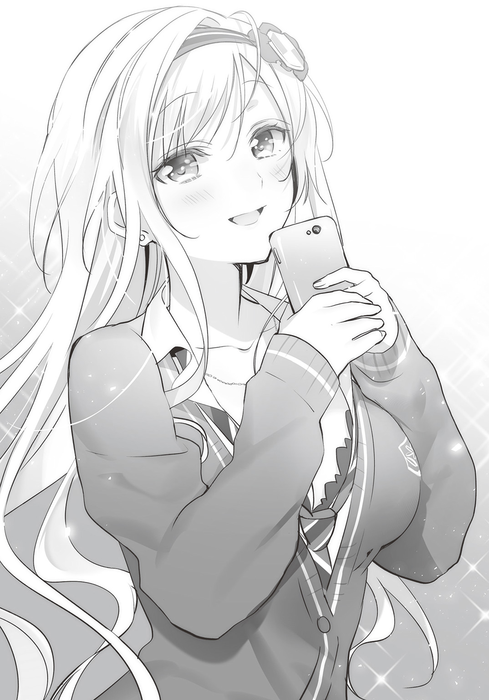
けれど、やっぱり気分は悪くない。
数えていなかったアドレス帳。
多すぎたせいじゃない。きっと、最初は増えることによろこんでいた。
ただただ、アドレスを増やすことにしか興味がなかったから。アドレス交換することそのものが、目的になっていた。
「......確かに、リア充には近づいてるはずなんだよな」
須藤を見ていれば、まだまだ足りないと感じる。
それでも、中学のころから比べれば、はるかに大きな前進をしてきたはずだ。そのことを改めて、再認識した。
そして、これからもまだまだ、先へ進んでいく余地はある。
この積み重ねを一歩ずつ、一歩ずつ。今日、改めて刻んだ一歩......瑠句のアドレスを見て、それを嚙みしめる。
「......」
嚙みしめる......。
「どうかしましたか？」
「このアドレス〝dark_emperor.tsukuyomi〟って書いてあるんだけど」
「ひえっ」
「ひえっ、はこっちのセリフだ！ お前クラス中にこのアドレスばらまいたのか！ ダークエンペラーツクヨミを！」
「ちゅ、中学のころに設定してから変えていなくてですね」
「中二病を考慮してもこのネーミングはヤバいよ！」
「し、思春期ですもの！ 多かれ少なかれやっちゃうでしょう!?」
「英語と混ぜるな！ 神話体系ガッチャガチャじゃねえかお前！ このアドレスで自身満々に交換しようとしてきたのか！」
「い、いけなかったでしょうか」
「どこを見て、いけると思ったのか小一時間ほど考えてみろ！」
「か、考えた結果はＬＩＮＥで回答しますね」
「律儀か！ その前にアドレス変えてアドレス変更メールをばらまけよ！」
「そんな！ メールの一斉送信なんてレベルの高い行為を私に求めないでください！」
「あんだけ大きなこと言っておいてその体たらくかよ！」
「助けてくださいよ望くん、共犯者じゃないですかぁ！」
「恩返ししたいって言ってたのはどこ行ったんだよ！」
顔中べちゃべちゃにしながら擦りついてくる瑠句。
まったく、美人を台無しにすることにかけては右に出る者のいない女子だ。
「......とにかく、まずはメールの文面考えようか......」
「あい」
ぐずぐずになった瑠句をなんとか引っ張って、とりあえず歩き出す。
ああ、締まらない。
何かやり遂げても、綺麗に、爽やかに終わるには、俺たちはまだレベルが足りないらしい。
「......でもまあ、今のところはそれでもいいかな」
「うぇっ、何か言いましたか」
「なんでもないって」
ちょっと笑ってしまいそうで、顔をそらしながら歩き続ける。
これからもしばらく、こんな調子で進んでいくのだろう。
気取った空気は、まだ当分はお預けかもしれない。
でもまあ、一歩ずつ、少しずつ......変わっていくことは、できるだろう。
あ と が き
この度は、本書をお買い上げいただきありがとうございます。
北國ばらっどと申します。
初めましての方は初めまして、お久しぶりの方はお久しぶりです。
今回は諸事情で、あとがき、たっぷりあります。読み飛ばしても本編に影響ないです。
さて、今回のお話はですね。高校デビューものということで。リア充と非リア充とか、そういう話がたっぷり出てきます。
忌々しい単語ですね。ええ。
で、前作「アプリコット・レッド」とか読んでくださった方だと察しがつくような気がするんですけれど、私、北國ばらっどは、お世辞にもリア充とか言えるほうではないです。
真逆です。
人と話すのが苦手なので、なるべく人と顔を合わせなくていいような仕事を選んだつもりだったのですが、やっぱり忘年会を兼ねたパーティとかがありまして、私はキョロキョロしすぎて首だけ多重影分身みたいな状態だったり、自分の受賞年にパーティ欠席して翌年初参加だったもので「レアキャラ」とか呼ばれたりしていた次第ですけど別にこの話ししなくても良かったですね、はい。
はい。
たぶん、今回の主人公の望くんって、書いといてなんですけど、ずいぶんコミュ力あると思うんですよ。ええ。
だって彼、中学時代いくらアレだからって高校デビューする行動力がありますからね。
美容院とか行っちゃってますからね。私病院しか行ったことないですよ。創造主の私よりはるかに行動力ありますよコイツ。
そんな私も別に学生時代の友達がいなかったワケじゃなくて、そりゃ女子とお手て繫いで嬉し恥ずかしＴｏＬＯＶＥる生活ってこともなかったんですけど、いえ、ララちゃんみたいな女の子が家に来てくれればまた違ったのかもしれませんけど、いざ面と向かい合ってあんな可愛い女の子と普通に話できるかっていうとそれはそれで......脱線ですね、はい。
私はララちゃん派です。
それだけは伝えたかった。
まぁとにかく、良くしてくれる友達はおりました。
須藤みたいに男女分け隔てなく、ノリよく話してくれるやつもいれば、私と同じタイプのスタンドに目覚めそうなねちっこいモテないオーラを纏ったやつもおりました。湿度の差はありますけど、こんな私と仲良くしてくれるんだから良いやつらばかりでした。
まあ別に私もリア充じゃなかったですけど、そういう気の合う友達と仲良く話している時は、世間一般にイメージできる、キラキラ輝いているタイプのリア充な人々にも、負けず劣らず幸せな生活を送っていたんだと思います。
リア充という評価は、相対的なものです。
それは私たちの存在するコミュニティとか、例えばＳＮＳだとか、そういう広い世間の人々が思い描く評価です。
ですが、リア充だからって幸せかどうかは分かりません。
世間的に言うリア充じゃなくたって、気の合う友達とわいわい騒いでいれば、それは間違いなく幸せな時間です。
誰かと触れ合わずとも、自分の思い描く大好きな何かに打ちこむことだって、幸せの形には変わりありません。
世間的に非リア充なんて括りにされたところで、自分が良ければそれで幸せなはずです。
このお話の中では、彩李羽音というキャラクターがそれを問いかける役を担います。クラスメイトからヒかれようと、彼女は自分らしい自分でいる時間を幸せだと感じています。
けれど、望や瑠句はそれでも、リア充になることを目指します。
閉じた世界の幸せもあるけれど、開けた世界の幸せだってあるかもしれない。それはいざ、開けた舞台に上がってみなければ分からない。
絶対にどちらがいい、という話ではありません。
どちらがいいかは、どちらも見てみなければ分からないのです。
もしかしたら、どちらの楽しさも知って、自分の見ている世界が広がるかもしれない。
見てみなければわからないんです。
ララちゃんが可愛いのも分かるけど、ネメシスだって可愛いんです。
それだけは本当に伝えたかった。
さて、今回のお話も私一人の力ではなく、様々な方の誠実な仕事の上に成り立って出版されております。
素敵なキャラクター達を描いていただいた村上さま。
今回も親身に執筆を導いてくれた担当編集のＹさま。この本が出版されるまでに関わる広報、印刷、書店に関わる方々。
この場を借りて改めて、言葉にしてもしたりないお礼を述べさせていただきます。
北國ばらっど
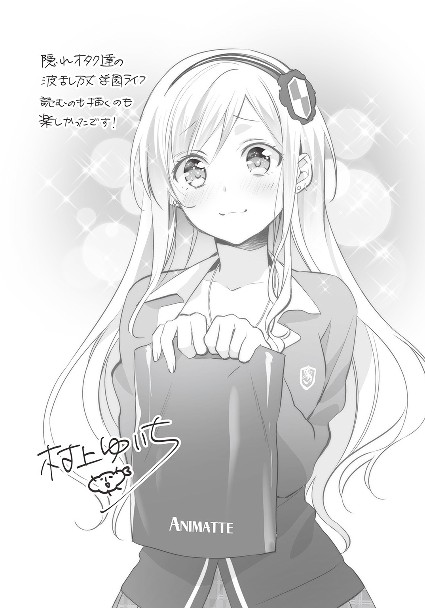
著者紹介
北國ばらっど きたぐに ばらっど
お買い上げありがとうございます。
この話の主人公より、たぶん北國ばらっどのほうがリアル充実してません。
illustration
村上ゆいち むらかみ ゆいち
兵庫出身のイラストレーターです。
るく達を思わず応援しながら描きました！
ダッシュエックス文庫DIGITAL
僕らはリア充なのでオタクな過去などありません（大嘘）
著者 北國ばらっど
© BALLAD KITAGUNI 2016
２０１６年９月30日発行
この電子書籍は、ダッシュエックス文庫「僕らはリア充なのでオタクな過去などありません（大嘘）」
２０１６年８月30日発行の第１刷を底本としています。
発行者 鈴木晴彦
発行所 株式会社 集英社
〒１０１－８０５０
東京都千代田区一ツ橋２丁目５番10号
０３－３２３０－６０８０（読者係）
制作所 株式会社ＩＣＥ
本作品の全部また一部を無断で複製、転載、改竄、インターネット上に掲載すること、および有償無償に関わらず、本データを第三者に譲渡することを禁じます。なお個人利用の目的であっても、コピーガードを解除しての複製は、法律で禁じられています。